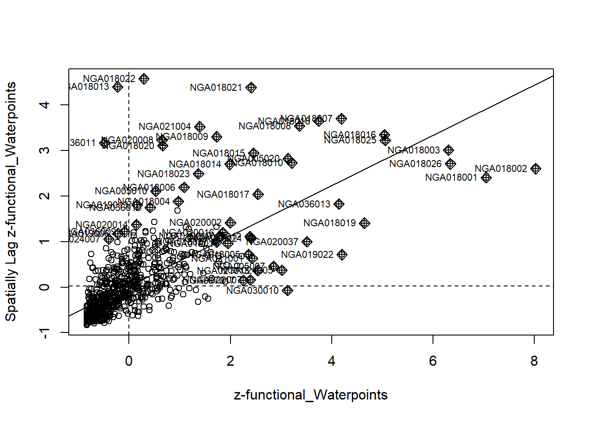
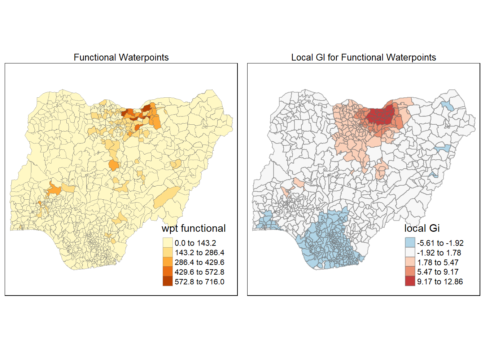

pacman::p_load(sf, spdep, tmap, tidyverse, tmap, funModeling)Take-home Exercise 1: Geospatial Analytics for Social Good
1.1 Overview
Geospatial analytics hold tremendous potential to address complex problems facing society. In this study, you are tasked to apply appropriate global and local measures of spatial Association techniques to reveals the spatial patterns of Functional & Not Functional water points. For the purpose of this study, Nigeria will be used as the study country.
1.1.1 The Data
1.1.1.1 Apstial data
For the purpose of this assignment, data from WPdx Global Data Repositories will be used. There are two versions of the data. They are: WPdx-Basic and WPdx+. You are required to use WPdx+ data set. We will rename this file to “geo_export”.
1.1.1.2 Geospatial data
Nigeria Level-2 Administrative Boundary (also known as Local Government Area) polygon features GIS data will be used in this take-home exercise. The data can be downloaded either from The Humanitarian Data Exchange portal or geoBoundaries. We will use the file “nga_polnda_adm2_1m_salb”.
1.1.2 The Task
The specific tasks of this take-home exercise are as follows:
Using appropriate sf method, import the shapefile into R and save it in a simple feature data frame format. Note that there are three Projected Coordinate Systems of Nigeria, they are: EPSG: 26391, 26392, and 26303. You can use any one of them.
Using appropriate tidyr and dplyr methods, derive the proportion of functional and non-functional water point at LGA level.
Combining the geospatial and aspatial data frame into simple feature data frame.
Performing outliers/clusters analysis by using appropriate local measures of spatial association methods.
Performing hotspot areas analysis by using appropriate local measures of spatial association methods.
1.1.3 Thematic Mapping
- Plot maps to show the spatial distribution of functional and non-functional water point rate at LGA level by using appropriate thematic mapping technique provided by tmap package.
1.1.4 Analytical Mapping
- Plot hotspot areas and outliers/clusters maps of functional and non-functional water point rate at LGA level by using appropriate thematic mapping technique provided by tmap package.
1.1.5 Grading Criteria
This exercise will be graded by using the following criteria:
Geospatial Data Wrangling (20 marks): This is an important aspect of geospatial analytics. You will be assessed on your ability to employ appropriate R functions from various R packages specifically designed for modern data science such as readr, tidyverse (tidyr, dplyr, ggplot2), sf just to mention a few of them, to perform the entire geospatial data wrangling processes, including. This is not limited to data import, data extraction, data cleaning and data transformation. Besides assessing your ability to use the R functions, this criterion also includes your ability to clean and derive appropriate variables to meet the analysis need. (Warning: All data are like vast grassland full of land mines. Your job is to clear those mines and not to step on them).
Geospatial Analysis (25 marks): In this exercise, you are expected to use the appropriate thematic and analytics mapping techniques and R functions introduced in class to analyse the geospatial data prepared. You will be assessed on your ability to derive analytical maps by using appropriate rate mapping techniques.
Geovisualisation and Geocommunication (25 marks): In this section, you will be assessed on your ability to communicate the complex spatial statistics results in business friendly visual representations. This course is geospatial centric, hence, it is important for you to demonstrate your competency in using appropriate. geovisualisation techniques to reveal and communicate the findings of your analysis.
Reproducibility (20 marks): This is an important learning outcome of this exercise. You will be assessed on your ability to provide a comprehensive documentation of the analysis procedures in the form of code chunks of Markdown. It is important to note that it is not enough by merely providing the code chunk without any explanation on the purpose and R function(s) used.
Bonus (10 marks): Demonstrate your ability to employ methods beyond what you had learned in class to gain insights from the data. The methods used must be geospatial in nature.
1.2 Getting Started
In the code chunk below, p_load() of pacman package is used to install and load the following R packages into R environment:
sf,
tidyverse,
tmap,
spdep, and
funModeling will be used for rapid Exploratory Data Analysis
1.3 Downloading and Importing Geospatial Data
In this in-class data, two geospatial data sets will be used, they are:
geo_export
nga_polnda_adm2_1m_salb
1.3.1 Importing water point geospatial data
First, we are going to import the water point geospatial data (i.e. geo_export) by using the code chunk below.
wp = st_read(dsn = 'geodata',
layer = 'geo_export',
crs = 4326) %>%
filter(clean_coun == 'Nigeria')write_rds(wp, 'geodata/wp_nga.rds')Things to learn from the code chunk above:
st_read()of sf package is used to import geo_export shapefile into R environment and save the imported geospatial data into simple feature data table.filter()of dplyr package is used to extract water point records of Nigeria.
Be warned: Avoid performing transformation if you plan to use
st_intersects()of sf package in the later stage of the geoprocessing. This is becausest_intersects()only works correctly if the geospatial data are in geographic coordinate system (i.e. wgs84)
Next, write_rds() of readr package is used to save the extracted sf data table (i.e. wp) into an output file in rds data format. The output file is called wp_nga.rds and it is saved in geodata sub-folder.
wp_nga = write_rds(wp,
'geodata/wp_nga.rds')1.3.2 Importing Nigeria LGA boundary data
Now, we are going to import the LGA boundary data into R environment by using the code chunk below.
nga = st_read(dsn = 'geodata',
layer = 'nga_polnda_adm2_1m_salb',
crs = 4326) Thing to learn from the code chunk above.
st_read()of sf package is used to import nga_polnda_adm2_1m_salb shapefile into R environment and save the imported geospatial data into simple feature data table.
1.4 Data Wrangling
1.4.1 Recoding NA values into string
In the code chunk below, replace_na() is used to recode all the NA values in status_cle field into Unknown.
wp_nga <- read_rds("geodata/wp_nga.rds") %>%
mutate(status_cle = replace_na(status_cle, "Unknown"))1.4.2 EDA
In the code chunk below, freq() of funModeling package is used to display the distribution of status_cle field in wp_nga.
freq(data=wp_nga,
input = 'status_cle')1.5 Extracting Water Point Data
In this section, we will extract the water point records by using classes in status_cle field.
1.5.1 Extracting functional water point
In the code chunk below, filter() of dplyr is used to select functional water points.
wpt_functional <- wp_nga %>%
filter(status_cle %in%
c("Functional",
"Functional but not in use",
"Functional but needs repair"))freq(data=wpt_functional,
input = 'status_cle')1.5.2 Extracting non-functional water point
In the code chunk below, filter() of dplyr is used to select non-functional water points.
wpt_nonfunctional <- wp_nga %>%
filter(status_cle %in%
c("Abandoned/Decommissioned",
"Abandoned",
"Non-Functional",
"Non functional due to dry season",
"Non-Functional due to dry season"))freq(data=wpt_nonfunctional,
input = 'status_cle')1.5.3 Extracting water point with Unknown class
In the code chunk below, filter() of dplyr is used to select water points with unknown status.
wpt_unknown <- wp_nga %>%
filter(status_cle == "Unknown")1.5.4 Performing Point-in-Polygon Count
nga_wp <- nga %>%
mutate(`total wpt` = lengths(
st_intersects(nga, wp_nga))) %>%
mutate(`wpt functional` = lengths(
st_intersects(nga, wpt_functional))) %>%
mutate(`wpt non-functional` = lengths(
st_intersects(nga, wpt_nonfunctional))) %>%
mutate(`wpt unknown` = lengths(
st_intersects(nga, wpt_unknown)))1.5.5 Saving the Analytical Data Table
nga_wp <- nga_wp %>%
mutate(pct_functional = `wpt functional`/`total wpt`) %>%
mutate(`pct_non-functional` = `wpt non-functional`/`total wpt`)Things to learn from the code chunk above:
mutate()of dplyr package is used to derive two fields namely pct_functional and pct_non-functional.
Now, you have the tidy sf data table subsequent analysis. We will save the sf data table into rds format.
write_rds(nga_wp, "geodata/nga_wp.rds")Before you end this section, please remember to delete away all the raw data. Notice that the only data file left is nga_wp.rds and it’s file size is around 2.1MB.
1.5.6 Working with Projection
Map projection is an important property of a geospatial data. In order to perform geoprocessing using two geospatial data, we need to ensure that both geospatial data are projected using similar coordinate system.
In this section, you will learn how to project a simple feature data frame from one coordinate system to another coordinate system. The technical term of this process is called projection transformation.
We will first use st_crs() of sf package as shown in the code chunk below to check the coordinate system of nga_wp dataframe.
nga_wp <- read_rds("geodata/nga_wp.rds")
st_crs(nga_wp)Coordinate Reference System:
User input: EPSG:4326
wkt:
GEOGCRS["WGS 84",
DATUM["World Geodetic System 1984",
ELLIPSOID["WGS 84",6378137,298.257223563,
LENGTHUNIT["metre",1]]],
PRIMEM["Greenwich",0,
ANGLEUNIT["degree",0.0174532925199433]],
CS[ellipsoidal,2],
AXIS["geodetic latitude (Lat)",north,
ORDER[1],
ANGLEUNIT["degree",0.0174532925199433]],
AXIS["geodetic longitude (Lon)",east,
ORDER[2],
ANGLEUNIT["degree",0.0174532925199433]],
USAGE[
SCOPE["Horizontal component of 3D system."],
AREA["World."],
BBOX[-90,-180,90,180]],
ID["EPSG",4326]]Although nga_wpdata frame is projected in wgs84 but when we read until the end of the print, it indicates that the EPSG is 4326. This is a wrong EPSG code because the correct EPSG code for wgs84 should be 26391.
1.5.9 Transforming the projection of preschool from wgs84 to EPSG 26391.
In geospatial analytics, it is very common for us to transform the original data from geographic coordinate system to projected coordinate system. This is because geographic coordinate system is not appropriate if the analysis requires the use of distance or/and area measurements.
We need to reproject nga_wpfrom one coordinate system to another coordinate system mathematically.
Let us perform the projection transformation by using the code chunk below.
nga_wp <- read_rds("geodata/nga_wp.rds")
nga_wp26391 <- st_transform(nga_wp,
crs = 26391)
st_crs(nga_wp26391)Coordinate Reference System:
User input: EPSG:26391
wkt:
PROJCRS["Minna / Nigeria West Belt",
BASEGEOGCRS["Minna",
DATUM["Minna",
ELLIPSOID["Clarke 1880 (RGS)",6378249.145,293.465,
LENGTHUNIT["metre",1]]],
PRIMEM["Greenwich",0,
ANGLEUNIT["degree",0.0174532925199433]],
ID["EPSG",4263]],
CONVERSION["Nigeria West Belt",
METHOD["Transverse Mercator",
ID["EPSG",9807]],
PARAMETER["Latitude of natural origin",4,
ANGLEUNIT["degree",0.0174532925199433],
ID["EPSG",8801]],
PARAMETER["Longitude of natural origin",4.5,
ANGLEUNIT["degree",0.0174532925199433],
ID["EPSG",8802]],
PARAMETER["Scale factor at natural origin",0.99975,
SCALEUNIT["unity",1],
ID["EPSG",8805]],
PARAMETER["False easting",230738.26,
LENGTHUNIT["metre",1],
ID["EPSG",8806]],
PARAMETER["False northing",0,
LENGTHUNIT["metre",1],
ID["EPSG",8807]]],
CS[Cartesian,2],
AXIS["(E)",east,
ORDER[1],
LENGTHUNIT["metre",1]],
AXIS["(N)",north,
ORDER[2],
LENGTHUNIT["metre",1]],
USAGE[
SCOPE["Engineering survey, topographic mapping."],
AREA["Nigeria - onshore west of 6°30'E, onshore and offshore shelf."],
BBOX[3.57,2.69,13.9,6.5]],
ID["EPSG",26391]]For simplicity sake, nga_wp26391 will be renamed to nga_wp and overwrite its data using the code chunk below.
nga_wp <- nga_wp263912 Proportion of functional and non-functional water point at LGA level.
There are in total 773 LGA as per nga_wp26391 data table. We shall extract the relevant information and create a table (tab) to show the relevant columns (proportion of functional and non-functional water points at LGA level)
tab <- nga_wp[,c(6,14,15,16,18,19)]
tabSimple feature collection with 773 features and 6 fields
Geometry type: MULTIPOLYGON
Dimension: XY
Bounding box: xmin: 28868.2 ymin: 30747.71 xmax: 1343676 ymax: 1094979
Projected CRS: Minna / Nigeria West Belt
First 10 features:
ADM2_CODE total wpt wpt functional wpt non-functional pct_functional
1 NGA001001 16 5 9 0.3125000
2 NGA001002 76 32 37 0.4210526
3 NGA001003 25 7 7 0.2800000
4 NGA001004 60 15 15 0.2500000
5 NGA001005 107 13 43 0.1214953
6 NGA001006 95 22 31 0.2315789
7 NGA001007 57 14 33 0.2456140
8 NGA001008 64 25 18 0.3906250
9 NGA001009 174 30 117 0.1724138
10 NGA001010 39 8 19 0.2051282
pct_non-functional geometry
1 0.5625000 MULTIPOLYGON (((543570.1 12...
2 0.4868421 MULTIPOLYGON (((542081.5 11...
3 0.2800000 MULTIPOLYGON (((608160.4 17...
4 0.2500000 MULTIPOLYGON (((568876.8 20...
5 0.4018692 MULTIPOLYGON (((568036.9 16...
6 0.3263158 MULTIPOLYGON (((540288.3 14...
7 0.5789474 MULTIPOLYGON (((549299.6 16...
8 0.2812500 MULTIPOLYGON (((551352.8 21...
9 0.6724138 MULTIPOLYGON (((563707 1442...
10 0.4871795 MULTIPOLYGON (((586759.5 20...3 Visualizing the spatial distribution of water points
3.1 Thematic Mapping
Maps are plotted to show the spatial distribution of functional and non-functional water point rate at LGA level by using appropriate thematic mapping technique provided by tmap package.
To draw a high quality cartographic choropleth map as shown in the figure below, tmap’s drawing elements should be used.
In the code chunk below, the following tmap’s drawing elements are used:
tm_shape() is used to define the input data (i.e nga_wp)
tm_fill() shades the polygons by using the default colour scheme to show the geographical distribution of a selected variable (i.e
wpt functional and `wpt non-functional)tm_borders() adds the borders of the shapefile onto the choropleth map
tm_layout() refers to the combination of all map elements into a cohensive map. Map elements include among others the objects to be mapped, the title, the scale bar, the compass, margins and aspects ratios. Colour settings and data classification methods covered in the previous section relate to the palette and break-points are used to affect how the map looks.
The 2 maps are placed side by side for better comparison using tmap_arrange().
wP_functional <- tm_shape(nga_wp)+
tm_fill("wpt functional",
style = "equal")+
tm_layout(main.title = "Functional Waterpoints",
main.title.position = "center",
main.title.size = 0.8,
legend.height = 0.4,
legend.width = 0.3)+
tm_borders(lwd = 0.1, alpha = 0.5)
wp_nonfunctional <- tm_shape(nga_wp)+
tm_fill( "wpt non-functional",
style = "equal")+
tm_layout(main.title = "Non-functional Waterpoints",
main.title.position = "center",
main.title.size = 0.8,
legend.height = 0.4,
legend.width = 0.3)+
tm_borders(lwd = 0.1, alpha = 0.5)
tmap_arrange(wP_functional, wp_nonfunctional, asp=1, ncol=2)4.4 Global Spatial Autocorrelation
In this section, we will compute global spatial autocorrelation statistics and perform spatial complete randomness test for global spatial autocorrelation.
4.4.1 Computing Contiguity Spatial Weights
Before we can compute the global spatial autocorrelation statistics, we need to construct a spatial weights of the study area. The spatial weights is used to define the neighborhood relationships between the geographical units (i.e. ADM2_CODE) in the study area.
In the code chunk below, poly2nb() of spdep package is used to compute contiguity weight matrices for the study area. This function builds a neighbors list based on regions with contiguous boundaries. If you look at the documentation you will see that you can pass a “queen” argument that takes TRUE or FALSE as options. If you do not specify this argument the default is set to TRUE, that is, if you don’t specify queen = FALSE this function will return a list of first order neighbors using the Queen criteria.
More specifically, the code chunk below is used to compute Queen contiguity weight matrix.
wm_q <- poly2nb(nga_wp,
queen=TRUE)
summary(wm_q)Neighbour list object:
Number of regions: 773
Number of nonzero links: 4484
Percentage nonzero weights: 0.7504238
Average number of links: 5.800776
Link number distribution:
1 2 3 4 5 6 7 8 9 10 11 12 13
2 13 53 117 178 156 121 71 41 15 4 1 1
2 least connected regions:
475 505 with 1 link
1 most connected region:
516 with 13 linksThe summary report above shows that there are 773 area units in Nigeria. The most connected area unit (516) has 13 neighbors. There are two area units (475 & 505) with only one neighbor.
4.4.2 Row-standardized weights matrix
Next, we need to assign weights to each neighboring polygon. In our case, each neighboring polygon will be assigned equal weight (style=“W”). This is accomplished by assigning the fraction 1/(#ofneighbors) to each neighboring county then summing the weighted income values. While this is the most intuitive way to summaries the neighbors’ values it has one drawback in that polygons along the edges of the study area will base their lagged values on fewer polygons thus potentially over- or under-estimating the true nature of the spatial autocorrelation in the data. For this example, we’ll stick with the style=“W” option for simplicity’s sake but note that other more robust options are available, notably style=“B”.
rswm_q <- nb2listw(wm_q,
style="W",
zero.policy = TRUE)
rswm_qCharacteristics of weights list object:
Neighbour list object:
Number of regions: 773
Number of nonzero links: 4484
Percentage nonzero weights: 0.7504238
Average number of links: 5.800776
Weights style: W
Weights constants summary:
n nn S0 S1 S2
W 773 597529 773 281.9605 3193.332The input of nb2listw() must be an object of class nb. The syntax of the function has two major arguments, namely style and zero.policy.
- style can take values “W”, “B”, “C”, “U”, “minmax” and “S”. B is the basic binary coding, W is row standardized (sums over all links to n), C is globally standardized (sums over all links to n), U is equal to C divided by the number of neighbors (sums over all links to unity), while S is the variance-stabilizing coding scheme proposed by Tiefelsdorf et al. 1999, p. 167-168 (sums over all links to n).
- If zero policy is set to TRUE, weights vectors of zero length are inserted for regions without neighbor in the neighbors list. These will in turn generate lag values of zero, equivalent to the sum of products of the zero row t(rep(0, length=length(neighbors))) %*% x, for arbitrary numerical vector x of length length(neighbors). The spatially lagged value of x for the zero-neighbor region will then be zero, which may (or may not) be a sensible choice.
4.4.3 Global Spatial Autocorrelation: Moran’s I & Geary’s C for Functional Waterpoints
In this section, we will perform Moran’s I statistics testing by using moran.test() and geary.test() of spdep for functional waterpoints.
4.4.3.1 Moran’s I test for Functional Waterpoints
The code chunk below performs Moran’s I statistical testing using moran.test() of spdep.
f_wpt = moran.test(nga_wp$`wpt functional`,
listw=rswm_q,
zero.policy = TRUE,
na.action=na.omit)
f_wpt
Moran I test under randomisation
data: nga_wp$`wpt functional`
weights: rswm_q
Moran I statistic standard deviate = 25.818, p-value < 2.2e-16
alternative hypothesis: greater
sample estimates:
Moran I statistic Expectation Variance
0.5518087465 -0.0012953368 0.0004589518 Moran I statistic is found to be 0.5518087465. positive (I>0): Clustered, observations tend to be similar. There is a need to confirm the Moran I statistic by comparing actual value of Moran’s I to Monte Carlo Moran’s I to obtain p-value.
4.4.3.2 Computing Monte Carlo Moran’s I for Functional Waterpoints
The code chunk below performs permutation test for Moran’s I statistic by using moran.mc() of spdep. A total of 1000 simulation will be performed.
Bear in mind the number of simulation starts counting from 0 hence nsim = 999.
set seed (value) where value specifies the initial value of the random number seed.
The na.omit R function removes all incomplete cases of a data object
set.seed(1234)
bperm_f_wpt = moran.mc(nga_wp$`wpt functional`,
listw=rswm_q,
nsim=999,
zero.policy = TRUE,
na.action=na.omit)
bperm_f_wpt
Monte-Carlo simulation of Moran I
data: nga_wp$`wpt functional`
weights: rswm_q
number of simulations + 1: 1000
statistic = 0.55181, observed rank = 1000, p-value = 0.001
alternative hypothesis: greaterMonte Carlo Moran’s I is identical to previously obtained Moran I statistic. The p-value is 0.001 < 0.05, hence the result is statistically significant. Hence we can conclude that there is indeed clustering.
4.4.3.3 Visualizing Monte Carlo Moran’s I for Functional Waterpoints
It is always a good practice for us the examine the simulated Moran’s I test statistics in greater detail. This can be achieved by plotting the distribution of the statistical values as a histogram by using the code chunks below.
hist(bperm_f_wpt$res,
freq=TRUE,
xlim = c(-0.1,0.6),
breaks=50,
main = "Histogram of Monte Carlo Moran's I for Functional Waterpoints",
xlab="Simulated Moran's I for Functional Waterpoints")
abline(v=0,
col="red") 4.4.3.4 Geary’s C test for Functional Waterpoints
The code chunk below performs Geary’s C statistical testing using geary.test() of spdep.
geary.test(nga_wp$`wpt functional`, listw=rswm_q)
Geary C test under randomisation
data: nga_wp$`wpt functional`
weights: rswm_q
Geary C statistic standard deviate = 15.383, p-value < 2.2e-16
alternative hypothesis: Expectation greater than statistic
sample estimates:
Geary C statistic Expectation Variance
0.468025940 1.000000000 0.001195875 Geary C statistic is found to be 0.468025940. small c value (<1): Clustered, observations tend to be similar. There is a need to confirm the Geary C statistic by comparing actual value of Geary’s C to Monte Carlo Geary’s C to obtain p-value.
4.4.3.5 Computing Monte Carlo Geary’s C for Functional Waterpoints
set.seed(1234)
bperm_g_f_wpt=geary.mc(nga_wp$`wpt functional`,
listw=rswm_q,
nsim=999)
bperm_g_f_wpt
Monte-Carlo simulation of Geary C
data: nga_wp$`wpt functional`
weights: rswm_q
number of simulations + 1: 1000
statistic = 0.46803, observed rank = 1, p-value = 0.001
alternative hypothesis: greaterMonte Carlo Geary’s C is identical to previously obtained Geary C statistic. The p-value is 0.001 < 0.05, hence the result is statistically significant. Hence we can conclude that there is indeed clustering.
4.4.3.6 Visualizing the Monte Carlo Geary’s C for Functional Waterpoints
hist(bperm_g_f_wpt$res,
freq=TRUE,
breaks=20,
main = "Histogram of Monte Carlo Geary's C for Functional Waterpoints",
xlab="Simulated Geary's C for Functional Waterpoints")
abline(v=1, col="red")4.4.3.7 Conclusion after review of Monte Carlo histograms of both Moran’s I and Geary’s C for Functional Waterpoints
It is acceptable to use either Moran’s I or Geary’s C as their p-values are below 0.05. There is no merit to choose one over the other as distribution of both histograms are not approximately normal. Moving forward, we will be using Moran’s I for functional waterpoints.
4.4.4 Global Spatial Autocorrelation: Moran’s I & Geary’s C for Non-functional Waterpoints
In this section, we will perform Moran’s I statistics testing by using moran.test() and geary.test() of spdep for non-functional waterpoints.
4.4.4.1 Moran’s I test for Non-functional Waterpoints
The code chunk below performs Moran’s I statistical testing using moran.test() of spdep.
nf_wpt = moran.test(nga_wp$`wpt non-functional`,
listw=rswm_q,
zero.policy = TRUE,
na.action=na.omit)
nf_wpt
Moran I test under randomisation
data: nga_wp$`wpt non-functional`
weights: rswm_q
Moran I statistic standard deviate = 19.973, p-value < 2.2e-16
alternative hypothesis: greater
sample estimates:
Moran I statistic Expectation Variance
0.4301096187 -0.0012953368 0.0004665373 Moran I statistic is found to be 0.4301096187. positive (I>0): Clustered, observations tend to be similar. There is a need to confirm the Moran I statistic by comparing actual value of Moran’s I to Monte Carlo Moran’s I to obtain p-value.
4.4.4.2 Computing Monte Carlo Moran’s I for Non-functional Waterpoints
set.seed(1234)
bperm_nf_wpt = moran.mc(nga_wp$`wpt non-functional`,
listw=rswm_q,
nsim=999,
zero.policy = TRUE,
na.action=na.omit)
bperm_nf_wpt
Monte-Carlo simulation of Moran I
data: nga_wp$`wpt non-functional`
weights: rswm_q
number of simulations + 1: 1000
statistic = 0.43011, observed rank = 1000, p-value = 0.001
alternative hypothesis: greaterMonte Carlo Moran’s I is identical to previously obtained Moran I statistic. The p-value is 0.001 < 0.05, hence the result is statistically significant. Hence we can conclude that there is indeed clustering.
4.4.4.3 Visualizing Monte Carlo Moran’s I for Non-functional Waterpoints
hist(bperm_nf_wpt$res,
freq=TRUE,
xlim = c(-0.1,0.5),
breaks=50,
main = "Histogram of Monte Carlo Moran's I for Non-functional Waterpoints",
xlab="Simulated Moran's I")
abline(v=0,
col="red") 4.4.4.4 Geary’s C test for Non-functional Waterpoints
The code chunk below performs Geary’s C test for spatial autocorrelation by using geary.test() of spdep.
geary.test(nga_wp$`wpt non-functional`, listw=rswm_q)
Geary C test under randomisation
data: nga_wp$`wpt non-functional`
weights: rswm_q
Geary C statistic standard deviate = 14.296, p-value < 2.2e-16
alternative hypothesis: Expectation greater than statistic
sample estimates:
Geary C statistic Expectation Variance
0.6289314781 1.0000000000 0.0006737348 Geary C statistic is found to be 0.6289314781. Small c value (<1): Clustered, observations tend to be similar. There is a need to confirm the Geary C statistic by comparing actual value of Geary’s C to Monte Carlo Geary’s C to obtain p-value.
4.4.4.5 Computing Monte Carlo Geary’s C for Non-functional Waterpoints
set.seed(1234)
bperm_g_nf_wpt=geary.mc(nga_wp$`wpt non-functional`,
listw=rswm_q,
nsim=999)
bperm_g_nf_wpt
Monte-Carlo simulation of Geary C
data: nga_wp$`wpt non-functional`
weights: rswm_q
number of simulations + 1: 1000
statistic = 0.62893, observed rank = 1, p-value = 0.001
alternative hypothesis: greaterMonte Carlo Geary’s C is identical to previously obtained Geary C statistic. The p-value is 0.001 < 0.05, hence the result is statistically significant. Hence we can conclude that there is indeed clustering.
4.4.4.6 Visualizing the Monte Carlo Geary’s C for Non-functional Waterpoints
Next, we will plot a histogram to reveal the distribution of the simulated values by using the code chunk below.
hist(bperm_g_nf_wpt$res,
freq=TRUE,
breaks=20,
main = "Histogram of Monte Carlo Geary's C for Non-functional Waterpoints",
xlab="Simulated Geary's C for Non-functional Waterpoint ")
abline(v=1, col="red") 4.4.3.7 Conclusion after review of Monte Carlo histograms of both Moran’s I and Geary’s C for Non-functional Waterpoints
It is acceptable to use either Moran’s I or Geary’s C as their p-values are below 0.05. There is no merit to choose one over the other as distribution of both histograms are not approximately normal. Moving forward, we will be using Moran’s I for non-functional waterpoints.
4.5 Spatial Correlogram
Spatial correlograms are great to examine patterns of spatial autocorrelation in your data or model residuals. They show how correlated are pairs of spatial observations when you increase the distance (lag) between them - they are plots of some index of autocorrelation (Moran’s I or Geary’s c) against distance. Although correlograms are not as fundamental as variograms (a keystone concept of geostatistics), they are very useful as an exploratory and descriptive tool. For this purpose they actually provide richer information than variograms.
4.5.1 Compute Moran’s I correlogram for Functional Waterpoints
In the code chunk below, sp.correlogram() of spdep package is used to compute a 6-lag spatial correlogram of `wpt functional`. The global spatial autocorrelation used in Moran’s I. The plot() of base Graph is then used to plot the output.
MI_corr_f_wpt <- sp.correlogram(wm_q,
nga_wp$`wpt functional`,
order=6,
method="I",
style="W")
plot(MI_corr_f_wpt)By plotting the output might not allow us to provide complete interpretation. This is because not all autocorrelation values are statistically significant. Hence, it is important for us to examine the full analysis report by printing out the analysis results as in the code chunk below.
print(MI_corr_f_wpt)Spatial correlogram for nga_wp$`wpt functional`
method: Moran's I
estimate expectation variance standard deviate Pr(I) two sided
1 (773) 5.5181e-01 -1.2953e-03 4.5895e-04 25.818 < 2.2e-16
2 (773) 4.5396e-01 -1.2953e-03 1.9759e-04 32.388 < 2.2e-16
3 (773) 3.5993e-01 -1.2953e-03 1.1970e-04 33.017 < 2.2e-16
4 (773) 2.8542e-01 -1.2953e-03 8.6698e-05 30.793 < 2.2e-16
5 (773) 1.9300e-01 -1.2953e-03 6.7697e-05 23.614 < 2.2e-16
6 (773) 1.3391e-01 -1.2953e-03 5.6591e-05 17.973 < 2.2e-16
1 (773) ***
2 (773) ***
3 (773) ***
4 (773) ***
5 (773) ***
6 (773) ***
---
Signif. codes: 0 '***' 0.001 '**' 0.01 '*' 0.05 '.' 0.1 ' ' 1Moran’s I decrease as spatial lags increases from 1 to 6. As the order of neighbor increases, the degree of clustering decreases. After multiple testings, Pr(I) is not statistically significant at spatial lag 10 and Moran’s I turns negative starting henceforth.
4.5.2 Compute Geary’s C correlogram and plot for Functional Waterpoints
GC_corr_f_wpt <- sp.correlogram(wm_q,
nga_wp$`wpt functional`,
order=6,
method="C",
style="W")
plot(GC_corr_f_wpt)By plotting the output might not allow us to provide complete interpretation. This is because not all autocorrelation values are statistically significant. Hence, it is important for us to examine the full analysis report by printing out the analysis results as in the code chunk below.
print(GC_corr_f_wpt)Spatial correlogram for nga_wp$`wpt functional`
method: Geary's C
estimate expectation variance standard deviate Pr(I) two sided
1 (773) 0.46802594 1.00000000 0.00119588 -15.3832 < 2.2e-16 ***
2 (773) 0.55789502 1.00000000 0.00079243 -15.7052 < 2.2e-16 ***
3 (773) 0.63636061 1.00000000 0.00063656 -14.4129 < 2.2e-16 ***
4 (773) 0.70991012 1.00000000 0.00062241 -11.6277 < 2.2e-16 ***
5 (773) 0.79552249 1.00000000 0.00062612 -8.1718 3.039e-16 ***
6 (773) 0.86736007 1.00000000 0.00074435 -4.8617 1.164e-06 ***
---
Signif. codes: 0 '***' 0.001 '**' 0.01 '*' 0.05 '.' 0.1 ' ' 1Geary’s C increases as spatial lags increases from 1 to 6. As the order of neighbor increases, the degree of clustering decreases. After multiple testings, Geary’s C turns flat staying below 1 starting from spatial lag 7.
4.5.3 Compute Moran’s I correlogram for Non-functional Waterpoints
MI_corr_nf_wpt <- sp.correlogram(wm_q,
nga_wp$`wpt non-functional`,
order=6,
method="I",
style="W")
plot(MI_corr_nf_wpt)By plotting the output might not allow us to provide complete interpretation. This is because not all autocorrelation values are statistically significant. Hence, it is important for us to examine the full analysis report by printing out the analysis results as in the code chunk below.
print(MI_corr_nf_wpt)Spatial correlogram for nga_wp$`wpt non-functional`
method: Moran's I
estimate expectation variance standard deviate Pr(I) two sided
1 (773) 4.3011e-01 -1.2953e-03 4.6654e-04 19.9729 < 2.2e-16
2 (773) 2.6815e-01 -1.2953e-03 2.0085e-04 19.0121 < 2.2e-16
3 (773) 1.9482e-01 -1.2953e-03 1.2168e-04 17.7794 < 2.2e-16
4 (773) 1.3648e-01 -1.2953e-03 8.8129e-05 14.6761 < 2.2e-16
5 (773) 6.3707e-02 -1.2953e-03 6.8814e-05 7.8359 4.654e-15
6 (773) 2.7753e-02 -1.2953e-03 5.7524e-05 3.8300 0.0001282
1 (773) ***
2 (773) ***
3 (773) ***
4 (773) ***
5 (773) ***
6 (773) ***
---
Signif. codes: 0 '***' 0.001 '**' 0.01 '*' 0.05 '.' 0.1 ' ' 1Moran’s I decrease as spatial lags increases from 1 to 6. As the order of neighbor increases, the degree of clustering decreases. After multiple testings, Pr(I) is not statistically significant at spatial lag 7 and Moran’s I turns negative starting henceforth.
4.5.4 Compute Geary’s C correlogram and plot
In the code chunk below, sp.correlogram() of spdep package is used to compute a 6-lag spatial correlogram of `wpt non-functional`. The global spatial autocorrelation used in Geary’s C. The plot() of base Graph is then used to plot the output.
GC_corr_nf_wpt <- sp.correlogram(wm_q,
nga_wp$`wpt non-functional`,
order=8,
method="C",
style="W")
plot(GC_corr_nf_wpt)By plotting the output might not allow us to provide complete interpretation. This is because not all autocorrelation values are statistically significant. Hence, it is important for us to examine the full analysis report by printing out the analysis results as in the code chunk below.
print(GC_corr_nf_wpt)Spatial correlogram for nga_wp$`wpt non-functional`
method: Geary's C
estimate expectation variance standard deviate Pr(I) two sided
1 (773) 0.62893148 1.00000000 0.00067373 -14.2958 < 2.2e-16 ***
2 (773) 0.75743251 1.00000000 0.00036843 -12.6373 < 2.2e-16 ***
3 (773) 0.81590194 1.00000000 0.00026738 -11.2586 < 2.2e-16 ***
4 (773) 0.86991261 1.00000000 0.00023922 -8.4107 < 2.2e-16 ***
5 (773) 0.95214396 1.00000000 0.00022636 -3.1808 0.001469 **
6 (773) 0.99534531 1.00000000 0.00025160 -0.2934 0.769179
7 (773) 1.03397466 1.00000000 0.00032633 1.8807 0.060010 .
8 (773) 1.05167167 1.00000000 0.00040028 2.5827 0.009804 **
---
Signif. codes: 0 '***' 0.001 '**' 0.01 '*' 0.05 '.' 0.1 ' ' 1Geary’s C increases as spatial lags increases from 1 to 6. As the order of neighbor increases, the degree of clustering decreases. After multiple testings, Pr(I) is not statistically significant at spatial lag 6, Geary’s C goes above 1 starting from spatial lag 7.
4.6 Cluster and Outlier Analysis
Local Indicators of Spatial Association or LISA are statistics that evaluate the existence of clusters in the spatial arrangement of a given variable. For instance if we are studying cancer rates among census tracts in a given city local clusters in the rates mean that there are areas that have higher or lower rates than is to be expected by chance alone; that is, the values occurring are above or below those of a random distribution in space.
In this section, you will learn how to apply appropriate Local Indicators for Spatial Association (LISA), especially local Moran’s I to detect cluster and/or outlier from functional and non-functional waterpoints of Nigeria.
4.6.1 Computing local Moran’s I for Functional Waterpoints
To compute local Moran’s I, the localmoran() function of spdep will be used. It computes Ii values, given a set of zi values and a listw object providing neighbor weighting information for the polygon associated with the zi values.
The code chunks below are used to compute local Moran’s I of functional waterpoints at the county level.
fips <- order(nga_wp$ADM2_CODE)
localMI_f_wpt <- localmoran(nga_wp$`wpt functional`, rswm_q)
head(localMI_f_wpt) Ii E.Ii Var.Ii Z.Ii Pr(z != E(Ii))
1 0.4518554 -0.0007743811 0.14895142 1.172791 0.24087944
2 0.2932012 -0.0002495782 0.04803132 1.338976 0.18057833
3 0.3949213 -0.0007255814 0.09280546 1.298736 0.19403449
4 0.4448276 -0.0005462632 0.05227489 1.947952 0.05142074
5 0.4197113 -0.0005887106 0.07530933 1.531563 0.12563022
6 0.3375760 -0.0004102032 0.06306252 1.345901 0.17833430localmoran() function returns a matrix of values whose columns are:
Ii: the local Moran’s I statistics
E.Ii: the expectation of local Moran’s I statistics under the randomization hypothesis
Var.Ii: the variance of local Moran’s I statistics under the randomization hypothesis
Z.Ii:the standard deviate of local Moran’s I statistics
Pr(): the p-value of local Moran’s I statistics
The code chunk below list the content of the local Moran’s I statistics matrix derived by using printCoefmat().
printCoefmat(data.frame(
localMI_f_wpt[fips,],
row.names=nga_wp$ADM2_CODE[fips]),
check.names=FALSE) Ii E.Ii Var.Ii Z.Ii Pr.z....E.Ii..
NGA001001 4.5186e-01 -7.7438e-04 1.4895e-01 1.1728e+00 0.2409
NGA001002 2.9320e-01 -2.4958e-04 4.8031e-02 1.3390e+00 0.1806
NGA001003 3.9492e-01 -7.2558e-04 9.2805e-02 1.2987e+00 0.1940
NGA001004 4.4483e-01 -5.4626e-04 5.2275e-02 1.9480e+00 0.0514
NGA001005 4.1971e-01 -5.8871e-04 7.5309e-02 1.5316e+00 0.1256
NGA001006 3.3758e-01 -4.1020e-04 6.3063e-02 1.3459e+00 0.1783
NGA001007 3.8528e-01 -5.6729e-04 6.2122e-02 1.5481e+00 0.1216
NGA001008 3.5824e-01 -3.5785e-04 5.5016e-02 1.5288e+00 0.1263
NGA001009 2.9481e-01 -2.7853e-04 2.1273e-02 2.0232e+00 0.0430
NGA001010 4.7116e-01 -7.0178e-04 1.3500e-01 1.2843e+00 0.1991
NGA001011 4.2117e-01 -7.2558e-04 6.9422e-02 1.6012e+00 0.1093
NGA001012 3.9201e-01 -6.1053e-04 7.8099e-02 1.4049e+00 0.1600
NGA001013 3.4753e-01 -4.1020e-04 4.4927e-02 1.6415e+00 0.1007
NGA001014 2.9501e-01 -2.4958e-04 3.1937e-02 1.6522e+00 0.0985
NGA001015 3.4670e-01 -3.9235e-04 4.2973e-02 1.6743e+00 0.0941
NGA001016 3.3482e-01 -3.5785e-04 5.5016e-02 1.4290e+00 0.1530
NGA001017 5.3082e-01 -7.7438e-04 8.4783e-02 1.8257e+00 0.0679
NGA002001 4.4610e-01 -7.0178e-04 6.7146e-02 1.7243e+00 0.0847
NGA002002 4.4887e-01 -5.6729e-04 7.2570e-02 1.6684e+00 0.0952
NGA002003 2.0624e-01 -7.9938e-04 1.5376e-01 5.2801e-01 0.5975
NGA002004 3.1418e-01 -3.0906e-04 5.9476e-02 1.2896e+00 0.1972
NGA002005 4.0293e-01 -4.6613e-04 7.1657e-02 1.5069e+00 0.1318
NGA002006 2.8152e-01 -6.1053e-04 7.8099e-02 1.0096e+00 0.3127
NGA002007 4.4541e-01 -7.4978e-04 9.5899e-02 1.4407e+00 0.1497
NGA002008 5.2669e-01 -6.7837e-04 1.7422e-01 1.2635e+00 0.2064
NGA002009 8.6851e-02 -8.5056e-04 1.3070e-01 2.4259e-01 0.8083
NGA002010 5.8365e-01 -9.0333e-04 1.7373e-01 1.4024e+00 0.1608
NGA002011 4.9454e-01 -5.8871e-04 9.0489e-02 1.6460e+00 0.0998
NGA002012 1.0643e-01 -7.0178e-04 5.9608e-02 4.3879e-01 0.6608
NGA002013 4.6459e-01 -5.4626e-04 1.4031e-01 1.2417e+00 0.2143
NGA002014 5.6711e-01 -9.0333e-04 1.3880e-01 1.5246e+00 0.1274
NGA002015 6.3017e-01 -9.0333e-04 3.4837e-01 1.0692e+00 0.2850
NGA002016 4.6682e-01 -8.2477e-04 1.2674e-01 1.3136e+00 0.1890
NGA002017 4.4741e-01 -7.7438e-04 8.4783e-02 1.5392e+00 0.1237
NGA002018 3.8569e-01 -4.2845e-04 4.6925e-02 1.7824e+00 0.0747
NGA002019 -1.4142e-01 -7.9938e-04 2.0527e-01 -3.1037e-01 0.7563
NGA002020 5.1102e-01 -7.4978e-04 1.1523e-01 1.5076e+00 0.1316
NGA002021 4.2497e-01 -5.0540e-04 1.9499e-01 9.6354e-01 0.3353
NGA003001 3.3242e-01 -3.9235e-04 5.0201e-02 1.4854e+00 0.1374
NGA003002 4.4791e-01 -7.9938e-04 1.2284e-01 1.2802e+00 0.2005
NGA003003 2.1515e-01 -1.7226e-04 2.6489e-02 1.3230e+00 0.1858
NGA003004 3.3823e-01 -4.8557e-04 6.2122e-02 1.3590e+00 0.1742
NGA003005 3.5773e-01 -4.6613e-04 5.1050e-02 1.5854e+00 0.1129
NGA003006 4.0264e-01 -5.2563e-04 8.0799e-02 1.4183e+00 0.1561
NGA003007 3.1094e-01 -7.0178e-04 8.9763e-02 1.0402e+00 0.2983
NGA003008 4.3972e-01 -7.0178e-04 1.0786e-01 1.3411e+00 0.1799
NGA003009 3.0879e-01 -4.4709e-04 6.8731e-02 1.1795e+00 0.2382
NGA003010 3.0637e-01 -4.4709e-04 5.7201e-02 1.2828e+00 0.1995
NGA003011 4.0948e-01 -6.7837e-04 1.3050e-01 1.1354e+00 0.2562
NGA003012 3.2528e-01 -3.9235e-04 4.2973e-02 1.5710e+00 0.1162
NGA003013 3.0995e-01 -3.0906e-04 4.7519e-02 1.4233e+00 0.1547
NGA003014 3.7884e-01 -5.4626e-04 1.4031e-01 1.0128e+00 0.3111
NGA003015 4.7522e-01 -7.2558e-04 9.2805e-02 1.5623e+00 0.1182
NGA003016 2.8844e-01 -5.6729e-04 1.0914e-01 8.7480e-01 0.3817
NGA003017 4.8339e-01 -6.7837e-04 1.3050e-01 1.3400e+00 0.1802
NGA003018 2.2774e-01 -1.8415e-04 2.3567e-02 1.4847e+00 0.1376
NGA003019 3.3201e-01 -4.6613e-04 8.9688e-02 1.1102e+00 0.2669
NGA003020 2.7463e-01 -3.5785e-04 6.8860e-02 1.0479e+00 0.2947
NGA003021 2.0296e-01 -1.7226e-04 1.6491e-02 1.5818e+00 0.1137
NGA003022 3.7258e-01 -4.6613e-04 5.1050e-02 1.6511e+00 0.0987
NGA003023 2.7161e-01 -3.5785e-04 3.9195e-02 1.3737e+00 0.1695
NGA003024 2.8081e-01 -3.2493e-04 4.1577e-02 1.3788e+00 0.1680
NGA003025 3.2047e-01 -6.1053e-04 1.1745e-01 9.3688e-01 0.3488
NGA003026 3.6652e-01 -6.5536e-04 8.3830e-02 1.2682e+00 0.2047
NGA003027 4.8488e-01 -6.7837e-04 1.7422e-01 1.1633e+00 0.2447
NGA003028 4.4158e-01 -6.7837e-04 8.6771e-02 1.5014e+00 0.1333
NGA003029 3.4283e-01 -7.0178e-04 8.9763e-02 1.1466e+00 0.2515
NGA003030 3.9253e-01 -4.6613e-04 7.1657e-02 1.4681e+00 0.1421
NGA003031 2.4203e-01 -2.0913e-04 1.5974e-02 1.9166e+00 0.0553
NGA004001 5.4805e-01 -7.7438e-04 1.1901e-01 1.5909e+00 0.1116
NGA004002 3.9698e-01 -4.6613e-04 5.9636e-02 1.6275e+00 0.1036
NGA004003 3.6491e-01 -3.5785e-04 3.4251e-02 1.9737e+00 0.0484
NGA004004 4.0996e-01 -3.9235e-04 4.2973e-02 1.9795e+00 0.0478
NGA004005 5.0305e-01 -7.0178e-04 6.7146e-02 1.9440e+00 0.0519
NGA004006 4.9324e-01 -6.7837e-04 1.0426e-01 1.5297e+00 0.1261
NGA004007 5.1855e-01 -7.4978e-04 1.1523e-01 1.5298e+00 0.1261
NGA004008 4.1035e-01 -4.6613e-04 7.1657e-02 1.5347e+00 0.1249
NGA004009 5.5463e-01 -8.7674e-04 1.3472e-01 1.5135e+00 0.1302
NGA004010 5.2479e-01 -8.5056e-04 9.3116e-02 1.7226e+00 0.0850
NGA004011 5.3103e-01 -7.2558e-04 7.9444e-02 1.8866e+00 0.0592
NGA004012 3.5752e-01 -3.0906e-04 3.9547e-02 1.7994e+00 0.0720
NGA004013 4.4468e-01 -5.4626e-04 5.9821e-02 1.8204e+00 0.0687
NGA004014 5.4499e-01 -6.1053e-04 1.5681e-01 1.3778e+00 0.1683
NGA004015 5.6259e-01 -8.5056e-04 8.1370e-02 1.9752e+00 0.0482
NGA004016 4.1446e-01 -5.2563e-04 4.0136e-02 2.0714e+00 0.0383
NGA004017 4.8403e-01 -6.7837e-04 7.4278e-02 1.7785e+00 0.0753
NGA004018 5.3932e-01 -7.9938e-04 2.0527e-01 1.1921e+00 0.2332
NGA004019 4.9713e-01 -6.3275e-04 9.7253e-02 1.5961e+00 0.1105
NGA004020 5.4481e-01 -7.0178e-04 8.9763e-02 1.8208e+00 0.0686
NGA004021 4.2883e-01 -5.0540e-04 6.4658e-02 1.6885e+00 0.0913
NGA005001 2.8486e-03 -5.8324e-08 5.5844e-06 1.2054e+00 0.2280
NGA005002 1.5164e-01 -5.9053e-04 9.0769e-02 5.0528e-01 0.6134
NGA005003 2.4369e-01 -1.0087e-04 1.9415e-02 1.7496e+00 0.0802
NGA005004 -1.9087e-01 -3.4119e-04 4.3657e-02 -9.1187e-01 0.3618
NGA005005 1.1261e-02 -1.2865e-04 1.4095e-02 9.5940e-02 0.9236
NGA005006 1.5145e+00 -6.3990e-03 2.4542e+00 9.7081e-01 0.3316
NGA005007 1.3087e+00 -1.0551e-02 1.3362e+00 1.1413e+00 0.2538
NGA005008 3.3711e-02 -1.1292e-05 1.0811e-03 1.0256e+00 0.3051
NGA005009 -3.5041e-02 -3.9450e-06 7.5941e-04 -1.2714e+00 0.2036
NGA005010 1.1102e+00 -3.5927e-04 3.4387e-02 5.9890e+00 0.0000
NGA005011 3.1044e-01 -1.1956e-04 2.3013e-02 2.0472e+00 0.0406
NGA005012 8.9500e-02 -2.2061e-05 2.4172e-03 1.8209e+00 0.0686
NGA005013 -6.8766e-02 -1.4966e-04 2.3014e-02 -4.5230e-01 0.6511
NGA005014 -3.4769e-03 -4.8722e-04 7.4897e-02 -1.0924e-02 0.9913
NGA005015 1.0552e-01 -1.1292e-05 1.0811e-03 3.2094e+00 0.0013
NGA005016 7.4193e-01 -1.4867e-03 2.2832e-01 1.5558e+00 0.1197
NGA005017 4.9956e-01 -9.6001e-04 8.1520e-02 1.7530e+00 0.0796
NGA005018 2.1834e-01 -3.2628e-04 2.4919e-02 1.3852e+00 0.1660
NGA005019 1.0059e+00 -5.9097e-03 1.1309e+00 9.5146e-01 0.3414
NGA005020 8.8578e+00 -1.2761e-02 1.3804e+00 7.5501e+00 0.0000
NGA006001 4.8465e-01 -7.4978e-04 1.1523e-01 1.4299e+00 0.1527
NGA006002 5.8551e-01 -7.9938e-04 1.5376e-01 1.4952e+00 0.1348
NGA006003 4.1528e-01 -4.8557e-04 1.2473e-01 1.1772e+00 0.2391
NGA006004 4.4315e-01 -5.4626e-04 1.4031e-01 1.1845e+00 0.2362
NGA006005 3.8535e-01 -4.2845e-04 5.4817e-02 1.6477e+00 0.0994
NGA006006 4.2439e-01 -5.4626e-04 4.6406e-02 1.9726e+00 0.0485
NGA006007 4.7826e-01 -6.5536e-04 7.1760e-02 1.7878e+00 0.0738
NGA006008 4.1137e-01 -5.8871e-04 7.5309e-02 1.5012e+00 0.1333
NGA007001 -1.0763e-02 -8.2788e-06 7.0368e-04 -4.0543e-01 0.6852
NGA007002 2.4112e-01 -3.5785e-04 5.5016e-02 1.0295e+00 0.3032
NGA007003 4.6453e-01 -6.1053e-04 9.3841e-02 1.5184e+00 0.1289
NGA007004 -5.8778e-02 -2.5076e-04 3.2089e-02 -3.2672e-01 0.7439
NGA007005 6.1781e-02 -6.8249e-05 1.0496e-02 6.0371e-01 0.5460
NGA007006 3.4886e-02 -2.0913e-04 1.7772e-02 2.6326e-01 0.7924
NGA007007 -5.9866e-02 -1.0923e-04 9.2837e-03 -6.2020e-01 0.5351
NGA007008 3.4071e-01 -9.0333e-04 1.1552e-01 1.0051e+00 0.3148
NGA007009 1.0579e-02 -2.1711e-05 2.3788e-03 2.1735e-01 0.8279
NGA007010 3.3910e-01 -1.8887e-03 2.0655e-01 7.5028e-01 0.4531
NGA007011 -2.6308e-02 -2.6385e-04 3.3764e-02 -1.4174e-01 0.8873
NGA007012 -4.4870e-03 -3.0906e-04 4.7519e-02 -1.9166e-02 0.9847
NGA007013 8.1628e-02 -4.7433e-05 9.1304e-03 8.5476e-01 0.3927
NGA007014 6.2723e-03 -4.7203e-07 9.0865e-05 6.5805e-01 0.5105
NGA007015 3.3156e-01 -2.9360e-04 4.5141e-02 1.5619e+00 0.1183
NGA007016 3.3011e-01 -3.4119e-04 6.5656e-02 1.2896e+00 0.1972
NGA007017 3.2754e-01 -6.6146e-03 8.4106e-01 3.6437e-01 0.7156
NGA007018 3.3998e-01 -5.4626e-04 6.9882e-02 1.2882e+00 0.1977
NGA007019 2.6669e-01 -4.2845e-04 4.1005e-02 1.3191e+00 0.1871
NGA007020 -8.1003e-04 -2.6445e-05 5.0905e-03 -1.0983e-02 0.9912
NGA007021 8.4319e-04 -1.3896e-04 2.6746e-02 6.0055e-03 0.9952
NGA007022 -3.2536e-02 -3.0809e-05 3.9433e-03 -5.1763e-01 0.6047
NGA007023 -4.0463e-03 -1.1993e-06 1.8445e-04 -2.9784e-01 0.7658
NGA008001 6.9737e-01 -9.0333e-04 2.3194e-01 1.4499e+00 0.1471
NGA008002 2.8780e-01 -2.9360e-04 2.8103e-02 1.7186e+00 0.0857
NGA008003 6.9323e-01 -9.0333e-04 1.3880e-01 1.8631e+00 0.0624
NGA008004 4.5545e-02 -5.3769e-05 8.2691e-03 5.0145e-01 0.6161
NGA008005 -4.2430e-02 -6.0970e-06 5.8377e-04 -1.7558e+00 0.0791
NGA008006 2.1770e-01 -3.5785e-04 9.1933e-02 7.1917e-01 0.4720
NGA008007 5.3067e-01 -9.0333e-04 8.6413e-02 1.8083e+00 0.0706
NGA008008 6.9392e-01 -9.0333e-04 1.1552e-01 2.0443e+00 0.0409
NGA008009 6.8290e-01 -9.0333e-04 1.3880e-01 1.8354e+00 0.0664
NGA008010 6.9565e-01 -9.0333e-04 1.1552e-01 2.0494e+00 0.0404
NGA008011 6.9220e-01 -9.0333e-04 1.7373e-01 1.6629e+00 0.0963
NGA008012 2.3388e-01 -2.7853e-04 3.0509e-02 1.3406e+00 0.1800
NGA008013 2.8494e-02 -3.9450e-06 7.5941e-04 1.0341e+00 0.3011
NGA008014 6.0433e-01 -9.0333e-04 1.3880e-01 1.6245e+00 0.1043
NGA008015 6.9737e-01 -9.0333e-04 2.3194e-01 1.4499e+00 0.1471
NGA008016 5.0616e-01 -8.5056e-04 6.4925e-02 1.9898e+00 0.0466
NGA008017 6.9737e-01 -9.0333e-04 2.3194e-01 1.4499e+00 0.1471
NGA008018 1.7986e-01 -8.2477e-04 1.5864e-01 4.5365e-01 0.6501
NGA008019 5.9990e-01 -9.0333e-04 9.8888e-02 1.9106e+00 0.0561
NGA008020 5.4654e-01 -7.4978e-04 8.2092e-02 1.9102e+00 0.0561
NGA008021 -1.7434e-01 -2.1022e-04 8.1127e-02 -6.1134e-01 0.5410
NGA008022 6.9737e-01 -9.0333e-04 1.7373e-01 1.6753e+00 0.0939
NGA008023 6.8496e-01 -9.0333e-04 1.3880e-01 1.8409e+00 0.0656
NGA008024 6.9530e-01 -9.0333e-04 1.3880e-01 1.8687e+00 0.0617
NGA008025 6.9737e-01 -9.0333e-04 2.3194e-01 1.4499e+00 0.1471
NGA008026 5.8373e-01 -8.7674e-04 9.5980e-02 1.8870e+00 0.0592
NGA008027 5.3655e-02 -1.1875e-04 1.3009e-02 4.7146e-01 0.6373
NGA009001 -7.9968e-02 -2.6061e-05 4.0080e-03 -1.2627e+00 0.2067
NGA009002 -3.0993e-02 -2.7853e-04 3.0509e-02 -1.7585e-01 0.8604
NGA009003 1.2915e-01 -1.1875e-04 2.2856e-02 8.5508e-01 0.3925
NGA009005 -1.1555e-01 -1.0923e-04 1.6798e-02 -8.9067e-01 0.3731
NGA009006 6.3806e-02 -2.3570e-04 2.2562e-02 4.2635e-01 0.6699
NGA009007 4.3270e-02 -7.0376e-04 1.0816e-01 1.3371e-01 0.8936
NGA009008 1.9491e-01 -5.6729e-04 1.4571e-01 5.1209e-01 0.6086
NGA009009 1.8432e-01 -4.1020e-04 1.0538e-01 5.6905e-01 0.5693
NGA009010 -1.7375e-02 -8.3081e-05 2.1350e-02 -1.1834e-01 0.9058
NGA009011 -5.7507e-03 -5.9134e-06 7.5690e-04 -2.0881e-01 0.8346
NGA009012 9.3411e-03 -2.4905e-06 6.4005e-04 3.6932e-01 0.7119
NGA009013 1.0924e-02 -1.2828e-06 1.6419e-04 8.5264e-01 0.3939
NGA009014 1.3306e-02 -1.6171e-04 2.0696e-02 9.3617e-02 0.9254
NGA009015 1.0441e-02 -4.2196e-07 2.9267e-05 1.9300e+00 0.0536
NGA009016 4.2319e-02 -6.1086e-05 9.3943e-03 4.3725e-01 0.6619
NGA009017 -3.1027e-01 -2.9325e-03 4.4968e-01 -4.5832e-01 0.6467
NGA009018 1.2179e-01 -7.5809e-05 7.2580e-03 1.4304e+00 0.1526
NGA010001 5.7500e-01 -8.7674e-04 1.6862e-01 1.4024e+00 0.1608
NGA010002 4.9265e-01 -7.2558e-04 7.9444e-02 1.7504e+00 0.0800
NGA010003 6.1574e-01 -8.7674e-04 1.3472e-01 1.6799e+00 0.0930
NGA010004 6.2437e-01 -8.2477e-04 1.5864e-01 1.5697e+00 0.1165
NGA010005 4.1193e-01 -7.0178e-04 1.3500e-01 1.1231e+00 0.2614
NGA010006 4.6009e-01 -7.2558e-04 1.1151e-01 1.3799e+00 0.1676
NGA010007 5.6074e-01 -8.7674e-04 1.3472e-01 1.5301e+00 0.1260
NGA010008 4.9070e-01 -7.9938e-04 1.5376e-01 1.2534e+00 0.2100
NGA010009 3.3679e-01 -5.2563e-04 1.0113e-01 1.0607e+00 0.2888
NGA010010 3.9440e-01 -5.8871e-04 9.0489e-02 1.3131e+00 0.1892
NGA010011 2.3902e-01 -1.8415e-04 1.7629e-02 1.8016e+00 0.0716
NGA010012 3.4779e-01 -4.8557e-04 5.3178e-02 1.5103e+00 0.1310
NGA010013 5.0043e-01 -8.5056e-04 9.3116e-02 1.6427e+00 0.1004
NGA010014 3.4502e-01 -3.0906e-04 4.7519e-02 1.5842e+00 0.1132
NGA010015 4.2792e-01 -6.3275e-04 6.9286e-02 1.6281e+00 0.1035
NGA010016 5.3425e-01 -8.5056e-04 1.3070e-01 1.4801e+00 0.1388
NGA010017 5.4039e-01 -7.7438e-04 1.4895e-01 1.4022e+00 0.1609
NGA010018 5.2772e-01 -7.2558e-04 1.3957e-01 1.4145e+00 0.1572
NGA010019 3.0538e-01 -2.6385e-04 2.0153e-02 2.1530e+00 0.0313
NGA010020 5.2556e-01 -6.3275e-04 6.9286e-02 1.9991e+00 0.0456
NGA010021 3.4988e-01 -5.6729e-04 1.0914e-01 1.0608e+00 0.2888
NGA010022 5.1820e-01 -8.5056e-04 1.3070e-01 1.4357e+00 0.1511
NGA010023 4.0573e-01 -7.2558e-04 6.1628e-02 1.6373e+00 0.1016
NGA010024 3.8372e-01 -3.0906e-04 3.9547e-02 1.9311e+00 0.0535
NGA010025 5.7296e-01 -8.7674e-04 1.3472e-01 1.5634e+00 0.1180
NGA011001 1.7278e-01 -1.0446e-03 1.1434e-01 5.1406e-01 0.6072
NGA011002 1.7232e-02 -2.6445e-05 4.0671e-03 2.7062e-01 0.7867
NGA011003 2.6386e-01 -7.0178e-04 8.9763e-02 8.8304e-01 0.3772
NGA011004 3.4479e-02 -2.2061e-05 3.3929e-03 5.9231e-01 0.5536
NGA011005 1.5214e-01 -4.7951e-05 6.1373e-03 1.9426e+00 0.0521
NGA011006 6.7844e-01 -1.3199e-03 2.5374e-01 1.3495e+00 0.1772
NGA011007 -2.5002e-02 -1.1993e-06 1.5351e-04 -2.0179e+00 0.0436
NGA011008 9.3699e-02 -3.7635e-04 4.8154e-02 4.2871e-01 0.6681
NGA011009 3.8576e-01 -7.4978e-04 9.5899e-02 1.2481e+00 0.2120
NGA011010 -1.5768e-01 -6.7631e-05 1.0401e-02 -1.5454e+00 0.1222
NGA011011 -3.6127e-02 -1.0087e-04 1.2910e-02 -3.1707e-01 0.7512
NGA011012 1.0538e-01 -3.7635e-04 7.2420e-02 3.9297e-01 0.6943
NGA011013 3.2087e-01 -3.4349e-03 3.2775e-01 5.6647e-01 0.5711
NGA012001 1.2435e-01 -2.3570e-04 1.6345e-02 9.7452e-01 0.3298
NGA012002 1.8441e-01 -2.7853e-04 7.1561e-02 6.9039e-01 0.4899
NGA012003 4.3991e-01 -7.4978e-04 1.4422e-01 1.1603e+00 0.2459
NGA012004 4.1665e-01 -5.6729e-04 8.7198e-02 1.4129e+00 0.1577
NGA012005 4.6989e-01 -7.0178e-04 5.9608e-02 1.9275e+00 0.0539
NGA012006 3.5190e-01 -5.2563e-04 6.7245e-02 1.3591e+00 0.1741
NGA012007 3.8529e-01 -5.2563e-04 8.0799e-02 1.3573e+00 0.1747
NGA012008 3.2180e-01 -4.8557e-04 4.1252e-02 1.5868e+00 0.1126
NGA012009 1.6530e-01 -1.0012e-04 1.0969e-02 1.5793e+00 0.1143
NGA012010 4.3091e-01 -7.0178e-04 8.9763e-02 1.4406e+00 0.1497
NGA012011 2.0987e-01 -2.3570e-04 2.5819e-02 1.3076e+00 0.1910
NGA012012 1.8135e-01 -2.6385e-04 6.7792e-02 6.9751e-01 0.4855
NGA012013 2.0824e-01 -1.2865e-04 8.1682e-03 2.3055e+00 0.0211
NGA012014 1.2078e-01 -1.2865e-04 9.8277e-03 1.2196e+00 0.2226
NGA012015 1.3521e-01 -1.2865e-04 1.9784e-02 9.6222e-01 0.3359
NGA012016 2.0414e-01 -2.3570e-04 3.6242e-02 1.0736e+00 0.2830
NGA012017 3.0165e-01 -6.5536e-04 1.0073e-01 9.5253e-01 0.3408
NGA012018 2.1036e-01 -2.0913e-04 2.6763e-02 1.2872e+00 0.1980
NGA013001 -2.2027e-02 -1.1292e-05 1.7366e-03 -5.2831e-01 0.5973
NGA013002 -4.5947e-03 -8.4958e-06 8.1345e-04 -1.6080e-01 0.8723
NGA013003 -3.0049e-01 -6.7837e-04 1.3050e-01 -8.2994e-01 0.4066
NGA013004 2.1132e-03 -1.7757e-05 2.7310e-03 4.0777e-02 0.9675
NGA013005 8.0453e-04 -4.2196e-07 4.6233e-05 1.1838e-01 0.9058
NGA013006 -1.4218e-02 -3.9384e-04 3.7694e-02 -7.1205e-02 0.9432
NGA013007 -9.8671e-02 -2.9360e-04 4.5141e-02 -4.6303e-01 0.6433
NGA013008 2.1727e-01 -4.6613e-04 7.1657e-02 8.1341e-01 0.4160
NGA013009 1.5340e-03 -4.1632e-08 6.4029e-06 6.0625e-01 0.5443
NGA013010 9.1133e-02 -2.3570e-04 3.6242e-02 4.7995e-01 0.6313
NGA013011 1.3527e-02 -5.9134e-06 6.4793e-04 5.3165e-01 0.5950
NGA013012 2.1463e-01 -6.7837e-04 1.3050e-01 5.9602e-01 0.5512
NGA013013 7.4880e-03 -1.0923e-04 1.0458e-02 7.4291e-02 0.9408
NGA013014 8.6481e-02 -3.5785e-04 4.5787e-02 4.0583e-01 0.6849
NGA013015 1.3598e-01 -3.9235e-04 5.0201e-02 6.0864e-01 0.5428
NGA013016 7.1142e-02 -7.5158e-05 1.1558e-02 6.6243e-01 0.5077
NGA014001 3.0170e-01 -5.2563e-04 8.0799e-02 1.0632e+00 0.2877
NGA014002 4.4378e-01 -6.3275e-04 8.0939e-02 1.5621e+00 0.1183
NGA014003 4.0354e-01 -5.6729e-04 8.7198e-02 1.3685e+00 0.1712
NGA014004 3.5534e-01 -4.4709e-04 6.8731e-02 1.3571e+00 0.1748
NGA014005 4.0737e-01 -7.0178e-04 1.3500e-01 1.1107e+00 0.2667
NGA014006 5.3266e-01 -7.0178e-04 1.0786e-01 1.6241e+00 0.1044
NGA014007 4.8493e-01 -6.1053e-04 9.3841e-02 1.5850e+00 0.1130
NGA014008 3.7063e-01 -4.2845e-04 6.5866e-02 1.4458e+00 0.1482
NGA014009 4.5115e-01 -5.8871e-04 9.0489e-02 1.5017e+00 0.1332
NGA014010 3.5547e-01 -8.7674e-04 7.4456e-02 1.3059e+00 0.1916
NGA014011 9.8230e-02 -2.2222e-04 1.6973e-02 7.5569e-01 0.4498
NGA014012 4.0107e-01 -5.8871e-04 9.0489e-02 1.3352e+00 0.1818
NGA014013 5.1155e-01 -6.3275e-04 8.0939e-02 1.8003e+00 0.0718
NGA014014 5.4518e-01 -7.7438e-04 7.4088e-02 2.0058e+00 0.0449
NGA014015 4.9407e-01 -7.4978e-04 1.1523e-01 1.4577e+00 0.1449
NGA014016 3.8044e-01 -3.7490e-04 3.1854e-02 2.1337e+00 0.0329
NGA014017 5.3876e-01 -8.5056e-04 8.1370e-02 1.8917e+00 0.0585
NGA015001 4.2697e-02 -1.7226e-04 1.8871e-02 3.1207e-01 0.7550
NGA015002 -1.1726e-02 -1.4484e-05 1.3868e-03 -3.1450e-01 0.7531
NGA015003 5.7367e-03 -1.7757e-05 3.4182e-03 9.8426e-02 0.9216
NGA015004 2.6718e-03 -4.2196e-07 5.4010e-05 3.6361e-01 0.7162
NGA015005 -2.0317e-03 -1.1875e-04 1.8261e-02 -1.4156e-02 0.9887
NGA015006 -7.2250e-02 -1.2951e-04 3.3279e-02 -3.9534e-01 0.6926
NGA016001 2.0834e-01 -8.7896e-04 7.4644e-02 7.6579e-01 0.4438
NGA016002 2.4856e-01 -1.1936e-03 1.1415e-01 7.3924e-01 0.4598
NGA016003 3.7708e-01 -2.7978e-04 5.3842e-02 1.6263e+00 0.1039
NGA016004 -2.3683e-02 -4.4709e-04 4.8966e-02 -1.0501e-01 0.9164
NGA016005 -4.4322e-02 -1.4484e-05 2.2277e-03 -9.3876e-01 0.3479
NGA016006 -1.5947e-01 -2.6385e-04 1.0182e-01 -4.9893e-01 0.6178
NGA016007 1.2312e+00 -3.3828e-03 6.4899e-01 1.5325e+00 0.1254
NGA016008 3.8042e-03 -1.7757e-05 2.2728e-03 8.0168e-02 0.9361
NGA016009 -1.1086e-02 -1.2828e-06 2.4693e-04 -7.0542e-01 0.4805
NGA016010 4.7222e-01 -8.2692e-04 1.2707e-01 1.3270e+00 0.1845
NGA016011 4.2244e-02 -6.8032e-04 8.7021e-02 1.4551e-01 0.8843
NGA017001 3.6697e-01 -4.4709e-04 4.8966e-02 1.6604e+00 0.0968
NGA017002 3.8244e-01 -4.8557e-04 5.3178e-02 1.6605e+00 0.0968
NGA017003 3.7633e-01 -4.2845e-04 6.5866e-02 1.4680e+00 0.1421
NGA017004 4.0026e-01 -5.6729e-04 8.7198e-02 1.3574e+00 0.1747
NGA017005 5.5204e-01 -7.2558e-04 6.9422e-02 2.0979e+00 0.0359
NGA017006 5.5954e-01 -7.7438e-04 1.1901e-01 1.6242e+00 0.1043
NGA017007 4.4128e-01 -6.7837e-04 1.0426e-01 1.3687e+00 0.1711
NGA017008 4.3414e-01 -7.2558e-04 1.1151e-01 1.3023e+00 0.1928
NGA017009 3.1377e-01 -2.4958e-04 2.7339e-02 1.8992e+00 0.0575
NGA017010 5.1667e-01 -7.4978e-04 1.1523e-01 1.5243e+00 0.1274
NGA017011 4.1589e-01 -5.8871e-04 5.6335e-02 1.7547e+00 0.0793
NGA017012 2.6112e-01 -3.7490e-04 3.5883e-02 1.3805e+00 0.1674
NGA017013 5.5832e-01 -8.5056e-04 1.3070e-01 1.5467e+00 0.1219
NGA017014 4.9365e-01 -5.6729e-04 8.7198e-02 1.6737e+00 0.0942
NGA017015 5.6033e-01 -8.5056e-04 1.3070e-01 1.5522e+00 0.1206
NGA017016 3.9160e-01 -5.2563e-04 8.0799e-02 1.3795e+00 0.1677
NGA017017 2.9835e-01 -5.2563e-04 5.0302e-02 1.3326e+00 0.1827
NGA017018 -9.0485e-02 -3.6404e-05 3.9886e-03 -1.4322e+00 0.1521
NGA017019 4.5970e-01 -5.8871e-04 5.6335e-02 1.9393e+00 0.0525
NGA017020 4.3162e-01 -4.2845e-04 5.4817e-02 1.8453e+00 0.0650
NGA017021 5.0836e-01 -7.0178e-04 8.9763e-02 1.6991e+00 0.0893
NGA017022 5.3880e-01 -7.7438e-04 9.9042e-02 1.7145e+00 0.0864
NGA017023 4.9298e-01 -7.2558e-04 1.3957e-01 1.3215e+00 0.1863
NGA017024 3.2212e-01 -4.4709e-04 5.7201e-02 1.3487e+00 0.1774
NGA017025 8.4471e-02 -4.1495e-05 5.3110e-03 1.1597e+00 0.2462
NGA017026 2.1566e-01 -4.1020e-04 1.5827e-01 5.4313e-01 0.5870
NGA017027 5.5124e-01 -8.7674e-04 1.1212e-01 1.6488e+00 0.0992
NGA018001 1.6980e+01 -6.4392e-02 6.6011e+00 6.6340e+00 0.0000
NGA018002 2.0886e+01 -8.3494e-02 1.1769e+01 6.1124e+00 0.0000
NGA018003 1.8991e+01 -5.1539e-02 6.2569e+00 7.6129e+00 0.0000
NGA018004 1.8331e+00 -1.2246e-03 1.1711e-01 5.3601e+00 0.0000
NGA018005 1.6978e+00 -7.2071e-03 1.1004e+00 1.6253e+00 0.1041
NGA018006 2.3768e+00 -1.5213e-03 1.4544e-01 6.2364e+00 0.0000
NGA018007 1.5506e+01 -2.2751e-02 2.8459e+00 9.2051e+00 0.0000
NGA018008 1.1903e+01 -1.4637e-02 1.3810e+00 1.0142e+01 0.0000
NGA018009 5.7070e+00 -3.8654e-03 9.8955e-01 5.7410e+00 0.0000
NGA018010 8.7606e+00 -1.3372e-02 1.4456e+00 7.2975e+00 0.0000
NGA018011 6.2277e-01 -6.8032e-04 6.5095e-02 2.4436e+00 0.0145
NGA018012 9.9999e-01 -1.0160e-03 1.2992e-01 2.7772e+00 0.0055
NGA018013 -1.0057e+00 -6.7631e-05 1.7380e-02 -7.6281e+00 0.0000
NGA018014 5.3645e+00 -5.1163e-03 6.5153e-01 6.6523e+00 0.0000
NGA018015 7.2275e+00 -7.8250e-03 9.9375e-01 7.2581e+00 0.0000
NGA018016 1.6881e+01 -3.2970e-02 3.0528e+00 9.6806e+00 0.0000
NGA018017 5.1919e+00 -8.3865e-03 9.1120e-01 5.4478e+00 0.0000
NGA018018 1.3664e+01 -1.8170e-02 2.2834e+00 9.0544e+00 0.0000
NGA018019 6.5345e+00 -2.7996e-02 4.1852e+00 3.2078e+00 0.0013
NGA018020 2.0590e+00 -5.6907e-04 8.7473e-02 6.9638e+00 0.0000
NGA018021 1.0558e+01 -7.5129e-03 1.1468e+00 9.8663e+00 0.0000
NGA018022 1.3339e+00 -1.1002e-04 1.6919e-02 1.0256e+01 0.0000
NGA018023 3.4086e+00 -2.4257e-03 3.0973e-01 6.1290e+00 0.0000
NGA018024 1.4700e+00 -1.6273e-03 2.4988e-01 2.9440e+00 0.0032
NGA018025 1.6323e+01 -3.3132e-02 4.1004e+00 8.0772e+00 0.0000
NGA018026 1.7179e+01 -5.2148e-02 6.3268e+00 6.8504e+00 0.0000
NGA018027 1.7138e+00 -3.8654e-03 5.9219e-01 2.2321e+00 0.0256
NGA019001 -6.1914e-02 -6.0501e-05 4.6219e-03 -9.0982e-01 0.3629
NGA019002 -1.0845e-01 -3.5785e-04 3.4251e-02 -5.8404e-01 0.5592
NGA019003 1.6350e-01 -6.1238e-04 5.2019e-02 7.1955e-01 0.4718
NGA019004 1.6455e-01 -6.1086e-05 5.1918e-03 2.2845e+00 0.0223
NGA019005 3.9472e-01 -1.3985e-04 1.7897e-02 2.9515e+00 0.0032
NGA019006 -2.5401e-01 -6.0501e-05 9.3044e-03 -2.6327e+00 0.0085
NGA019007 3.6559e-01 -4.3000e-04 4.7095e-02 1.6866e+00 0.0917
NGA019008 4.3823e-01 -1.0160e-03 1.1121e-01 1.3171e+00 0.1878
NGA019009 4.4318e-04 -4.7203e-07 1.2131e-04 4.0280e-02 0.9679
NGA019010 -3.6467e-02 -1.8517e-04 4.7580e-02 -1.6633e-01 0.8679
NGA019011 4.7094e-05 -2.1711e-05 2.3788e-03 1.4107e-03 0.9989
NGA019012 2.6585e+00 -7.3592e-03 6.2091e-01 3.3831e+00 0.0007
NGA019013 2.7974e-01 -3.1226e-05 6.0107e-03 3.6086e+00 0.0003
NGA019014 7.1911e-01 -3.2628e-04 5.0165e-02 3.2121e+00 0.0013
NGA019015 1.8721e+00 -4.9269e-03 6.2752e-01 2.3695e+00 0.0178
NGA019016 2.0039e-01 -6.1086e-05 7.8184e-03 2.2670e+00 0.0234
NGA019017 4.8601e-01 -3.4257e-04 5.2669e-02 2.1192e+00 0.0341
NGA019018 4.5546e-01 -3.4257e-04 6.5922e-02 1.7752e+00 0.0759
NGA019019 2.0111e+00 -4.1473e-03 7.9504e-01 2.2602e+00 0.0238
NGA019020 3.2344e-02 -3.1226e-05 3.4213e-03 5.5350e-01 0.5799
NGA019021 2.5838e+00 -7.5129e-03 7.1394e-01 3.0669e+00 0.0022
NGA019022 3.0028e+00 -2.2886e-02 2.8623e+00 1.7884e+00 0.0737
NGA019023 1.5087e+00 -1.8120e-03 3.4818e-01 2.5599e+00 0.0105
NGA020001 1.3335e+00 -1.8887e-03 2.4129e-01 2.7186e+00 0.0066
NGA020002 2.8307e+00 -5.1802e-03 7.9258e-01 3.1854e+00 0.0014
NGA020003 9.4255e-01 -4.8026e-03 5.2369e-01 1.3091e+00 0.1905
NGA020004 1.2232e-01 -3.6404e-05 5.5986e-03 1.6353e+00 0.1020
NGA020005 5.6631e-01 -4.1172e-04 6.3296e-02 2.2526e+00 0.0243
NGA020006 2.7720e-01 -3.4257e-04 3.7523e-02 1.4328e+00 0.1519
NGA020007 3.8683e-01 -7.4358e-03 1.4207e+00 3.3077e-01 0.7408
NGA020008 2.0995e+00 -5.4802e-04 8.4238e-02 7.2356e+00 0.0000
NGA020009 4.9218e-01 -1.2877e-03 1.6461e-01 1.2163e+00 0.2239
NGA020010 1.2394e+00 -1.7743e-03 2.2670e-01 2.6067e+00 0.0091
NGA020011 -1.0298e-01 -3.0809e-05 4.7382e-03 -1.4957e+00 0.1347
NGA020012 -2.0995e-01 -1.6076e-04 2.4721e-02 -1.3343e+00 0.1821
NGA020013 1.6107e+00 -1.1936e-03 1.5259e-01 4.1263e+00 0.0000
NGA020014 1.9578e-01 -2.6445e-05 2.8975e-03 3.6376e+00 0.0003
NGA020015 2.7035e-01 -4.6775e-04 7.1906e-02 1.0099e+00 0.3125
NGA020016 2.2125e+00 -4.4392e-03 8.5075e-01 2.4035e+00 0.0162
NGA020017 1.2977e+00 -3.0298e-03 4.6456e-01 1.9084e+00 0.0563
NGA020018 4.4496e-02 -2.2061e-05 2.8237e-03 8.3776e-01 0.4022
NGA020019 -8.6794e-03 -1.1993e-06 1.5351e-04 -7.0043e-01 0.4837
NGA020020 -2.7026e-01 -1.6076e-04 1.7612e-02 -2.0353e+00 0.0418
NGA020021 7.5176e-02 -4.1020e-04 1.0538e-01 2.3285e-01 0.8159
NGA020022 -1.6100e-02 -1.1993e-06 1.8445e-04 -1.1854e+00 0.2359
NGA020023 3.0587e-01 -1.5562e-03 2.9911e-01 5.6212e-01 0.5740
NGA020024 4.4065e-01 -2.7895e-03 3.0479e-01 8.0322e-01 0.4218
NGA020025 -1.3097e-01 -1.1875e-04 9.0709e-03 -1.3739e+00 0.1695
NGA020026 6.7656e-01 -1.0160e-03 1.2992e-01 1.8799e+00 0.0601
NGA020027 2.1555e-01 -9.2120e-05 1.7731e-02 1.6194e+00 0.1054
NGA020028 5.1783e-01 -1.6273e-03 1.3810e-01 1.3978e+00 0.1622
NGA020029 5.9048e-01 -2.9488e-04 3.2300e-02 3.2871e+00 0.0010
NGA020030 2.2814e+00 -3.8654e-03 4.2189e-01 3.5184e+00 0.0004
NGA020031 -1.8053e-01 -2.2222e-04 2.8437e-02 -1.0692e+00 0.2850
NGA020032 9.5698e-02 -4.1979e-05 6.4560e-03 1.1916e+00 0.2334
NGA020033 3.9007e-01 -7.2760e-04 9.3064e-02 1.2810e+00 0.2002
NGA020034 2.5375e-01 -4.4868e-04 4.9139e-02 1.1467e+00 0.2515
NGA020035 1.1823e-01 -3.6404e-05 3.9886e-03 1.8726e+00 0.0611
NGA020036 1.7135e+00 -3.7553e-03 7.2018e-01 2.0235e+00 0.0430
NGA020037 3.5070e+00 -1.5959e-02 2.0102e+00 2.4848e+00 0.0130
NGA020038 -3.4063e-02 -6.7631e-05 8.6560e-03 -3.6539e-01 0.7148
NGA020039 5.4119e-01 -4.1172e-04 5.2678e-02 2.3597e+00 0.0183
NGA020040 4.5860e-01 -4.1172e-04 5.2678e-02 1.9999e+00 0.0455
NGA020041 1.9464e-01 -1.0087e-04 7.7055e-03 2.2184e+00 0.0265
NGA020042 7.8531e-01 -1.5562e-03 1.3207e-01 2.1652e+00 0.0304
NGA020043 5.5719e-01 -9.8781e-04 1.0813e-01 1.6975e+00 0.0896
NGA020044 5.3048e-01 -3.1038e-04 3.3998e-02 2.8787e+00 0.0040
NGA021001 1.5324e+00 -7.6681e-03 9.7398e-01 1.5605e+00 0.1187
NGA021002 8.5861e-02 -2.6445e-05 2.8975e-03 1.5956e+00 0.1106
NGA021003 3.1498e-01 -4.6775e-04 7.1906e-02 1.1764e+00 0.2394
NGA021004 4.9109e+00 -2.5143e-03 3.8571e-01 7.9114e+00 0.0000
NGA021005 1.0910e+00 -3.1287e-03 3.9921e-01 1.7317e+00 0.0833
NGA021006 6.4627e-01 -8.7896e-04 1.1241e-01 1.9302e+00 0.0536
NGA021007 -7.8713e-02 -2.1711e-05 2.3788e-03 -1.6134e+00 0.1067
NGA021008 -6.2909e-02 -1.1041e-05 2.1254e-03 -1.3643e+00 0.1725
NGA021009 -3.8668e-01 -2.6385e-04 3.3764e-02 -2.1029e+00 0.0355
NGA021010 -4.7775e-02 -2.4958e-04 4.8031e-02 -2.1685e-01 0.8283
NGA021011 -1.0464e-01 -8.3081e-05 1.0633e-02 -1.0139e+00 0.3106
NGA021012 9.7113e-01 -2.2112e-03 2.8240e-01 1.8316e+00 0.0670
NGA021013 9.2661e-01 -8.3865e-03 7.9625e-01 1.0478e+00 0.2947
NGA021014 2.4780e-01 -7.5809e-05 1.1658e-02 2.2957e+00 0.0217
NGA021015 1.2102e+00 -4.0333e-03 4.4015e-01 1.8302e+00 0.0672
NGA021016 -7.3081e-02 -1.1041e-05 1.6981e-03 -1.7732e+00 0.0762
NGA021017 4.2579e-01 -1.2246e-03 1.5655e-01 1.0792e+00 0.2805
NGA021018 2.3237e-01 -4.6799e-03 5.9621e-01 3.0700e-01 0.7588
NGA021019 3.4042e-01 -1.6171e-04 1.7716e-02 2.5588e+00 0.0105
NGA021020 9.4824e-01 -2.0067e-03 1.9175e-01 2.1700e+00 0.0300
NGA021021 3.3450e-01 -3.4257e-04 8.8011e-02 1.1287e+00 0.2590
NGA021022 5.4426e-01 -6.1238e-04 9.4126e-02 1.7760e+00 0.0757
NGA021023 1.1228e-01 -1.1292e-05 1.7366e-03 2.6945e+00 0.0070
NGA021024 -9.7915e-02 -1.1328e-03 2.1782e-01 -2.0737e-01 0.8357
NGA021025 1.0783e-01 -1.8074e-05 2.7797e-03 2.0456e+00 0.0408
NGA021026 3.9604e-01 -3.4257e-04 4.3834e-02 1.8932e+00 0.0583
NGA021027 -6.2241e-02 -1.7757e-05 2.7310e-03 -1.1907e+00 0.2338
NGA021028 6.1042e-01 -7.2760e-04 1.3996e-01 1.6336e+00 0.1023
NGA021029 2.9543e-01 -9.0558e-04 9.9134e-02 9.4118e-01 0.3466
NGA021030 -2.2556e-01 -6.7631e-05 1.0401e-02 -2.2111e+00 0.0270
NGA021031 -5.4703e-01 -7.2558e-04 1.3957e-01 -1.4623e+00 0.1437
NGA021032 -6.7379e-02 -2.1711e-05 2.7789e-03 -1.2778e+00 0.2013
NGA021033 5.4614e-01 -1.5213e-03 1.9443e-01 1.2420e+00 0.2142
NGA021034 2.6177e-01 -9.2120e-05 1.7731e-02 1.9665e+00 0.0492
NGA022001 -3.3968e-02 -3.0809e-05 5.9304e-03 -4.4069e-01 0.6594
NGA022002 8.2292e-03 -8.2788e-06 9.0710e-04 2.7351e-01 0.7845
NGA022003 4.4964e-03 -2.6445e-05 4.0671e-03 7.0920e-02 0.9435
NGA022004 1.1016e-01 -1.8415e-04 2.0174e-02 7.7688e-01 0.4372
NGA022005 -1.4796e-02 -2.4905e-06 3.8303e-04 -7.5588e-01 0.4497
NGA022006 1.9300e-02 -4.8722e-04 6.2333e-02 7.9254e-02 0.9368
NGA022007 5.7409e-02 -6.0501e-05 1.1646e-02 5.3254e-01 0.5944
NGA022008 5.1389e-02 -6.0501e-05 1.1646e-02 4.7676e-01 0.6335
NGA022009 4.9268e-02 -1.0012e-04 1.0969e-02 4.7137e-01 0.6374
NGA022010 1.0569e-02 -8.4958e-06 1.6354e-03 2.6156e-01 0.7937
NGA022011 -3.5625e-02 -9.2120e-05 1.1790e-02 -3.2725e-01 0.7435
NGA022012 9.3049e-03 -5.9134e-06 7.5690e-04 3.3843e-01 0.7350
NGA022013 1.3106e-01 -1.0923e-04 1.1967e-02 1.1991e+00 0.2305
NGA022014 1.6957e-01 -6.5536e-04 1.0073e-01 5.3636e-01 0.5917
NGA022015 2.0684e-02 -1.4201e-05 1.8176e-03 4.8549e-01 0.6273
NGA022016 1.2954e-03 -8.4958e-06 1.6354e-03 3.2241e-02 0.9743
NGA022017 1.2411e-01 -2.9360e-04 4.5141e-02 5.8551e-01 0.5582
NGA022018 1.6979e-01 -6.3275e-04 8.0939e-02 5.9905e-01 0.5491
NGA022019 -4.8958e-02 -3.9384e-04 4.3136e-02 -2.3383e-01 0.8151
NGA022020 7.5898e-02 -5.2563e-04 6.7245e-02 2.9471e-01 0.7682
NGA022021 -2.4116e-02 -1.7226e-04 2.6489e-02 -1.4712e-01 0.8830
NGA023001 1.8090e-01 -2.3570e-04 3.6242e-02 9.5150e-01 0.3413
NGA023002 2.1546e-01 -3.9235e-04 5.0201e-02 9.6340e-01 0.3353
NGA023003 4.1872e-01 -5.8871e-04 6.4467e-02 1.6514e+00 0.0986
NGA023004 7.3929e-02 -4.7433e-05 4.5414e-03 1.0977e+00 0.2723
NGA023005 2.3731e-01 -2.0913e-04 4.0249e-02 1.1839e+00 0.2365
NGA023006 4.8710e-01 -7.0178e-04 7.6839e-02 1.7598e+00 0.0784
NGA023007 4.4614e-01 -5.8871e-04 1.5121e-01 1.1488e+00 0.2506
NGA023008 4.3733e-01 -5.2563e-04 4.4654e-02 2.0721e+00 0.0383
NGA023009 -1.5540e-03 -5.8324e-08 5.5844e-06 -6.5759e-01 0.5108
NGA023010 7.2745e-02 -2.0913e-04 2.6763e-02 4.4595e-01 0.6556
NGA023011 9.9519e-02 -3.0906e-04 4.7519e-02 4.5795e-01 0.6470
NGA023012 5.4162e-02 -1.3896e-04 1.0615e-02 5.2705e-01 0.5982
NGA023013 1.5527e-01 -2.6385e-04 6.7792e-02 5.9737e-01 0.5503
NGA023014 3.8676e-01 -6.7837e-04 7.4278e-02 1.4216e+00 0.1551
NGA023015 1.3598e-01 -3.9235e-04 1.5139e-01 3.5048e-01 0.7260
NGA023016 2.3587e-01 -7.2558e-04 1.1151e-01 7.0851e-01 0.4786
NGA023017 3.4676e-02 -5.9134e-06 9.0947e-04 1.1500e+00 0.2501
NGA023018 4.1484e-01 -5.8871e-04 5.6335e-02 1.7503e+00 0.0801
NGA023019 2.9632e-01 -7.7438e-04 9.9042e-02 9.4402e-01 0.3452
NGA023020 3.2902e-02 -5.2563e-04 5.7563e-02 1.3933e-01 0.8892
NGA023021 -2.5353e-01 -2.0913e-04 2.2910e-02 -1.6737e+00 0.0942
NGA024001 1.1974e-01 -6.1086e-05 5.8485e-03 1.5666e+00 0.1172
NGA024002 -1.8831e-02 -3.4257e-04 4.3834e-02 -8.8308e-02 0.9296
NGA024003 6.0057e-01 -6.8032e-04 1.0456e-01 1.8594e+00 0.0630
NGA024004 -6.4115e-02 -5.4320e-05 6.9524e-03 -7.6828e-01 0.4423
NGA024005 1.1175e+00 -1.1774e-02 8.8892e-01 1.1978e+00 0.2310
NGA024006 8.1251e-01 -1.7000e-03 3.2670e-01 1.4245e+00 0.1543
NGA024007 -4.2301e-01 -2.0913e-04 4.0249e-02 -2.1075e+00 0.0351
NGA024008 -5.6287e-02 -3.5953e-05 6.9207e-03 -6.7618e-01 0.4989
NGA024009 3.9346e-01 -4.1172e-04 5.2678e-02 1.7161e+00 0.0861
NGA024010 4.0353e-01 -1.3985e-04 3.5935e-02 2.1295e+00 0.0332
NGA024011 4.5472e-02 -4.3000e-04 5.5016e-02 1.9570e-01 0.8448
NGA024012 2.5096e-01 -1.9750e-04 1.8906e-02 1.8266e+00 0.0678
NGA024013 1.2216e-01 -1.8074e-05 1.3971e-02 1.0337e+00 0.3013
NGA024014 4.0729e-02 -1.4484e-05 1.5870e-03 1.0227e+00 0.3064
NGA024015 7.5133e-01 -1.3854e-03 1.5159e-01 1.9333e+00 0.0532
NGA024016 -1.7406e-01 -1.4867e-03 1.9002e-01 -3.9590e-01 0.6922
NGA025001 -2.3705e-02 -9.1402e-05 2.3488e-02 -1.5408e-01 0.8775
NGA025002 4.2262e-01 -7.9938e-04 2.0527e-01 9.3456e-01 0.3500
NGA025003 -4.3853e-01 -2.4257e-03 2.6514e-01 -8.4694e-01 0.3970
NGA025004 2.0205e-01 -4.6613e-04 4.4610e-02 9.5883e-01 0.3376
NGA025005 4.4096e-01 -8.5056e-04 1.0878e-01 1.3396e+00 0.1804
NGA025006 2.8899e-02 -5.3769e-05 1.3818e-02 2.4630e-01 0.8054
NGA025007 -7.3315e-02 -9.2120e-05 8.8194e-03 -7.7970e-01 0.4356
NGA025008 1.3934e-01 -5.4626e-04 5.2275e-02 6.1183e-01 0.5406
NGA025009 5.8227e-03 -1.1993e-06 4.6293e-04 2.7068e-01 0.7866
NGA025010 -5.1444e-02 -2.3570e-04 3.6242e-02 -2.6899e-01 0.7879
NGA025011 1.6656e-01 -5.8871e-04 5.6335e-02 7.0424e-01 0.4813
NGA025012 -3.1885e-01 -8.0150e-04 8.7749e-02 -1.0737e+00 0.2830
NGA025013 1.2808e-01 -1.1875e-04 1.3009e-02 1.1240e+00 0.2610
NGA025014 3.3011e-01 -3.4119e-04 6.5656e-02 1.2896e+00 0.1972
NGA025015 1.8954e-01 -3.4119e-04 3.2657e-02 1.0507e+00 0.2934
NGA025016 2.5132e-01 -3.5785e-04 4.5787e-02 1.1762e+00 0.2395
NGA025017 -2.2973e-01 -5.6729e-04 1.0914e-01 -6.9367e-01 0.4879
NGA025018 5.5741e-02 -2.4958e-04 3.8375e-02 2.8582e-01 0.7750
NGA025019 3.2673e-01 -7.0178e-04 1.0786e-01 9.9701e-01 0.3188
NGA025020 1.2834e-01 -5.3769e-05 5.8911e-03 1.6729e+00 0.0944
NGA026001 -2.6914e-02 -1.2560e-03 2.4146e-01 -5.2216e-02 0.9584
NGA026002 -3.6970e-02 -8.3081e-05 7.9542e-03 -4.1359e-01 0.6792
NGA026003 3.2588e-02 -4.1495e-05 3.9729e-03 5.1767e-01 0.6047
NGA026004 1.7603e-03 -1.5058e-04 1.4416e-02 1.5915e-02 0.9873
NGA026005 1.5028e-01 -2.3570e-04 4.5361e-02 7.0669e-01 0.4798
NGA026006 -5.8586e-03 -1.7757e-05 6.8541e-03 -7.0551e-02 0.9438
NGA026007 -1.0710e-01 -7.5158e-05 7.1956e-03 -1.2617e+00 0.2071
NGA026008 -7.6415e-02 -2.2533e-03 1.9109e-01 -1.6965e-01 0.8653
NGA026009 -3.0015e-03 -4.1979e-05 3.5680e-03 -4.9547e-02 0.9605
NGA026010 5.6726e-02 -1.8074e-05 3.4792e-03 9.6201e-01 0.3360
NGA026011 -6.6156e-02 -4.2845e-04 8.2440e-02 -2.2892e-01 0.8189
NGA026012 1.0030e-03 -4.1632e-08 5.3288e-06 4.3451e-01 0.6639
NGA026013 -7.5051e-02 -2.6061e-05 4.0080e-03 -1.1851e+00 0.2360
NGA027001 -3.2295e-02 -2.6445e-05 4.0671e-03 -5.0598e-01 0.6129
NGA027002 8.3682e-03 -2.3737e-06 6.1002e-04 3.3891e-01 0.7347
NGA027003 8.9025e-01 -3.9769e-03 1.5290e+00 7.2318e-01 0.4696
NGA027004 -6.8599e-03 -3.1226e-05 2.6541e-03 -1.3255e-01 0.8945
NGA027005 -3.9588e-02 -1.8517e-04 2.3697e-02 -2.5596e-01 0.7980
NGA027006 -1.6596e-01 -2.4958e-04 1.9288e-01 -3.7733e-01 0.7059
NGA027007 2.5360e-01 -5.0709e-04 7.7950e-02 9.1015e-01 0.3627
NGA027008 1.5569e-01 -1.9750e-04 2.5274e-02 9.8056e-01 0.3268
NGA027009 4.9140e-02 -4.7433e-05 5.1970e-03 6.8230e-01 0.4950
NGA027010 -1.2974e-01 -3.9235e-04 5.0201e-02 -5.7728e-01 0.5637
NGA027011 7.5913e-02 -7.5158e-05 1.9314e-02 5.4678e-01 0.5845
NGA027012 3.0650e-02 -2.1711e-05 2.7789e-03 5.8185e-01 0.5607
NGA027013 1.7168e-02 -1.7324e-04 3.3344e-02 9.4965e-02 0.9243
NGA027014 2.9907e-02 -4.7433e-05 6.0711e-03 3.8443e-01 0.7007
NGA027015 3.7780e-04 -2.1711e-05 1.8453e-03 9.3003e-03 0.9926
NGA027016 -3.0289e-02 -5.0540e-04 4.8367e-02 -1.3543e-01 0.8923
NGA027017 1.6140e-02 -6.0970e-06 3.5689e-04 8.5467e-01 0.3927
NGA027018 -9.5097e-03 -4.1495e-05 7.9873e-03 -1.0594e-01 0.9156
NGA027019 -5.7587e-03 -4.7433e-05 4.0315e-03 -8.9949e-02 0.9283
NGA027020 -3.9106e-02 -7.5809e-05 1.1658e-02 -3.6148e-01 0.7177
NGA027021 -1.4027e-03 -5.8324e-08 6.3905e-06 -5.5486e-01 0.5790
NGA027022 -2.3423e-03 -2.4905e-06 2.7288e-04 -1.4164e-01 0.8874
NGA027023 6.9604e-02 -2.6385e-04 5.0778e-02 3.1006e-01 0.7565
NGA027024 8.0421e-02 -3.4119e-04 5.2456e-02 3.5262e-01 0.7244
NGA027025 1.4580e-02 -1.8074e-05 1.9804e-03 3.2804e-01 0.7429
NGA028001 3.0166e-01 -7.4978e-04 8.2092e-02 1.0555e+00 0.2912
NGA028002 -1.1393e-01 -4.1979e-05 1.0788e-02 -1.0965e+00 0.2728
NGA028003 -1.9405e-01 -8.7896e-04 9.6223e-02 -6.2274e-01 0.5335
NGA028004 4.4753e-01 -6.1053e-04 9.3841e-02 1.4629e+00 0.1435
NGA028005 1.6966e-01 -3.0906e-04 4.7519e-02 7.7973e-01 0.4355
NGA028006 3.9633e-01 -5.2563e-04 8.0799e-02 1.3961e+00 0.1627
NGA028007 1.4928e-01 -5.4626e-04 4.6406e-02 6.9550e-01 0.4867
NGA028008 2.9979e-02 -7.2558e-04 6.1628e-02 1.2369e-01 0.9016
NGA028009 1.9562e-01 -5.4626e-04 5.2275e-02 8.5796e-01 0.3909
NGA028010 3.9147e-01 -6.5536e-04 1.6832e-01 9.5578e-01 0.3392
NGA028011 1.1179e-01 -8.3081e-05 1.2777e-02 9.8976e-01 0.3223
NGA028012 4.0054e-01 -7.0178e-04 1.3500e-01 1.0921e+00 0.2748
NGA028013 2.5848e-02 -7.9938e-04 1.2284e-01 7.6029e-02 0.9394
NGA028014 8.1514e-02 -4.4709e-04 8.6026e-02 2.7944e-01 0.7799
NGA028015 2.9722e-01 -3.5785e-04 3.0405e-02 1.7066e+00 0.0879
NGA028016 1.3015e-01 -4.8557e-04 5.3178e-02 5.6652e-01 0.5710
NGA028017 9.7515e-02 -1.7226e-04 1.8871e-02 7.1111e-01 0.4770
NGA028018 1.2741e-01 -1.2865e-04 1.9784e-02 9.0675e-01 0.3645
NGA028019 3.7896e-01 -5.6729e-04 8.7198e-02 1.2853e+00 0.1987
NGA028020 1.2726e-01 -5.0540e-04 6.4658e-02 5.0247e-01 0.6153
NGA029001 2.0514e-02 -2.1022e-04 2.3029e-02 1.3657e-01 0.8914
NGA029002 4.9170e-02 -3.5927e-04 6.9133e-02 1.8837e-01 0.8506
NGA029003 -1.8648e-02 -3.5953e-05 6.9207e-03 -2.2373e-01 0.8230
NGA029004 -5.0803e-02 -8.5274e-04 1.3104e-01 -1.3799e-01 0.8903
NGA029005 1.1142e-01 -3.5785e-04 4.5787e-02 5.2239e-01 0.6014
NGA029006 7.2499e-02 -8.3081e-05 2.1350e-02 4.9674e-01 0.6194
NGA029007 1.9731e-01 -1.7226e-04 3.3154e-02 1.0846e+00 0.2781
NGA029008 6.1302e-02 -7.5158e-05 5.7414e-03 8.1002e-01 0.4179
NGA029009 1.3259e-02 -1.1041e-05 1.2098e-03 3.8152e-01 0.7028
NGA029010 3.0975e-01 -5.0540e-04 7.7691e-02 1.1131e+00 0.2657
NGA029011 -1.0388e-02 -1.7757e-05 1.7002e-03 -2.5150e-01 0.8014
NGA029012 1.9522e-01 -2.9360e-04 3.7569e-02 1.0087e+00 0.3131
NGA029013 1.3898e-01 -1.4966e-04 1.6396e-02 1.0866e+00 0.2772
NGA029014 2.5245e-01 -4.2845e-04 8.2440e-02 8.8072e-01 0.3785
NGA029015 7.7987e-02 -1.8415e-04 3.5443e-02 4.1522e-01 0.6780
NGA029016 2.6110e-02 -2.1711e-05 2.7789e-03 4.9571e-01 0.6201
NGA029017 4.7012e-02 -1.4966e-04 1.6396e-02 3.6831e-01 0.7126
NGA029018 -6.1407e-02 -9.2120e-05 1.0093e-02 -6.1033e-01 0.5416
NGA030001 -3.9673e-01 -3.1787e-03 2.6932e-01 -7.5834e-01 0.4482
NGA030002 1.3365e-01 -4.7951e-05 5.2537e-03 1.8446e+00 0.0651
NGA030003 -9.6672e-02 -1.1875e-04 2.2856e-02 -6.3866e-01 0.5230
NGA030004 1.1971e-01 -1.5916e-03 1.1022e-01 3.6538e-01 0.7148
NGA030005 1.7728e-03 -5.8324e-08 8.9701e-06 5.9195e-01 0.5539
NGA030006 2.9956e-02 -2.2061e-05 2.8237e-03 5.6414e-01 0.5727
NGA030007 3.8791e-01 -1.3199e-03 2.5374e-01 7.7269e-01 0.4397
NGA030008 5.7255e-02 -4.0953e-06 4.4871e-04 2.7031e+00 0.0069
NGA030009 4.3648e-02 -1.1292e-05 9.5975e-04 1.4093e+00 0.1588
NGA030010 -2.2782e-01 -1.2660e-02 1.3696e+00 -1.8385e-01 0.8541
NGA030011 1.7196e-02 -1.2828e-06 1.9729e-04 1.2244e+00 0.2208
NGA030012 -7.7032e-02 -5.3769e-05 1.0350e-02 -7.5666e-01 0.4493
NGA030013 2.3344e-02 -5.4320e-05 6.9524e-03 2.8062e-01 0.7790
NGA030014 2.8934e-02 -3.6404e-05 5.5986e-03 3.8718e-01 0.6986
NGA030015 -6.4342e-02 -2.7853e-04 3.5641e-02 -3.3934e-01 0.7344
NGA030016 -1.0840e-01 -2.0913e-04 4.0249e-02 -5.3926e-01 0.5897
NGA030017 7.4650e-02 -3.6404e-05 3.9886e-03 1.1826e+00 0.2370
NGA030018 -1.0081e-01 -1.0923e-04 2.1025e-02 -6.9447e-01 0.4874
NGA030019 3.2639e-03 -5.8324e-08 1.1227e-05 9.7411e-01 0.3300
NGA030020 6.6090e-04 -4.2196e-07 8.1226e-05 7.3377e-02 0.9415
NGA030021 -2.7093e-02 -5.3769e-05 8.2691e-03 -2.9735e-01 0.7662
NGA030022 -1.2974e-02 -3.4119e-04 6.5656e-02 -4.9301e-02 0.9607
NGA030023 8.3393e-03 -4.1979e-05 6.4560e-03 1.0431e-01 0.9169
NGA030024 1.2884e-01 -3.9384e-04 3.3462e-02 7.0650e-01 0.4799
NGA030025 1.4176e-01 -9.8781e-04 1.0813e-01 4.3412e-01 0.6642
NGA030026 8.7435e-02 -1.4484e-05 2.7882e-03 1.6561e+00 0.0977
NGA030027 1.0652e-02 -6.0970e-06 6.6804e-04 4.1236e-01 0.6801
NGA030028 -2.7834e-02 -4.3000e-04 3.6533e-02 -1.4337e-01 0.8860
NGA030029 -3.0115e-02 -2.4958e-04 6.4125e-02 -1.1794e-01 0.9061
NGA030030 1.3775e-01 -1.0087e-04 1.2910e-02 1.2132e+00 0.2250
NGA031001 -6.1395e-02 -4.7433e-05 4.5414e-03 -9.1034e-01 0.3626
NGA031002 1.0258e-02 -1.1292e-05 1.4453e-03 2.7013e-01 0.7871
NGA031003 1.4602e-01 -6.5536e-04 6.2708e-02 5.8572e-01 0.5581
NGA031004 4.6560e-02 -1.9644e-04 3.0207e-02 2.6902e-01 0.7879
NGA031005 2.1696e-01 -4.8557e-04 6.2122e-02 8.7241e-01 0.3830
NGA031006 8.4002e-03 -4.1495e-05 5.3110e-03 1.1584e-01 0.9078
NGA031007 1.9674e-01 -4.8557e-04 4.6470e-02 9.1493e-01 0.3602
NGA031008 -1.5424e-01 -4.3000e-04 5.5016e-02 -6.5575e-01 0.5120
NGA031009 2.5516e-01 -7.7438e-04 1.1901e-01 7.4190e-01 0.4582
NGA031010 8.7089e-02 -1.8415e-04 2.8317e-02 5.1862e-01 0.6040
NGA031011 -1.2504e-01 -1.1002e-04 1.6919e-02 -9.6045e-01 0.3368
NGA031012 1.8075e-02 -1.3896e-04 2.1369e-02 1.2460e-01 0.9008
NGA031013 -4.8362e-02 -1.5058e-04 2.3156e-02 -3.1682e-01 0.7514
NGA031014 -5.7607e-02 -7.5809e-05 6.4431e-03 -7.1673e-01 0.4735
NGA031015 -6.1322e-03 -6.0501e-05 1.1646e-02 -5.6263e-02 0.9551
NGA031016 -4.6899e-02 -3.7490e-04 3.5883e-02 -2.4560e-01 0.8060
NGA031017 3.7694e-02 -1.4966e-04 1.9154e-02 2.7344e-01 0.7845
NGA031018 -1.6339e-01 -5.4802e-04 7.0106e-02 -6.1500e-01 0.5386
NGA031019 -1.5526e-02 -5.4320e-05 1.3959e-02 -1.3095e-01 0.8958
NGA031020 -5.1314e-03 -1.2828e-06 1.4055e-04 -4.3273e-01 0.6652
NGA031021 6.4673e-02 -6.8032e-04 1.7472e-01 1.5635e-01 0.8758
NGA031022 -3.0195e-01 -6.5536e-04 1.2607e-01 -8.4857e-01 0.3961
NGA031023 -2.5763e-03 -4.1632e-08 5.3288e-06 -1.1160e+00 0.2644
NGA031024 -3.5549e-02 -2.4958e-04 2.7339e-02 -2.1349e-01 0.8309
NGA031025 3.0152e-01 -4.4709e-04 3.7985e-02 1.5494e+00 0.1213
NGA031026 2.0236e-01 -5.4626e-04 5.9821e-02 8.2961e-01 0.4068
NGA031027 1.0694e-01 -3.7490e-04 5.7638e-02 4.4702e-01 0.6549
NGA031028 -1.6500e-01 -9.3260e-04 8.9211e-02 -5.4929e-01 0.5828
NGA031029 -4.0382e-01 -7.4978e-04 9.5899e-02 -1.3016e+00 0.1931
NGA031030 -6.0039e-02 -1.8074e-05 2.7797e-03 -1.1384e+00 0.2549
NGA031031 3.3464e-02 -2.6061e-05 4.0080e-03 5.2900e-01 0.5968
NGA031032 3.1286e-04 -3.9450e-06 1.0139e-03 9.9497e-03 0.9921
NGA031033 3.1865e-02 -2.2061e-05 1.5302e-03 8.1517e-01 0.4150
NGA032001 1.8765e-02 -3.6404e-05 4.6594e-03 2.7544e-01 0.7830
NGA032002 2.3545e-02 -2.4905e-06 3.1878e-04 1.3188e+00 0.1872
NGA032003 3.1319e-02 -6.0970e-06 7.8040e-04 1.1213e+00 0.2622
NGA032004 -1.8816e-02 -3.9450e-06 5.0495e-04 -8.3717e-01 0.4025
NGA032005 2.9875e-03 -4.0953e-06 7.8833e-04 1.0655e-01 0.9151
NGA032006 -1.4255e-02 -1.0012e-04 1.5397e-02 -1.1408e-01 0.9092
NGA032007 1.1654e-01 -5.4320e-05 5.9514e-03 1.5113e+00 0.1307
NGA032008 1.0073e+00 -4.0901e-03 7.8412e-01 1.1422e+00 0.2534
NGA032009 4.8258e-01 -1.6635e-03 1.8196e-01 1.1352e+00 0.2563
NGA032010 -2.2012e-01 -4.8557e-04 9.3426e-02 -7.1857e-01 0.4724
NGA032011 2.6956e-01 -7.0376e-04 9.0017e-02 9.0081e-01 0.3677
NGA032012 3.1190e-01 -2.1022e-04 5.4014e-02 1.3429e+00 0.1793
NGA032013 5.0661e-01 -5.4802e-04 5.2443e-02 2.2146e+00 0.0268
NGA032014 2.5603e-01 -3.2628e-04 4.1750e-02 1.2546e+00 0.2096
NGA032015 2.0068e-02 -2.4905e-06 2.7288e-04 1.2150e+00 0.2244
NGA032016 1.2087e-01 -3.7635e-04 4.1221e-02 5.9717e-01 0.5504
NGA032017 1.4515e-03 -4.7203e-07 7.2598e-05 1.7041e-01 0.8647
NGA033001 3.7107e-01 -3.5785e-04 3.9195e-02 1.8761e+00 0.0606
NGA033002 4.1609e-01 -6.1053e-04 1.1745e-01 1.2159e+00 0.2240
NGA033003 4.0196e-01 -6.3275e-04 9.7253e-02 1.2910e+00 0.1967
NGA033004 4.8189e-01 -6.7837e-04 1.7422e-01 1.1561e+00 0.2476
NGA033005 5.4039e-01 -7.7438e-04 1.9886e-01 1.2135e+00 0.2249
NGA033006 3.0073e-01 -2.0913e-04 8.0708e-02 1.0593e+00 0.2895
NGA033007 5.8404e-01 -8.2477e-04 1.0548e-01 1.8008e+00 0.0717
NGA033008 2.9681e-01 -6.5536e-04 6.2708e-02 1.1879e+00 0.2349
NGA033009 3.2392e-01 -8.5056e-04 1.0878e-01 9.8472e-01 0.3248
NGA033010 2.7675e-01 -7.9938e-04 7.6477e-02 1.0036e+00 0.3156
NGA033011 2.5869e-01 -7.9938e-04 8.7517e-02 8.7714e-01 0.3804
NGA033012 6.1574e-01 -8.7674e-04 1.6862e-01 1.5016e+00 0.1332
NGA033013 1.3290e-01 -2.4958e-04 4.8031e-02 6.0755e-01 0.5435
NGA033014 3.9904e-01 -3.9235e-04 3.3336e-02 2.1877e+00 0.0287
NGA033015 -1.0385e-01 -4.7951e-05 5.2537e-03 -1.4321e+00 0.1521
NGA033016 2.2909e-01 -2.2222e-04 1.8884e-02 1.6687e+00 0.0952
NGA033017 6.5809e-01 -9.0333e-04 1.3880e-01 1.7688e+00 0.0769
NGA033018 3.8465e-01 -6.3275e-04 9.7253e-02 1.2355e+00 0.2167
NGA033019 3.7656e-01 -4.6613e-04 8.9688e-02 1.2589e+00 0.2080
NGA033020 4.8603e-01 -7.2558e-04 1.3957e-01 1.3029e+00 0.1926
NGA033021 3.6444e-01 -5.4626e-04 5.2275e-02 1.5963e+00 0.1104
NGA033022 -2.0426e-01 -2.1022e-04 4.0458e-02 -1.0144e+00 0.3104
NGA033023 5.9444e-01 -8.5056e-04 1.3070e-01 1.6466e+00 0.0996
NGA034001 2.2733e-01 -4.4709e-04 6.8731e-02 8.6885e-01 0.3849
NGA034002 5.6044e-02 -4.7433e-05 7.2948e-03 6.5673e-01 0.5114
NGA034003 4.1213e-02 -4.1495e-05 4.5464e-03 6.1184e-01 0.5406
NGA034004 1.0666e-01 -1.1875e-04 2.2856e-02 7.0633e-01 0.4800
NGA034005 5.6508e-03 -4.2196e-07 5.4010e-05 7.6897e-01 0.4419
NGA034006 1.6515e-01 -7.0178e-04 8.9763e-02 5.5356e-01 0.5799
NGA034007 2.2247e-01 -4.6613e-04 8.9688e-02 7.4442e-01 0.4566
NGA034008 4.5328e-02 -4.1495e-05 1.0664e-02 4.3935e-01 0.6604
NGA034009 7.3294e-03 -7.5158e-05 9.6193e-03 7.5496e-02 0.9398
NGA034010 9.0983e-02 -2.0913e-04 2.6763e-02 5.5743e-01 0.5772
NGA034011 -1.9071e-03 -5.8324e-08 5.5844e-06 -8.0698e-01 0.4197
NGA034012 1.6854e-02 -8.2788e-06 9.0710e-04 5.5986e-01 0.5756
NGA034013 2.0308e-01 -2.9360e-04 7.5432e-02 7.4050e-01 0.4590
NGA034014 6.2960e-02 -6.7631e-05 1.0401e-02 6.1801e-01 0.5366
NGA034015 1.3009e-01 -1.1875e-04 2.2856e-02 8.6128e-01 0.3891
NGA034016 1.1133e-01 -1.4966e-04 3.8457e-02 5.6848e-01 0.5697
NGA034017 1.4078e-01 -7.7438e-04 1.4895e-01 3.6677e-01 0.7138
NGA034018 1.3099e-02 -8.2788e-06 7.0368e-04 4.9411e-01 0.6212
NGA034019 1.1660e-01 -2.4958e-04 3.1937e-02 6.5385e-01 0.5132
NGA034020 4.0804e-02 -1.1875e-04 1.3009e-02 3.5879e-01 0.7198
NGA034021 8.0298e-02 -6.0501e-05 5.1422e-03 1.1206e+00 0.2624
NGA034022 4.7261e-02 -6.7631e-05 1.3018e-02 4.1481e-01 0.6783
NGA034023 1.2515e-01 -3.7490e-04 4.7969e-02 5.7312e-01 0.5666
NGA035001 1.9126e-01 -3.4257e-04 4.3834e-02 9.1514e-01 0.3601
NGA035002 -3.1434e-02 -1.8502e-03 1.5697e-01 -7.4669e-02 0.9405
NGA035003 4.2305e-02 -2.6445e-05 2.5320e-03 8.4125e-01 0.4002
NGA035004 -1.5476e-03 -2.2061e-05 4.2466e-03 -2.3410e-02 0.9813
NGA035005 1.4864e-01 -2.6507e-04 3.3920e-02 8.0848e-01 0.4188
NGA035006 -1.8719e-02 -8.3081e-05 9.1024e-03 -1.9533e-01 0.8451
NGA035007 -1.2383e-02 -1.1993e-06 3.0822e-04 -7.0529e-01 0.4806
NGA035008 -1.8221e-02 -1.1041e-05 8.4352e-04 -6.2697e-01 0.5307
NGA035009 4.2949e-02 -5.4320e-05 8.3538e-03 4.7050e-01 0.6380
NGA035010 -2.0886e-02 -8.4958e-06 8.1345e-04 -7.3201e-01 0.4642
NGA035011 -1.1094e-01 -5.6729e-04 2.1885e-01 -2.3594e-01 0.8135
NGA035012 -1.3066e-02 -9.2120e-05 1.7731e-02 -9.7434e-02 0.9224
NGA035013 4.9540e-02 -7.5809e-05 1.9481e-02 3.5548e-01 0.7222
NGA035014 -7.4962e-02 -2.7978e-04 3.0647e-02 -4.2660e-01 0.6697
NGA035015 1.5524e-01 -5.0709e-04 6.4873e-02 6.1147e-01 0.5409
NGA035016 -2.5648e-02 -2.7978e-04 1.0796e-01 -7.7205e-02 0.9385
NGA036001 1.3642e+00 -2.6501e-03 5.0878e-01 1.9162e+00 0.0553
NGA036002 -2.6751e-02 -1.0087e-04 1.1051e-02 -2.5351e-01 0.7999
NGA036003 2.4019e-01 -1.8415e-04 2.8317e-02 1.4284e+00 0.1532
NGA036004 2.1148e-01 -4.8557e-04 4.1252e-02 1.0436e+00 0.2967
NGA036005 1.0190e-01 -7.5158e-05 8.2344e-03 1.1238e+00 0.2611
NGA036006 4.7683e-01 -9.0333e-04 1.1552e-01 1.4056e+00 0.1598
NGA036007 4.3449e-01 -9.0333e-04 9.8888e-02 1.3846e+00 0.1662
NGA036008 1.0061e-01 -8.5056e-04 9.3116e-02 3.3249e-01 0.7395
NGA036009 -1.1220e-01 -1.1041e-05 1.0572e-03 -3.4504e+00 0.0006
NGA036010 7.2654e-01 -2.2334e-04 3.4341e-02 3.9218e+00 0.0001
NGA036011 -1.5476e+00 -3.0906e-04 4.7519e-02 -7.0983e+00 0.0000
NGA036012 -9.5321e-02 -2.4958e-04 3.1937e-02 -5.3199e-01 0.5947
NGA036013 7.5642e+00 -2.2217e-02 3.3410e+00 4.1505e+00 0.0000
NGA036014 3.9764e-02 -1.1041e-05 2.8376e-03 7.4668e-01 0.4553
NGA036015 1.7339e-01 -3.4119e-04 4.3657e-02 8.3149e-01 0.4057
NGA036016 3.2454e-01 -7.4978e-04 1.4422e-01 8.5654e-01 0.3917
NGA036017 -2.2605e-01 -1.2865e-04 1.9784e-02 -1.6062e+00 0.1082
NGA037001 8.4247e-04 -5.8324e-08 8.9701e-06 2.8131e-01 0.7785
NGA037002 -4.8417e-04 -3.9450e-06 5.0495e-04 -2.1371e-02 0.9829
NGA037003 -9.5248e-02 -7.5158e-05 1.1558e-02 -8.8525e-01 0.3760
NGA037004 4.6943e-05 -1.1993e-06 1.5351e-04 3.8856e-03 0.9969
NGA037005 -3.8003e-02 -1.0012e-04 1.9271e-02 -2.7304e-01 0.7848
NGA037006 2.9222e-02 -9.1402e-05 1.0014e-02 2.9293e-01 0.7696
NGA037007 6.0156e-02 -3.6404e-05 3.0941e-03 1.0821e+00 0.2792
NGA037008 4.5537e-03 -4.0953e-06 6.2984e-04 1.8161e-01 0.8559
NGA037009 -7.4707e-03 -2.3737e-06 2.0175e-04 -5.2579e-01 0.5990
NGA037010 2.7606e-02 -1.7324e-04 1.4723e-02 2.2894e-01 0.8189
NGA037011 6.0691e-02 -1.6171e-04 4.1554e-02 2.9852e-01 0.7653
NGA037012 4.4625e-02 -5.4802e-04 1.0543e-01 1.3912e-01 0.8894
NGA037013 7.9112e-01 -7.7647e-04 1.9940e-01 1.7734e+00 0.0762
NGA037014 1.4754e-01 -8.2692e-04 7.9110e-02 5.2751e-01 0.59784.6.1.1 Mapping the local Moran’s I for Functional Waterpoints
Before mapping the local Moran’s I map, it is wise to append the local Moran’s I dataframe (i.e. localMI) onto hunan SpatialPolygonDataFrame. The code chunks below can be used to perform the task. The out SpatialPolygonDataFrame is called hunan.localMI.
f_wpt.localMI <- cbind(nga_wp,localMI_f_wpt) %>%
rename(Pr.Ii = Pr.z....E.Ii..)4.6.1.2 Mapping both local Moran’s I values and p-values for Functional Waterpoints
For effective interpretation, it is better to plot both the local Moran’s I values map and its corresponding p-values map next to each other.
The code chunk below will be used to create such visualization.
f_wpt_localMI.map <- tm_shape(f_wpt.localMI) +
tm_fill(col = "Ii",
breaks=c(-Inf, 0, 5, 10, 15, Inf),
title = "Local Moran's I statistics") +
tm_borders(alpha = 0.5) +
tm_layout(main.title = "Local Moran's I Statistics For Functional Waterpoints",
main.title.position = "center",
main.title.size = 0.8,
legend.height = 0.4,
legend.width = 0.3)
f_wpt_pvalue.map <- tm_shape(f_wpt.localMI) +
tm_fill(col = "Pr.Ii",
breaks=c(-Inf, 0.001, 0.01, 0.05, 0.1, Inf),
palette="-Blues",
title = "Local Moran's I p-values") +
tm_borders(alpha = 0.5) +
tm_layout(main.title = "Local Moran's I P-values For Functional Waterpoints",
main.title.position = "center",
main.title.size = 0.8,
legend.height = 0.4,
legend.width = 0.3)
tmap_arrange(f_wpt_localMI.map, f_wpt_pvalue.map, asp=1, ncol=2)Ii > 0 indicates a grouping of similar values (higher or lower than average). Most areas have positive local moran’s I statistics with 1 region at the central northern side where there is high local moran’s I statistics.
Ii < 0 indicates a combination of dissimilar values (e.g. high values surrounded by low values). Approximate 1/3 of areas have negative local moran’s I statistics.
4.6.2 Computing local Moran’s I for Non-functional Waterpoints
To compute local Moran’s I, the localmoran() function of spdep will be used. It computes Ii values, given a set of zi values and a listw object providing neighbour weighting information for the polygon associated with the zi values.
The code chunks below are used to compute local Moran’s I of non-functional waterpoints at the county level.
fips <- order(nga_wp$ADM2_CODE)
localMI_nf_wpt <- localmoran(nga_wp$`wpt non-functional`, rswm_q)
head(localMI_nf_wpt) Ii E.Ii Var.Ii Z.Ii Pr(z != E(Ii))
1 -0.3293461319 -1.006443e-03 0.1935434145 -0.746335642 0.4554647
2 -0.0232170719 -2.046812e-05 0.0039399933 -0.369552942 0.7117156
3 0.1049642343 -1.133492e-03 0.1449200709 0.278703106 0.7804727
4 0.4133135297 -6.705952e-04 0.0641649070 1.634311750 0.1021934
5 -0.0138498133 -1.701640e-06 0.0002178059 -0.938330308 0.3480747
6 0.0004439503 -1.071807e-04 0.0164824028 0.004292839 0.9965748localmoran() function returns a matrix of values whose columns are:
Ii: the local Moran’s I statistics
E.Ii: the expectation of local Moran’s I statistics under the randomization hypothesis
Var.Ii: the variance of local Moran’s I statistics under the randomization hypothesis
Z.Ii:the standard deviate of local Moran’s I statistics
Pr(): the p-value of local Moran’s I statistics
The code chunk below list the content of the local Moran’s I statistics matrix derived by using printCoefmat().
printCoefmat(data.frame(
localMI_nf_wpt[fips,],
row.names=nga_wp$ADM2_CODE[fips]),
check.names=FALSE) Ii E.Ii Var.Ii Z.Ii Pr.z....E.Ii..
NGA001001 -3.2935e-01 -1.0064e-03 1.9354e-01 -7.4634e-01 0.4555
NGA001002 -2.3217e-02 -2.0468e-05 3.9400e-03 -3.6955e-01 0.7117
NGA001003 1.0496e-01 -1.1335e-03 1.4492e-01 2.7870e-01 0.7805
NGA001004 4.1331e-01 -6.7060e-04 6.4165e-02 1.6343e+00 0.1022
NGA001005 -1.3850e-02 -1.7016e-06 2.1781e-04 -9.3833e-01 0.3481
NGA001006 4.4395e-04 -1.0718e-04 1.6482e-02 4.2928e-03 0.9966
NGA001007 -2.8291e-02 -7.0727e-05 7.7489e-03 -3.2059e-01 0.7485
NGA001008 4.2152e-01 -5.2815e-04 8.1186e-02 1.4812e+00 0.1385
NGA001009 -2.8857e-01 -5.3569e-03 4.0706e-01 -4.4389e-01 0.6571
NGA001010 2.2956e-01 -4.8444e-04 9.3209e-02 7.5349e-01 0.4512
NGA001011 3.1481e-02 -4.8444e-04 4.6362e-02 1.4846e-01 0.8820
NGA001012 4.2847e-02 -5.0881e-05 6.5124e-03 5.3157e-01 0.5950
NGA001013 7.4725e-02 -2.8384e-04 3.1091e-02 4.2540e-01 0.6705
NGA001014 -1.7501e-01 -2.2215e-04 2.8428e-02 -1.0367e+00 0.2999
NGA001015 2.7869e-01 -5.7374e-04 6.2829e-02 1.1141e+00 0.2652
NGA001016 6.5387e-03 -4.0757e-07 6.2683e-05 8.2594e-01 0.4088
NGA001017 5.3833e-01 -6.2123e-04 6.8025e-02 2.0664e+00 0.0388
NGA002001 8.3032e-01 -1.5599e-03 1.4913e-01 2.1542e+00 0.0312
NGA002002 1.1277e+00 -1.6376e-03 2.0927e-01 2.4687e+00 0.0136
NGA002003 5.2544e-01 -1.4102e-03 2.7109e-01 1.0119e+00 0.3116
NGA002004 7.3618e-01 -6.7060e-04 1.2900e-01 2.0516e+00 0.0402
NGA002005 1.0774e+00 -1.4102e-03 2.1659e-01 2.3182e+00 0.0204
NGA002006 4.9426e-01 -1.0690e-03 1.3669e-01 1.3398e+00 0.1803
NGA002007 1.0254e+00 -1.4841e-03 1.8969e-01 2.3577e+00 0.0184
NGA002008 1.0591e+00 -1.2681e-03 3.2548e-01 1.8586e+00 0.0631
NGA002009 -3.8550e-01 -1.4841e-03 2.2792e-01 -8.0436e-01 0.4212
NGA002010 1.1732e+00 -1.6376e-03 3.1472e-01 2.0942e+00 0.0362
NGA002011 1.0825e+00 -1.3382e-03 2.0554e-01 2.3906e+00 0.0168
NGA002012 2.7510e-01 -1.4102e-03 1.1970e-01 7.9924e-01 0.4242
NGA002013 1.0324e+00 -1.2681e-03 3.2548e-01 1.8118e+00 0.0700
NGA002014 1.0995e+00 -1.4841e-03 2.2792e-01 2.3062e+00 0.0211
NGA002015 1.1732e+00 -1.6376e-03 6.3108e-01 1.4789e+00 0.1392
NGA002016 6.7194e-01 -1.4841e-03 2.2792e-01 1.4106e+00 0.1584
NGA002017 9.8999e-01 -1.3382e-03 1.4643e-01 2.5906e+00 0.0096
NGA002018 9.4720e-01 -1.1335e-03 1.2406e-01 2.6925e+00 0.0071
NGA002019 -2.5699e-01 -1.5599e-03 4.0028e-01 -4.0373e-01 0.6864
NGA002020 1.0537e+00 -1.2681e-03 1.9478e-01 2.3905e+00 0.0168
NGA002021 1.0331e+00 -1.3382e-03 5.1586e-01 1.4403e+00 0.1498
NGA003001 2.1255e-02 -2.0274e-04 2.5945e-02 1.3322e-01 0.8940
NGA003002 1.3631e-01 -4.0269e-04 6.1908e-02 5.4944e-01 0.5827
NGA003003 3.9264e-02 -1.0718e-04 1.6482e-02 3.0667e-01 0.7591
NGA003004 -4.8331e-02 -2.2215e-04 2.8428e-02 -2.8533e-01 0.7754
NGA003005 -7.1403e-03 -2.5916e-06 2.8396e-04 -4.2358e-01 0.6719
NGA003006 9.2446e-03 -5.5331e-05 8.5093e-03 1.0082e-01 0.9197
NGA003007 -3.0356e-02 -2.0274e-04 2.5945e-02 -1.8720e-01 0.8515
NGA003008 1.6112e-01 -8.3003e-04 1.2755e-01 4.5347e-01 0.6502
NGA003009 -2.3577e-02 -2.6184e-04 4.0260e-02 -1.1620e-01 0.9075
NGA003010 1.5489e-02 -1.2824e-04 1.6412e-02 1.2191e-01 0.9030
NGA003011 -9.9791e-03 -4.0757e-07 7.8456e-05 -1.1266e+00 0.2599
NGA003012 3.3325e-02 -3.0202e-05 3.3091e-03 5.7984e-01 0.5620
NGA003013 3.4856e-02 -3.0202e-05 4.6448e-03 5.1188e-01 0.6087
NGA003014 6.9688e-03 -8.8010e-05 2.2616e-02 4.6924e-02 0.9626
NGA003015 2.5381e-01 -7.7500e-04 9.9121e-02 8.0864e-01 0.4187
NGA003016 2.5188e-02 -1.0545e-05 2.0299e-03 5.5930e-01 0.5760
NGA003017 2.3144e-02 -2.6184e-04 5.0390e-02 1.0427e-01 0.9170
NGA003018 -1.2506e-01 -8.6885e-04 1.1111e-01 -3.7256e-01 0.7095
NGA003019 -4.4731e-03 -8.2374e-05 1.5855e-02 -3.4870e-02 0.9722
NGA003020 3.7429e-02 -1.2824e-04 2.4683e-02 2.3905e-01 0.8111
NGA003021 -1.9949e-02 -6.5684e-05 6.2887e-03 -2.5073e-01 0.8020
NGA003022 1.0124e-02 -1.7798e-05 1.9501e-03 2.2967e-01 0.8183
NGA003023 4.7687e-02 -5.0881e-05 5.5747e-03 6.3936e-01 0.5226
NGA003024 2.0891e-02 -2.0468e-05 2.6198e-03 4.0855e-01 0.6829
NGA003025 -3.8847e-01 -1.0690e-03 2.0557e-01 -8.5445e-01 0.3929
NGA003026 -1.2279e-02 -3.7966e-05 4.8594e-03 -1.7560e-01 0.8606
NGA003027 7.3522e-02 -7.0727e-05 1.8175e-02 5.4588e-01 0.5852
NGA003028 6.4062e-02 -7.0727e-05 9.0523e-03 6.7406e-01 0.5003
NGA003029 -1.1682e-02 -2.5916e-06 3.3172e-04 -6.4127e-01 0.5213
NGA003030 -8.1119e-02 -2.2215e-04 3.4158e-02 -4.3771e-01 0.6616
NGA003031 -1.4235e-02 -2.6938e-05 2.0580e-03 -3.1320e-01 0.7541
NGA004001 8.1951e-01 -1.1335e-03 1.7413e-01 1.9666e+00 0.0492
NGA004002 4.7303e-01 -4.8444e-04 6.1978e-02 1.9020e+00 0.0572
NGA004003 5.7490e-01 -7.2185e-04 6.9066e-02 2.1903e+00 0.0285
NGA004004 6.7029e-01 -6.7060e-04 7.3427e-02 2.4761e+00 0.0133
NGA004005 7.9004e-01 -1.6376e-03 1.5654e-01 2.0009e+00 0.0454
NGA004006 7.4367e-01 -1.0064e-03 1.5463e-01 1.8937e+00 0.0583
NGA004007 5.3906e-01 -4.8444e-04 7.4470e-02 1.9771e+00 0.0480
NGA004008 4.9284e-01 -4.8444e-04 7.4470e-02 1.8078e+00 0.0706
NGA004009 8.4650e-01 -1.4102e-03 2.1659e-01 1.8219e+00 0.0685
NGA004010 7.9795e-01 -1.3382e-03 1.4643e-01 2.0888e+00 0.0367
NGA004011 9.1553e-01 -1.3382e-03 1.4643e-01 2.3960e+00 0.0166
NGA004012 2.2497e-01 -1.2824e-04 1.6412e-02 1.7571e+00 0.0789
NGA004013 6.6856e-01 -8.3003e-04 9.0870e-02 2.2206e+00 0.0264
NGA004014 8.9156e-01 -9.4575e-04 2.4283e-01 1.8112e+00 0.0701
NGA004015 9.1824e-01 -1.4841e-03 1.4189e-01 2.4416e+00 0.0146
NGA004016 5.2843e-01 -8.3003e-04 6.3359e-02 2.1026e+00 0.0355
NGA004017 8.4859e-01 -1.4841e-03 1.6237e-01 2.1096e+00 0.0349
NGA004018 9.7718e-01 -1.5599e-03 4.0028e-01 1.5470e+00 0.1219
NGA004019 6.5374e-01 -8.3003e-04 1.2755e-01 1.8328e+00 0.0668
NGA004020 6.0526e-01 -7.7500e-04 9.9121e-02 1.9249e+00 0.0542
NGA004021 4.1581e-01 -2.9422e-04 3.7649e-02 2.1445e+00 0.0320
NGA005001 -3.5289e-01 -1.7602e-04 1.6850e-02 -2.7172e+00 0.0066
NGA005002 9.8900e-02 -8.8010e-05 1.3535e-02 8.5087e-01 0.3948
NGA005003 -4.0563e-01 -3.2849e-04 6.3213e-02 -1.6121e+00 0.1070
NGA005004 -2.3561e-02 -1.2622e-05 1.6156e-03 -5.8586e-01 0.5580
NGA005005 8.1410e-03 -1.0545e-05 1.1554e-03 2.3981e-01 0.8105
NGA005006 2.1718e-01 -4.8444e-04 1.8690e-01 5.0347e-01 0.6146
NGA005007 -7.0877e-01 -1.0274e-02 1.3016e+00 -6.1225e-01 0.5404
NGA005008 1.5190e-02 -6.7060e-04 6.4165e-02 6.2616e-02 0.9501
NGA005009 1.9074e-03 -2.6184e-04 5.0390e-02 9.6636e-03 0.9923
NGA005010 -2.4560e-02 -1.2622e-05 1.2085e-03 -7.0612e-01 0.4801
NGA005011 -3.7532e-02 -2.6184e-04 5.0390e-02 -1.6603e-01 0.8681
NGA005012 1.2075e-02 -1.7016e-06 1.8645e-04 8.8443e-01 0.3765
NGA005013 -7.4983e-02 -1.2622e-05 1.9412e-03 -1.7016e+00 0.0888
NGA005014 -1.9622e-02 -1.0545e-05 1.6218e-03 -4.8698e-01 0.6263
NGA005015 -9.8222e-02 -5.7374e-04 5.4903e-02 -4.1674e-01 0.6769
NGA005016 -1.7273e-01 -3.5308e-04 5.4284e-02 -7.3984e-01 0.4594
NGA005017 -8.9226e-02 -1.5118e-04 1.2848e-02 -7.8583e-01 0.4320
NGA005018 5.1312e-02 -1.7602e-04 1.3445e-02 4.4405e-01 0.6570
NGA005019 1.2080e-01 -4.1823e-05 8.0505e-03 1.3468e+00 0.1780
NGA005020 2.8626e-02 -5.1798e-06 5.6754e-04 1.2018e+00 0.2294
NGA006001 3.4874e-01 -3.2849e-04 5.0505e-02 1.5533e+00 0.1204
NGA006002 2.1354e-01 -1.5118e-04 2.9098e-02 1.2527e+00 0.2103
NGA006003 4.1440e-01 -1.5599e-03 4.0028e-01 6.5746e-01 0.5109
NGA006004 3.6120e-01 -6.2123e-04 1.5955e-01 9.0582e-01 0.3650
NGA006005 4.3451e-01 -4.8444e-04 6.1978e-02 1.7473e+00 0.0806
NGA006006 -2.3687e-02 -1.7016e-06 1.4464e-04 -1.9694e+00 0.0489
NGA006007 2.5241e-01 -2.6184e-04 2.8682e-02 1.4920e+00 0.1357
NGA006008 4.8209e-01 -6.7060e-04 8.5777e-02 1.6484e+00 0.0993
NGA007001 -1.3939e-02 -1.2622e-05 1.0728e-03 -4.2519e-01 0.6707
NGA007002 -1.8498e-02 -1.4377e-04 2.2108e-02 -1.2344e-01 0.9018
NGA007003 8.3064e-02 -2.9422e-04 4.5237e-02 3.9192e-01 0.6951
NGA007004 4.4595e-01 -1.2464e-03 1.5934e-01 1.1203e+00 0.2626
NGA007005 7.2823e-01 -8.6885e-04 1.3351e-01 1.9954e+00 0.0460
NGA007006 1.8573e-01 -3.1751e-04 2.6979e-02 1.1327e+00 0.2574
NGA007007 1.3062e-01 -1.3874e-03 1.1776e-01 3.8469e-01 0.7005
NGA007008 -8.5829e-02 -8.8694e-04 1.1343e-01 -2.5221e-01 0.8009
NGA007009 2.0526e-01 -6.5684e-05 7.1964e-03 2.4204e+00 0.0155
NGA007010 1.0871e+00 -2.0267e-03 2.2162e-01 2.3136e+00 0.0207
NGA007011 7.5043e-01 -7.5809e-04 9.6960e-02 2.4124e+00 0.0158
NGA007012 7.7282e-03 -1.1091e-07 1.7057e-05 1.8712e+00 0.0613
NGA007013 -1.9564e-02 -1.2622e-05 2.4297e-03 -3.9665e-01 0.6916
NGA007014 -1.4901e-02 -1.2622e-05 2.4297e-03 -3.0205e-01 0.7626
NGA007015 1.5800e-01 -8.8010e-05 1.3535e-02 1.3589e+00 0.1742
NGA007016 4.6837e-02 -4.1823e-05 8.0505e-03 5.2248e-01 0.6013
NGA007017 -3.9058e-02 -6.6631e-06 8.5285e-04 -1.3372e+00 0.1812
NGA007018 8.1162e-02 -1.7602e-04 2.2526e-02 5.4194e-01 0.5879
NGA007019 2.8369e-02 -8.8010e-05 8.4260e-03 3.1001e-01 0.7566
NGA007020 -5.9707e-02 -6.6631e-06 1.2826e-03 -1.6670e+00 0.0955
NGA007021 5.9672e-01 -6.5487e-04 1.2598e-01 1.6831e+00 0.0924
NGA007022 9.5129e-01 -2.0267e-03 2.5889e-01 1.8736e+00 0.0610
NGA007023 5.9105e-01 -3.5308e-04 5.4284e-02 2.5384e+00 0.0111
NGA008001 1.2642e+00 -1.6376e-03 4.2017e-01 1.9529e+00 0.0508
NGA008002 9.8868e-01 -1.1335e-03 1.0841e-01 3.0062e+00 0.0026
NGA008003 1.2642e+00 -1.6376e-03 2.5145e-01 2.5244e+00 0.0116
NGA008004 1.8145e-01 -4.0269e-04 6.1908e-02 7.3089e-01 0.4648
NGA008005 1.0895e+00 -1.5599e-03 1.4913e-01 2.8253e+00 0.0047
NGA008006 9.5606e-01 -1.0690e-03 2.7444e-01 1.8270e+00 0.0677
NGA008007 1.2035e+00 -1.6376e-03 1.5654e-01 3.0461e+00 0.0023
NGA008008 1.2642e+00 -1.6376e-03 2.0927e-01 2.7672e+00 0.0057
NGA008009 1.2521e+00 -1.6376e-03 2.5145e-01 2.5002e+00 0.0124
NGA008010 1.2642e+00 -1.6376e-03 2.0927e-01 2.7672e+00 0.0057
NGA008011 1.2642e+00 -1.6376e-03 3.1472e-01 2.2565e+00 0.0240
NGA008012 1.0673e+00 -1.4841e-03 1.6237e-01 2.6524e+00 0.0080
NGA008013 3.8214e-01 -1.7602e-04 3.3877e-02 2.0772e+00 0.0378
NGA008014 1.2339e+00 -1.6376e-03 2.5145e-01 2.4639e+00 0.0137
NGA008015 1.2642e+00 -1.6376e-03 4.2017e-01 1.9529e+00 0.0508
NGA008016 1.1337e+00 -1.6376e-03 1.2491e-01 3.2126e+00 0.0013
NGA008017 1.2642e+00 -1.6376e-03 4.2017e-01 1.9529e+00 0.0508
NGA008018 1.0518e+00 -1.6376e-03 3.1472e-01 1.8778e+00 0.0604
NGA008019 1.1428e+00 -1.6376e-03 1.7914e-01 2.7040e+00 0.0069
NGA008020 1.1705e+00 -1.4841e-03 1.6237e-01 2.9085e+00 0.0036
NGA008021 5.7742e-01 -7.7500e-04 2.9892e-01 1.0575e+00 0.2903
NGA008022 1.2642e+00 -1.6376e-03 3.1472e-01 2.2565e+00 0.0240
NGA008023 1.2642e+00 -1.6376e-03 2.5145e-01 2.5244e+00 0.0116
NGA008024 1.2642e+00 -1.6376e-03 2.5145e-01 2.5244e+00 0.0116
NGA008025 1.2642e+00 -1.6376e-03 4.2017e-01 1.9529e+00 0.0508
NGA008026 1.1342e+00 -1.6376e-03 1.7914e-01 2.6836e+00 0.0073
NGA008027 -5.4859e-03 -1.3382e-03 1.4643e-01 -1.0839e-02 0.9914
NGA009001 3.4495e-01 -1.2142e-04 1.8671e-02 2.5253e+00 0.0116
NGA009002 9.7874e-02 -5.1798e-06 5.6754e-04 4.1086e+00 0.0000
NGA009003 6.9581e-01 -8.0471e-03 1.5366e+00 5.6782e-01 0.5702
NGA009005 1.1040e+00 -8.6885e-04 1.3351e-01 3.0239e+00 0.0025
NGA009006 1.7709e-01 -2.2215e-04 2.1265e-02 1.2159e+00 0.2240
NGA009007 2.2586e+00 -3.7864e-03 5.8014e-01 2.9703e+00 0.0030
NGA009008 -3.3074e-01 -8.8010e-05 2.2616e-02 -2.1987e+00 0.0279
NGA009009 -2.1071e-02 -4.0757e-07 1.0474e-04 -2.0588e+00 0.0395
NGA009010 1.1785e+00 -1.9402e-03 4.9766e-01 1.6733e+00 0.0943
NGA009011 1.5063e+00 -1.6130e-03 2.0613e-01 3.3212e+00 0.0009
NGA009012 1.3605e+00 -1.3160e-03 3.3776e-01 2.3433e+00 0.0191
NGA009013 1.9463e+00 -3.7864e-03 4.8282e-01 2.8065e+00 0.0050
NGA009014 1.7077e+00 -3.2122e-03 4.0984e-01 2.6725e+00 0.0075
NGA009015 9.4023e-02 -2.2976e-03 1.5900e-01 2.4156e-01 0.8091
NGA009016 2.3319e+00 -3.6678e-03 5.6203e-01 3.1154e+00 0.0018
NGA009017 1.2470e+00 -8.3994e-03 1.2810e+00 1.1092e+00 0.2673
NGA009018 1.5848e+00 -3.7864e-03 3.6117e-01 2.6434e+00 0.0082
NGA010001 9.1888e-01 -1.2681e-03 2.4380e-01 1.8636e+00 0.0624
NGA010002 7.3525e-01 -1.3382e-03 1.4643e-01 1.9249e+00 0.0542
NGA010003 6.0993e-01 -1.4102e-03 2.1659e-01 1.3136e+00 0.1890
NGA010004 8.0003e-01 -1.4102e-03 2.7109e-01 1.5393e+00 0.1237
NGA010005 2.3992e-01 -7.2185e-04 1.3885e-01 6.4579e-01 0.5184
NGA010006 2.6689e-01 -5.7374e-04 8.8190e-02 9.0064e-01 0.3678
NGA010007 6.7548e-01 -1.6376e-03 2.5145e-01 1.3503e+00 0.1769
NGA010008 4.3345e-01 -8.8694e-04 1.7058e-01 1.0516e+00 0.2930
NGA010009 1.7289e-01 -2.3134e-04 4.4523e-02 8.2048e-01 0.4119
NGA010010 2.3883e-01 -5.2815e-04 8.1186e-02 8.4005e-01 0.4009
NGA010011 -2.1676e-02 -1.7016e-06 1.6293e-04 -1.6980e+00 0.0895
NGA010012 1.3304e-01 -1.7602e-04 1.9283e-02 9.5936e-01 0.3374
NGA010013 5.4022e-01 -1.2681e-03 1.3877e-01 1.4536e+00 0.1461
NGA010014 8.1873e-01 -1.2681e-03 1.9478e-01 1.8580e+00 0.0632
NGA010015 6.5004e-01 -8.3003e-04 9.0870e-02 2.1592e+00 0.0308
NGA010016 5.1794e-01 -9.4575e-04 1.4532e-01 1.3612e+00 0.1735
NGA010017 5.3906e-01 -1.0064e-03 1.9354e-01 1.2276e+00 0.2196
NGA010018 7.7187e-01 -1.4102e-03 2.7109e-01 1.4852e+00 0.1375
NGA010019 3.5311e-01 -5.7374e-04 4.3808e-02 1.6898e+00 0.0911
NGA010020 6.7306e-01 -6.7060e-04 7.3427e-02 2.4863e+00 0.0129
NGA010021 1.5281e-02 -2.5916e-06 4.9888e-04 6.8428e-01 0.4938
NGA010022 7.0336e-01 -1.1335e-03 1.7413e-01 1.6883e+00 0.0914
NGA010023 1.5899e-01 -2.6184e-04 2.2250e-02 1.0676e+00 0.2857
NGA010024 2.9960e-01 -1.5118e-04 1.9348e-02 2.1550e+00 0.0312
NGA010025 6.9249e-01 -1.1998e-03 1.8431e-01 1.6158e+00 0.1061
NGA011001 6.9618e-01 -2.6852e-03 2.9343e-01 1.2902e+00 0.1970
NGA011002 5.2273e-01 -1.2464e-03 1.9146e-01 1.1975e+00 0.2311
NGA011003 9.3140e-03 -8.8010e-05 1.1264e-02 8.8588e-02 0.9294
NGA011004 4.9109e-02 -1.2142e-04 1.8671e-02 3.6029e-01 0.7186
NGA011005 -4.2011e-01 -2.0274e-04 2.5945e-02 -2.6069e+00 0.0091
NGA011006 4.3098e-01 -5.1421e-04 9.8933e-02 1.3718e+00 0.1701
NGA011007 -6.2389e-02 -2.5916e-06 3.3172e-04 -3.4253e+00 0.0006
NGA011008 2.4465e-01 -4.5377e-03 5.7818e-01 3.2772e-01 0.7431
NGA011009 3.6921e-01 -7.2185e-04 9.2329e-02 1.2175e+00 0.2234
NGA011010 -3.4861e-01 -3.6465e-04 5.6062e-02 -1.4708e+00 0.1413
NGA011011 -2.3044e-02 -2.8384e-04 3.6320e-02 -1.1943e-01 0.9049
NGA011012 1.6293e-01 -1.9413e-04 3.7363e-02 8.4393e-01 0.3987
NGA011013 6.3718e-01 -3.9069e-03 3.7262e-01 1.0502e+00 0.2936
NGA012001 4.0136e-03 -1.1091e-07 7.6928e-06 1.4471e+00 0.1479
NGA012002 8.5977e-02 -1.5118e-04 3.8848e-02 4.3698e-01 0.6621
NGA012003 3.0226e-01 -4.4262e-04 8.5167e-02 1.0372e+00 0.2996
NGA012004 2.7859e-01 -4.4262e-04 6.8045e-02 1.0697e+00 0.2848
NGA012005 3.3645e-01 -4.4262e-04 3.7605e-02 1.7373e+00 0.0823
NGA012006 2.2437e-01 -5.7374e-04 7.3396e-02 8.3032e-01 0.4064
NGA012007 2.0350e-01 -2.0274e-04 3.1174e-02 1.1537e+00 0.2486
NGA012008 1.1616e-01 -3.2849e-04 2.7912e-02 6.9726e-01 0.4856
NGA012009 2.0692e-01 -2.9422e-04 3.2228e-02 1.1543e+00 0.2484
NGA012010 1.1979e-01 -1.5118e-04 1.9348e-02 8.6226e-01 0.3885
NGA012011 2.5350e-02 -1.2622e-05 1.3830e-03 6.8200e-01 0.4952
NGA012012 9.2443e-02 -2.0274e-04 5.2092e-02 4.0592e-01 0.6848
NGA012013 -2.2624e-01 -2.2215e-04 1.4103e-02 -1.9033e+00 0.0570
NGA012014 -3.1961e-02 -8.8010e-05 6.7232e-03 -3.8872e-01 0.6975
NGA012015 -2.6129e-02 -7.0727e-05 1.0877e-02 -2.4986e-01 0.8027
NGA012016 -6.3085e-03 -1.2824e-04 1.9720e-02 -4.4010e-02 0.9649
NGA012017 -4.1438e-03 -5.5331e-05 8.5093e-03 -4.4322e-02 0.9646
NGA012018 1.9069e-02 -1.2622e-05 1.6156e-03 4.7475e-01 0.6350
NGA013001 5.4637e-02 -7.0554e-04 1.0843e-01 1.6807e-01 0.8665
NGA013002 2.3176e-01 -2.8384e-04 2.7169e-02 1.4078e+00 0.1592
NGA013003 -5.7363e-01 -2.9422e-04 5.6620e-02 -2.4095e+00 0.0160
NGA013004 -1.0684e+00 -1.3382e-03 2.0554e-01 -2.3536e+00 0.0186
NGA013005 5.5315e-01 -1.0491e-03 1.1483e-01 1.6354e+00 0.1020
NGA013006 7.2281e-01 -1.5359e-03 1.4683e-01 1.8903e+00 0.0587
NGA013007 -7.2534e-01 -4.8444e-04 7.4470e-02 -2.6562e+00 0.0079
NGA013008 -3.8704e-01 -1.4102e-03 2.1659e-01 -8.2862e-01 0.4073
NGA013009 -6.2999e-02 -3.3233e-03 5.0942e-01 -8.3610e-02 0.9334
NGA013010 9.8400e-02 -1.4377e-04 2.2108e-02 6.6275e-01 0.5075
NGA013011 3.0268e-01 -6.5487e-04 7.1707e-02 1.1328e+00 0.2573
NGA013012 -2.8330e-01 -3.2849e-04 6.3213e-02 -1.1255e+00 0.2604
NGA013013 -1.5432e-01 -7.0727e-05 6.7715e-03 -1.8745e+00 0.0609
NGA013014 -3.4585e-01 -1.5599e-03 1.9936e-01 -7.7109e-01 0.4407
NGA013015 1.1326e-01 -3.7966e-05 4.8594e-03 1.6252e+00 0.1041
NGA013016 2.0211e-01 -8.6885e-04 1.3351e-01 5.5551e-01 0.5785
NGA014001 6.2085e-01 -1.6376e-03 2.5145e-01 1.2414e+00 0.2145
NGA014002 6.9451e-01 -1.0690e-03 1.3669e-01 1.8814e+00 0.0599
NGA014003 7.3133e-01 -1.3382e-03 2.0554e-01 1.6161e+00 0.1061
NGA014004 9.0214e-01 -1.5599e-03 2.3954e-01 1.8464e+00 0.0648
NGA014005 8.4883e-01 -1.5599e-03 2.9982e-01 1.5531e+00 0.1204
NGA014006 7.5780e-01 -9.4575e-04 1.4532e-01 1.9904e+00 0.0465
NGA014007 6.0621e-01 -8.3003e-04 1.2755e-01 1.6997e+00 0.0892
NGA014008 6.8879e-01 -1.4102e-03 2.1659e-01 1.4831e+00 0.1381
NGA014009 8.0266e-01 -1.3382e-03 2.0554e-01 1.7734e+00 0.0762
NGA014010 -1.4230e-02 -1.7016e-06 1.4464e-04 -1.1831e+00 0.2368
NGA014011 1.2270e-01 -1.0064e-03 7.6813e-02 4.4635e-01 0.6553
NGA014012 2.5228e-01 -8.8010e-05 1.3535e-02 2.1692e+00 0.0301
NGA014013 6.3422e-01 -1.0064e-03 1.2869e-01 1.7707e+00 0.0766
NGA014014 6.6615e-01 -7.7500e-04 7.4147e-02 2.4492e+00 0.0143
NGA014015 6.9480e-01 -1.5599e-03 2.3954e-01 1.4228e+00 0.1548
NGA014016 7.4806e-01 -9.4575e-04 8.0311e-02 2.6430e+00 0.0082
NGA014017 7.4128e-01 -1.4841e-03 1.4189e-01 1.9718e+00 0.0486
NGA015001 -2.3253e-04 -4.0757e-07 4.4657e-05 -3.4736e-02 0.9723
NGA015002 1.8339e-01 -2.9958e-03 2.8598e-01 3.4854e-01 0.7274
NGA015003 3.3534e-01 -1.9413e-04 3.7363e-02 1.7359e+00 0.0826
NGA015004 1.3386e-02 -5.1798e-06 6.6300e-04 5.2008e-01 0.6030
NGA015005 2.2909e-01 -3.1751e-04 4.8818e-02 1.0383e+00 0.2991
NGA015006 1.2326e-01 -6.0610e-04 1.5567e-01 3.1395e-01 0.7536
NGA016001 3.7148e+00 -1.2994e-02 1.0901e+00 3.5704e+00 0.0004
NGA016002 1.5757e+00 -5.2157e-03 4.9678e-01 2.2430e+00 0.0249
NGA016003 2.4817e+00 -4.4078e-03 8.4475e-01 2.7049e+00 0.0068
NGA016004 1.9724e+00 -5.0763e-03 5.5338e-01 2.6583e+00 0.0079
NGA016005 9.4456e-01 -4.1536e-03 6.3615e-01 1.1895e+00 0.2343
NGA016006 -1.0907e-01 -2.5916e-06 1.0004e-03 -3.4485e+00 0.0006
NGA016007 1.7981e+00 -8.6885e-04 1.6711e-01 4.4009e+00 0.0000
NGA016008 2.4232e+00 -3.7864e-03 4.8282e-01 3.4928e+00 0.0005
NGA016009 7.4284e-01 -1.3874e-03 2.6670e-01 1.4411e+00 0.1496
NGA016010 1.8062e+00 -4.0293e-03 6.1720e-01 2.3043e+00 0.0212
NGA016011 1.9014e+00 -9.5018e-03 1.2047e+00 1.7410e+00 0.0817
NGA017001 1.8550e-01 -2.0274e-04 2.2209e-02 1.2461e+00 0.2127
NGA017002 1.3528e-01 -8.8010e-05 9.6424e-03 1.3786e+00 0.1680
NGA017003 3.1088e-01 -4.0269e-04 6.1908e-02 1.2511e+00 0.2109
NGA017004 1.5955e-01 -5.2815e-04 8.1186e-02 5.6181e-01 0.5742
NGA017005 8.9936e-01 -1.3382e-03 1.2796e-01 2.5179e+00 0.0118
NGA017006 7.7406e-01 -1.1335e-03 1.7413e-01 1.8577e+00 0.0632
NGA017007 3.5611e-01 -7.7500e-04 1.1910e-01 1.0341e+00 0.3011
NGA017008 2.7921e-01 -7.2185e-04 1.1094e-01 8.4045e-01 0.4007
NGA017009 1.3067e-01 -4.1823e-05 4.5823e-03 1.9310e+00 0.0535
NGA017010 6.4882e-01 -1.4841e-03 2.2792e-01 1.3622e+00 0.1731
NGA017011 3.6233e-01 -6.7060e-04 6.4165e-02 1.4331e+00 0.1518
NGA017012 3.4910e-01 -8.3003e-04 7.9407e-02 1.2418e+00 0.2143
NGA017013 7.5891e-01 -1.1335e-03 1.7413e-01 1.8214e+00 0.0685
NGA017014 4.9147e-01 -4.0269e-04 6.1908e-02 1.9769e+00 0.0481
NGA017015 4.9046e-01 -5.2815e-04 8.1186e-02 1.7232e+00 0.0849
NGA017016 1.6098e-01 -1.5118e-04 2.3248e-02 1.0568e+00 0.2906
NGA017017 -2.9442e-01 -3.1751e-04 3.0392e-02 -1.6870e+00 0.0916
NGA017018 -2.1746e-02 -1.7016e-06 1.8645e-04 -1.5925e+00 0.1113
NGA017019 3.7025e-01 -2.9422e-04 2.8163e-02 2.2080e+00 0.0272
NGA017020 7.2939e-01 -8.8694e-04 1.1343e-01 2.1684e+00 0.0301
NGA017021 8.0505e-01 -1.1998e-03 1.5339e-01 2.0586e+00 0.0395
NGA017022 5.6681e-01 -1.0064e-03 1.2869e-01 1.5828e+00 0.1135
NGA017023 3.7779e-01 -1.0690e-03 2.0557e-01 8.3561e-01 0.4034
NGA017024 2.1648e-01 -1.2824e-04 1.6412e-02 1.6908e+00 0.0909
NGA017025 1.5651e-01 -2.0274e-04 2.5945e-02 9.7295e-01 0.3306
NGA017026 3.8013e-01 -1.4841e-03 5.7203e-01 5.0457e-01 0.6139
NGA017027 6.9579e-01 -1.5599e-03 1.9936e-01 1.5618e+00 0.1183
NGA018001 -3.0725e-01 -3.2122e-03 3.5083e-01 -5.1331e-01 0.6077
NGA018002 3.1371e+00 -7.3650e-03 1.1244e+00 2.9655e+00 0.0030
NGA018003 -3.2289e-01 -5.7920e-03 7.3707e-01 -3.6934e-01 0.7119
NGA018004 7.0178e-03 -5.2815e-04 5.0543e-02 3.3565e-02 0.9732
NGA018005 3.3445e-02 -2.0468e-05 3.1479e-03 5.9646e-01 0.5509
NGA018006 -2.3381e-01 -1.4841e-03 1.4189e-01 -6.1677e-01 0.5374
NGA018007 5.3497e-02 -5.1798e-06 6.6300e-04 2.0778e+00 0.0377
NGA018008 3.0500e-01 -2.1151e-03 2.0209e-01 6.8316e-01 0.4945
NGA018009 7.8043e-01 -6.3986e-03 1.6339e+00 6.1556e-01 0.5382
NGA018010 -1.7446e-01 -4.4262e-04 4.8477e-02 -7.9036e-01 0.4293
NGA018011 1.1734e-01 -5.7374e-04 5.4903e-02 5.0323e-01 0.6148
NGA018012 1.3489e-01 -2.8384e-04 3.6320e-02 7.0929e-01 0.4781
NGA018013 -3.6231e-02 -2.5916e-06 6.6604e-04 -1.4038e+00 0.1604
NGA018014 4.0683e-02 -2.0468e-05 2.6198e-03 7.9523e-01 0.4265
NGA018015 -2.8375e-01 -1.3382e-03 1.7106e-01 -6.8282e-01 0.4947
NGA018016 -4.6525e-02 -4.1823e-05 4.0043e-03 -7.3457e-01 0.4626
NGA018017 1.4007e+00 -3.5511e-03 3.8771e-01 2.2553e+00 0.0241
NGA018018 5.7517e-01 -2.1151e-03 2.7016e-01 1.1107e+00 0.2667
NGA018019 -7.6980e-01 -2.2054e-03 3.3844e-01 -1.3194e+00 0.1870
NGA018020 -1.9731e-02 -2.5916e-06 3.9858e-04 -9.8816e-01 0.3231
NGA018021 -4.0087e-01 -2.3134e-04 3.5572e-02 -2.1242e+00 0.0337
NGA018022 -2.1243e-01 -1.4102e-03 2.1659e-01 -4.5343e-01 0.6502
NGA018023 4.3393e-02 -1.0064e-03 1.2869e-01 1.2376e-01 0.9015
NGA018024 9.0606e-02 -1.9402e-03 2.9782e-01 1.6958e-01 0.8653
NGA018025 1.3597e+00 -1.3874e-03 1.7734e-01 3.2322e+00 0.0012
NGA018026 -1.1337e-01 -7.5809e-04 9.6960e-02 -3.6166e-01 0.7176
NGA018027 6.1232e-02 -1.0545e-05 1.6218e-03 1.5207e+00 0.1283
NGA019001 1.4569e+00 -5.3569e-03 4.0706e-01 2.2919e+00 0.0219
NGA019002 -9.4602e-01 -1.1335e-03 1.0841e-01 -2.8698e+00 0.0041
NGA019003 3.8377e+00 -8.7593e-03 7.3800e-01 4.4774e+00 0.0000
NGA019004 4.6873e+00 -3.0692e-02 2.5287e+00 2.9670e+00 0.0030
NGA019005 -3.7441e-01 -5.7374e-04 7.3396e-02 -1.3799e+00 0.1676
NGA019006 9.9921e-01 -5.5921e-04 8.5957e-02 3.4101e+00 0.0006
NGA019007 1.4954e+00 -1.0472e-02 1.1354e+00 1.4133e+00 0.1576
NGA019008 6.0268e-01 -3.5511e-03 3.8771e-01 9.7361e-01 0.3302
NGA019009 5.6332e-01 -3.9053e-04 1.0033e-01 1.7797e+00 0.0751
NGA019010 -1.2764e+00 -9.4575e-04 2.4283e-01 -2.5883e+00 0.0096
NGA019011 5.6723e-01 -7.1992e-03 7.8314e-01 6.4911e-01 0.5163
NGA019012 -1.0176e+00 -9.4575e-04 8.0311e-02 -3.5873e+00 0.0003
NGA019013 2.5878e-01 -1.0095e-04 1.9431e-02 1.8572e+00 0.0633
NGA019014 2.7535e-01 -1.0095e-04 1.5524e-02 2.2108e+00 0.0271
NGA019015 -3.3029e-01 -4.8444e-04 6.1978e-02 -1.3248e+00 0.1853
NGA019016 1.8787e+00 -2.2054e-03 2.8167e-01 3.5440e+00 0.0004
NGA019017 -2.4071e-01 -7.5809e-04 1.1650e-01 -7.0299e-01 0.4821
NGA019018 -1.2234e+00 -1.4841e-03 2.8527e-01 -2.2877e+00 0.0222
NGA019019 9.1054e+00 -1.8061e-02 3.4139e+00 4.9378e+00 0.0000
NGA019020 7.3853e-01 -9.2706e-04 1.0148e-01 2.3212e+00 0.0203
NGA019021 3.6949e+00 -1.2774e-02 1.2074e+00 3.3742e+00 0.0007
NGA019022 1.6054e-01 -5.0881e-05 6.5124e-03 1.9899e+00 0.0466
NGA019023 9.7112e+00 -9.5018e-03 1.8117e+00 7.2220e+00 0.0000
NGA020001 7.5743e-02 -2.0468e-05 2.6198e-03 1.4802e+00 0.1388
NGA020002 -5.0220e-01 -3.6678e-03 5.6203e-01 -6.6499e-01 0.5061
NGA020003 -7.0329e-02 -1.7798e-05 1.9501e-03 -1.5922e+00 0.1113
NGA020004 -2.9818e-03 -7.7500e-04 1.1910e-01 -6.3944e-03 0.9949
NGA020005 -6.2501e-02 -2.6938e-05 4.1430e-03 -9.7061e-01 0.3317
NGA020006 2.0961e-02 -3.0202e-05 3.3091e-03 3.6490e-01 0.7152
NGA020007 -6.4829e-01 -2.2054e-03 4.2361e-01 -9.9267e-01 0.3209
NGA020008 4.2758e-01 -5.1421e-04 7.9043e-02 1.5227e+00 0.1278
NGA020009 -1.1388e-01 -4.2987e-04 5.4999e-02 -4.8375e-01 0.6286
NGA020010 3.3488e-01 -1.0690e-03 1.3669e-01 9.0868e-01 0.3635
NGA020011 2.7376e-05 -4.0757e-07 6.2683e-05 3.5093e-03 0.9972
NGA020012 6.5213e-02 -1.4841e-03 2.2792e-01 1.3971e-01 0.8889
NGA020013 -1.1914e-01 -1.3382e-03 1.7106e-01 -2.8483e-01 0.7758
NGA020014 -5.2136e-01 -8.8694e-04 9.7096e-02 -1.6703e+00 0.0949
NGA020015 1.6730e-02 -2.5916e-06 3.9858e-04 8.3811e-01 0.4020
NGA020016 -7.9532e-02 -1.0064e-03 1.9354e-01 -1.7849e-01 0.8583
NGA020017 -4.3364e-01 -1.6920e-03 2.5978e-01 -8.4747e-01 0.3967
NGA020018 1.5853e-01 -2.9422e-04 3.7649e-02 8.1855e-01 0.4130
NGA020019 3.9618e-01 -1.0690e-03 1.3669e-01 1.0745e+00 0.2826
NGA020020 3.2428e-01 -1.4102e-03 1.5430e-01 8.2912e-01 0.4070
NGA020021 7.0268e-01 -1.0690e-03 2.7444e-01 1.3434e+00 0.1792
NGA020022 -3.6308e-02 -3.7966e-05 5.8389e-03 -4.7466e-01 0.6350
NGA020023 1.6405e-02 -1.2622e-05 2.4297e-03 3.3307e-01 0.7391
NGA020024 -4.1423e-02 -8.2374e-05 9.0249e-03 -4.3517e-01 0.6634
NGA020025 3.6538e-01 -1.0064e-03 7.6813e-02 1.3220e+00 0.1862
NGA020026 7.9160e-02 -3.2849e-04 4.2032e-02 3.8771e-01 0.6982
NGA020027 -3.6612e-03 -1.7798e-05 3.4261e-03 -6.2246e-02 0.9504
NGA020028 2.1584e-01 -3.2849e-04 2.7912e-02 1.2939e+00 0.1957
NGA020029 -1.4299e-01 -9.4575e-04 1.0353e-01 -4.4147e-01 0.6589
NGA020030 -1.2134e-01 -1.4841e-03 1.6237e-01 -2.9745e-01 0.7661
NGA020031 1.0263e-01 -6.2123e-04 7.9466e-02 3.6627e-01 0.7142
NGA020032 2.1930e-02 -4.0269e-04 6.1908e-02 8.9756e-02 0.9285
NGA020033 6.0953e-01 -1.2681e-03 1.6211e-01 1.5170e+00 0.1293
NGA020034 -8.1234e-02 -8.1252e-04 8.8955e-02 -2.6964e-01 0.7874
NGA020035 1.4874e-01 -1.2824e-04 1.4049e-02 1.2560e+00 0.2091
NGA020036 1.6232e-01 -8.6885e-04 1.6711e-01 3.9920e-01 0.6897
NGA020037 -1.6488e-01 -2.5855e-03 3.3008e-01 -2.8249e-01 0.7776
NGA020038 4.3704e-01 -1.1998e-03 1.5339e-01 1.1189e+00 0.2632
NGA020039 4.7162e-01 -1.4841e-03 1.8969e-01 1.0863e+00 0.2774
NGA020040 4.7832e-03 -4.0757e-07 5.2168e-05 6.6230e-01 0.5078
NGA020041 -2.7468e-01 -9.8716e-04 7.5342e-02 -9.9710e-01 0.3187
NGA020042 -2.1594e-01 -3.5308e-04 3.0000e-02 -1.2447e+00 0.2132
NGA020043 -5.7769e-02 -1.6801e-04 1.8405e-02 -4.2458e-01 0.6711
NGA020044 -1.1342e-02 -2.0468e-05 2.2426e-03 -2.3907e-01 0.8111
NGA021001 1.1136e-01 -2.9422e-04 3.7649e-02 5.7546e-01 0.5650
NGA021002 -3.9737e-02 -1.2622e-05 1.3830e-03 -1.0682e+00 0.2854
NGA021003 1.1809e-02 -6.5684e-05 1.0101e-02 1.1814e-01 0.9060
NGA021004 1.8885e+00 -5.0763e-03 7.7676e-01 2.1485e+00 0.0317
NGA021005 -2.4254e-02 -6.5684e-05 8.4068e-03 -2.6381e-01 0.7919
NGA021006 1.9100e-02 -1.0545e-05 1.3498e-03 5.2017e-01 0.6029
NGA021007 2.5087e-01 -1.1998e-03 1.3131e-01 6.9562e-01 0.4867
NGA021008 -9.2772e-02 -2.0468e-05 3.9400e-03 -1.4777e+00 0.1395
NGA021009 -3.3625e-01 -4.0269e-04 5.1523e-02 -1.4796e+00 0.1390
NGA021010 4.5459e-01 -1.6130e-03 3.1000e-01 8.1937e-01 0.4126
NGA021011 -1.9108e-01 -3.6465e-04 4.6657e-02 -8.8294e-01 0.3773
NGA021012 -5.5450e-02 -2.5205e-04 3.2254e-02 -3.0735e-01 0.7586
NGA021013 9.5763e-03 -1.3874e-03 1.3266e-01 3.0102e-02 0.9760
NGA021014 -2.2260e-01 -2.6184e-04 4.0260e-02 -1.1081e+00 0.2678
NGA021015 -2.6543e-02 -2.0274e-04 2.2209e-02 -1.7675e-01 0.8597
NGA021016 -1.3468e-01 -8.8010e-05 1.3535e-02 -1.1569e+00 0.2473
NGA021017 4.5984e-02 -3.0202e-05 3.8656e-03 7.4008e-01 0.4593
NGA021018 3.8968e-01 -2.7869e-03 3.5572e-01 6.5804e-01 0.5105
NGA021019 1.2239e-01 -2.6184e-04 2.8682e-02 7.2424e-01 0.4689
NGA021020 2.5290e-03 -4.0757e-07 3.9024e-05 4.0490e-01 0.6855
NGA021021 2.1265e-01 -4.2987e-04 1.1043e-01 6.4121e-01 0.5214
NGA021022 2.9638e-02 -5.1421e-04 7.9043e-02 1.0725e-01 0.9146
NGA021023 1.4806e-01 -1.4102e-03 2.1659e-01 3.2117e-01 0.7481
NGA021024 4.8290e-01 -4.2797e-03 8.2031e-01 5.3790e-01 0.5906
NGA021025 4.0330e-01 -8.8694e-04 1.3629e-01 1.0949e+00 0.2736
NGA021026 1.5888e-01 -5.1421e-04 6.5784e-02 6.2148e-01 0.5343
NGA021027 5.9132e-01 -5.5921e-04 8.5957e-02 2.0188e+00 0.0435
NGA021028 1.7727e-02 -6.6631e-06 1.2826e-03 4.9516e-01 0.6205
NGA021029 2.2814e-01 -2.6184e-04 2.8682e-02 1.3487e+00 0.1774
NGA021030 4.1749e-02 -1.0545e-05 1.6218e-03 1.0369e+00 0.2998
NGA021031 -3.2382e-01 -7.0727e-05 1.3614e-02 -2.7747e+00 0.0055
NGA021032 -1.3455e-01 -1.2824e-04 1.6412e-02 -1.0492e+00 0.2941
NGA021033 -2.0093e-03 -2.3134e-04 2.9605e-02 -1.0334e-02 0.9918
NGA021034 -3.5337e-01 -2.0274e-04 3.9019e-02 -1.7879e+00 0.0738
NGA022001 9.0860e-02 -2.6938e-05 5.1855e-03 1.2621e+00 0.2069
NGA022002 -2.2579e-01 -1.5118e-04 1.6563e-02 -1.7532e+00 0.0796
NGA022003 1.3510e-01 -7.5809e-04 1.1650e-01 3.9803e-01 0.6906
NGA022004 1.6500e-02 -1.2824e-04 1.4049e-02 1.4029e-01 0.8884
NGA022005 8.5960e-02 -6.5684e-05 1.0101e-02 8.5593e-01 0.3920
NGA022006 2.0254e-01 -1.2142e-04 1.5539e-02 1.6257e+00 0.1040
NGA022007 6.6541e-01 -1.1788e-03 2.2665e-01 1.4002e+00 0.1615
NGA022008 3.0105e-01 -5.6451e-03 1.0805e+00 2.9504e-01 0.7680
NGA022009 -2.8467e-01 -9.4575e-04 1.0353e-01 -8.8179e-01 0.3779
NGA022010 3.7176e-01 -1.6130e-03 3.1000e-01 6.7060e-01 0.5025
NGA022011 1.1498e-01 -1.2464e-03 1.5934e-01 2.9118e-01 0.7709
NGA022012 1.7056e-01 -2.2054e-03 2.8167e-01 3.2553e-01 0.7448
NGA022013 -1.9158e-01 -1.1130e-03 1.2182e-01 -5.4572e-01 0.5853
NGA022014 -4.5072e-01 -9.4575e-04 1.4532e-01 -1.1799e+00 0.2380
NGA022015 9.9367e-02 -1.9413e-04 2.4844e-02 6.3165e-01 0.5276
NGA022016 2.8983e-01 -5.5921e-04 1.0759e-01 8.8533e-01 0.3760
NGA022017 2.4329e-01 -1.3160e-03 2.0213e-01 5.4408e-01 0.5864
NGA022018 -2.0175e-01 -8.8010e-05 1.1264e-02 -1.9001e+00 0.0574
NGA022019 -1.2776e-01 -6.5487e-04 7.1707e-02 -4.7467e-01 0.6350
NGA022020 -1.4782e-01 -2.0274e-04 2.5945e-02 -9.1644e-01 0.3594
NGA022021 -1.4110e-01 -4.4262e-04 6.8045e-02 -5.3922e-01 0.5897
NGA023001 1.3680e-03 -4.0757e-07 6.2683e-05 1.7283e-01 0.8628
NGA023002 -9.8267e-04 -5.5331e-05 7.0819e-03 -1.1020e-02 0.9912
NGA023003 -3.0917e-02 -2.6938e-05 2.9515e-03 -5.6858e-01 0.5696
NGA023004 4.1013e-02 -1.1788e-03 1.1273e-01 1.2566e-01 0.9000
NGA023005 5.8700e-02 -7.5809e-04 1.4582e-01 1.5571e-01 0.8763
NGA023006 2.5193e-01 -2.3134e-04 2.5342e-02 1.5840e+00 0.1132
NGA023007 2.1735e-01 -3.2849e-04 8.4394e-02 7.4930e-01 0.4537
NGA023008 2.6744e-01 -1.7602e-04 1.4958e-02 2.1881e+00 0.0287
NGA023009 4.1519e-01 -7.0554e-04 6.7506e-02 1.6007e+00 0.1094
NGA023010 -3.4662e-02 -1.2622e-05 1.6156e-03 -8.6206e-01 0.3887
NGA023011 -6.1370e-04 -1.1091e-07 1.7057e-05 -1.4857e-01 0.8819
NGA023012 -1.6155e-01 -6.2123e-04 4.7431e-02 -7.3894e-01 0.4599
NGA023013 9.8943e-02 -3.9053e-04 1.0033e-01 3.1361e-01 0.7538
NGA023014 -1.7185e-02 -3.6465e-04 3.9940e-02 -8.4163e-02 0.9329
NGA023015 -1.8619e-01 -2.6184e-04 1.0104e-01 -5.8491e-01 0.5586
NGA023016 3.8827e-03 -1.2824e-04 1.9720e-02 2.8562e-02 0.9772
NGA023017 -1.9137e-01 -8.6885e-04 1.3351e-01 -5.2137e-01 0.6021
NGA023018 2.5256e-01 -4.0269e-04 3.8541e-02 1.2885e+00 0.1976
NGA023019 -1.2671e-01 -8.8010e-05 1.1264e-02 -1.1930e+00 0.2329
NGA023020 -5.0014e-02 -1.2622e-05 1.3830e-03 -1.3446e+00 0.1788
NGA023021 1.5834e+00 -7.0554e-04 7.7250e-02 5.6993e+00 0.0000
NGA024001 -6.2138e-02 -2.5916e-06 2.4814e-04 -3.9445e+00 0.0001
NGA024002 1.5607e-02 -2.6938e-05 3.4480e-03 2.6624e-01 0.7901
NGA024003 4.6946e+00 -7.3650e-03 1.1244e+00 4.4343e+00 0.0000
NGA024004 1.4306e+00 -6.8733e-03 8.7372e-01 1.5379e+00 0.1241
NGA024005 8.3167e+00 -4.6653e-02 3.3979e+00 4.5371e+00 0.0000
NGA024006 1.6707e+00 -1.5359e-03 2.9520e-01 3.0777e+00 0.0021
NGA024007 -5.2521e-01 -1.2824e-04 2.4683e-02 -3.3422e+00 0.0008
NGA024008 -1.4271e-01 -1.7602e-04 3.3877e-02 -7.7438e-01 0.4387
NGA024009 6.7970e+00 -1.3441e-02 1.6973e+00 5.2276e+00 0.0000
NGA024010 1.5203e+00 -2.2215e-04 5.7079e-02 6.3643e+00 0.0000
NGA024011 8.8452e-02 -1.5359e-03 1.9629e-01 2.0311e-01 0.8390
NGA024012 1.0465e+00 -8.6885e-04 8.3118e-02 3.6331e+00 0.0003
NGA024013 5.9227e+00 -3.2122e-03 2.4751e+00 3.7667e+00 0.0002
NGA024014 3.2411e+00 -4.1536e-03 4.5321e-01 4.8205e+00 0.0000
NGA024015 7.8805e+00 -1.8323e-02 1.9709e+00 5.6265e+00 0.0000
NGA024016 8.3210e-01 -4.8032e-03 6.1185e-01 1.0699e+00 0.2847
NGA025001 3.1981e-01 -1.3382e-03 3.4346e-01 5.4798e-01 0.5837
NGA025002 1.0858e+00 -1.5599e-03 4.0028e-01 1.7187e+00 0.0857
NGA025003 -2.6618e-01 -9.2706e-04 1.0148e-01 -8.3266e-01 0.4050
NGA025004 6.7625e-01 -1.1998e-03 1.1474e-01 1.9999e+00 0.0455
NGA025005 1.0512e+00 -1.4102e-03 1.8025e-01 2.4792e+00 0.0132
NGA025006 1.0352e+00 -2.4877e-03 6.3773e-01 1.2994e+00 0.1938
NGA025007 -2.4193e-01 -1.6130e-03 1.5419e-01 -6.1199e-01 0.5405
NGA025008 4.3344e-01 -1.6376e-03 1.5654e-01 1.0997e+00 0.2715
NGA025009 -3.8279e-04 -1.0545e-05 4.0704e-03 -5.8346e-03 0.9953
NGA025010 -1.3725e-01 -6.2123e-04 9.5484e-02 -4.4217e-01 0.6584
NGA025011 7.8218e-01 -1.5599e-03 1.4913e-01 2.0295e+00 0.0424
NGA025012 -2.2568e-01 -4.2987e-04 4.7080e-02 -1.0381e+00 0.2992
NGA025013 7.5186e-01 -1.1998e-03 1.3131e-01 2.0782e+00 0.0377
NGA025014 8.6898e-01 -8.8694e-04 1.7058e-01 2.1061e+00 0.0352
NGA025015 8.5323e-01 -1.4841e-03 1.4189e-01 2.2690e+00 0.0233
NGA025016 1.0085e+00 -1.1998e-03 1.5339e-01 2.5781e+00 0.0099
NGA025017 -3.0546e-01 -1.0718e-04 2.0630e-02 -2.1260e+00 0.0335
NGA025018 7.0582e-01 -1.6376e-03 2.5145e-01 1.4108e+00 0.1583
NGA025019 1.0822e+00 -1.4841e-03 2.2792e-01 2.2699e+00 0.0232
NGA025020 1.0079e+00 -1.1998e-03 1.3131e-01 2.7848e+00 0.0054
NGA026001 6.3592e-02 -8.2374e-05 1.5855e-02 5.0568e-01 0.6131
NGA026002 8.2027e-03 -1.1091e-07 1.0619e-05 2.5172e+00 0.0118
NGA026003 3.1886e-02 -1.0545e-05 1.0097e-03 1.0038e+00 0.3155
NGA026004 5.4417e-01 -3.9053e-04 3.7378e-02 2.8167e+00 0.0049
NGA026005 -8.1541e-02 -1.5118e-04 2.9098e-02 -4.7713e-01 0.6333
NGA026006 -6.0049e-02 -5.7374e-04 2.2134e-01 -1.2642e-01 0.8994
NGA026007 -3.3673e-01 -1.7602e-04 1.6850e-02 -2.5927e+00 0.0095
NGA026008 7.1316e-01 -3.7864e-03 3.2062e-01 1.2662e+00 0.2055
NGA026009 6.1052e-01 -1.8556e-03 1.5743e-01 1.5434e+00 0.1227
NGA026010 2.2302e-01 -4.2987e-04 8.2713e-02 7.7693e-01 0.4372
NGA026011 1.3213e-01 -1.6801e-04 3.2336e-02 7.3573e-01 0.4619
NGA026012 4.3825e-02 -5.1798e-06 6.6300e-04 1.7022e+00 0.0887
NGA026013 -3.2528e-02 -2.5916e-06 3.9858e-04 -1.6292e+00 0.1033
NGA027001 -1.2109e-01 -1.6801e-04 2.5835e-02 -7.5234e-01 0.4518
NGA027002 -2.2020e-02 -2.6938e-05 6.9230e-03 -2.6433e-01 0.7915
NGA027003 -3.7659e-01 -1.2824e-04 4.9494e-02 -1.6922e+00 0.0906
NGA027004 -8.9107e-02 -2.6184e-04 2.2250e-02 -5.9562e-01 0.5514
NGA027005 -1.9897e-02 -1.2824e-04 1.6412e-02 -1.5431e-01 0.8774
NGA027006 2.2566e-02 -6.6631e-06 5.1505e-03 3.1453e-01 0.7531
NGA027007 8.1164e-02 -3.1031e-03 4.7576e-01 1.2217e-01 0.9028
NGA027008 1.9050e-01 -9.2706e-04 1.1855e-01 5.5597e-01 0.5782
NGA027009 3.6070e-03 -4.4262e-04 4.8477e-02 1.8393e-02 0.9853
NGA027010 -3.2106e-01 -6.2123e-04 7.9466e-02 -1.1367e+00 0.2557
NGA027011 -3.1130e-02 -1.0718e-04 2.7542e-02 -1.8693e-01 0.8517
NGA027012 1.0037e-01 -5.2815e-04 6.7566e-02 3.8818e-01 0.6979
NGA027013 3.8135e-02 -5.1798e-06 9.9709e-04 1.2079e+00 0.2271
NGA027014 1.5447e-02 -1.0545e-05 1.3498e-03 4.2074e-01 0.6739
NGA027015 2.2136e-01 -3.1751e-04 2.6979e-02 1.3496e+00 0.1771
NGA027016 -3.0554e-02 -8.8010e-05 8.4260e-03 -3.3190e-01 0.7400
NGA027017 2.1345e-01 -1.6801e-04 9.8328e-03 2.1543e+00 0.0312
NGA027018 5.8513e-04 -1.1091e-07 2.1350e-05 1.2666e-01 0.8992
NGA027019 -3.3560e-03 -4.0757e-07 3.4642e-05 -5.7012e-01 0.5686
NGA027020 -5.1004e-02 -1.2622e-05 1.9412e-03 -1.1573e+00 0.2471
NGA027021 1.9566e-01 -1.6920e-03 1.8507e-01 4.5875e-01 0.6464
NGA027022 -9.2575e-02 -2.6184e-04 2.8682e-02 -5.4508e-01 0.5857
NGA027023 -7.6568e-03 -8.8694e-04 1.7058e-01 -1.6391e-02 0.9869
NGA027024 -5.4924e-01 -1.1998e-03 1.8431e-01 -1.2765e+00 0.2018
NGA027025 1.5928e-02 -7.5809e-04 8.3000e-02 5.7919e-02 0.9538
NGA028001 3.6854e-01 -1.2681e-03 1.3877e-01 9.9274e-01 0.3208
NGA028002 -2.1839e-02 -1.7016e-06 4.3732e-04 -1.0442e+00 0.2964
NGA028003 -4.2032e-01 -1.1490e-02 1.2445e+00 -3.6648e-01 0.7140
NGA028004 4.4661e-01 -3.2849e-04 5.0505e-02 1.9887e+00 0.0467
NGA028005 -1.0814e-01 -1.4841e-03 2.2792e-01 -2.2340e-01 0.8232
NGA028006 6.3646e-01 -8.3003e-04 1.2755e-01 1.7844e+00 0.0744
NGA028007 9.6919e-02 -6.7060e-04 5.6961e-02 4.0890e-01 0.6826
NGA028008 -1.0214e+00 -1.3382e-03 1.1359e-01 -3.0267e+00 0.0025
NGA028009 1.8056e-03 -2.0468e-05 1.9597e-03 4.1250e-02 0.9671
NGA028010 2.9113e-01 -6.7060e-04 1.7223e-01 7.0312e-01 0.4820
NGA028011 1.8308e-02 -6.6631e-06 1.0248e-03 5.7211e-01 0.5672
NGA028012 2.9197e-01 -1.0690e-03 2.0557e-01 6.4632e-01 0.5181
NGA028013 -2.1677e-01 -1.6376e-03 2.5145e-01 -4.2903e-01 0.6679
NGA028014 -3.1361e-01 -2.6184e-04 5.0390e-02 -1.3959e+00 0.1627
NGA028015 3.3836e-01 -6.2123e-04 5.2770e-02 1.4756e+00 0.1400
NGA028016 3.5674e-02 -2.0468e-05 2.2426e-03 7.5374e-01 0.4510
NGA028017 -3.9689e-02 -3.6465e-04 3.9940e-02 -1.9677e-01 0.8440
NGA028018 -9.3400e-02 -5.5331e-05 8.5093e-03 -1.0119e+00 0.3116
NGA028019 3.7729e-01 -4.8444e-04 7.4470e-02 1.3843e+00 0.1663
NGA028020 -1.0607e-01 -3.9053e-04 4.9967e-02 -4.7278e-01 0.6364
NGA029001 2.6378e+00 -5.3569e-03 5.8381e-01 3.4593e+00 0.0005
NGA029002 1.9105e+00 -1.5303e-02 2.9007e+00 1.1307e+00 0.2582
NGA029003 3.0464e+00 -4.2797e-03 8.2031e-01 3.3682e+00 0.0008
NGA029004 3.8554e+00 -1.3441e-02 2.0394e+00 2.7091e+00 0.0067
NGA029005 -7.0783e-02 -1.5118e-04 1.9348e-02 -5.0779e-01 0.6116
NGA029006 -3.6503e-01 -1.0064e-03 2.5839e-01 -7.1613e-01 0.4739
NGA029007 -1.1321e-01 -5.1421e-04 9.8933e-02 -3.5830e-01 0.7201
NGA029008 1.7802e-01 -1.2142e-04 9.2747e-03 1.8498e+00 0.0643
NGA029009 6.8193e-01 -2.1151e-03 2.3126e-01 1.4224e+00 0.1549
NGA029010 -4.7190e-02 -1.7602e-04 2.7066e-02 -2.8577e-01 0.7751
NGA029011 2.1829e+00 -4.4078e-03 4.2017e-01 3.3744e+00 0.0007
NGA029012 1.5895e-01 -1.4377e-04 1.8399e-02 1.1729e+00 0.2409
NGA029013 7.1452e-01 -6.2441e-03 6.7989e-01 8.7412e-01 0.3821
NGA029014 1.6269e-01 -1.4377e-04 2.7671e-02 9.7891e-01 0.3276
NGA029015 9.0717e-01 -4.2987e-04 8.2713e-02 3.1558e+00 0.0016
NGA029016 1.8803e+00 -4.9388e-03 6.2904e-01 2.3770e+00 0.0175
NGA029017 1.1459e+00 -2.6852e-03 2.9343e-01 2.1203e+00 0.0340
NGA029018 4.9508e-01 -2.2054e-03 2.4112e-01 1.0127e+00 0.3112
NGA030001 8.7445e-01 -1.8061e-02 1.5074e+00 7.2693e-01 0.4673
NGA030002 3.0745e-01 -1.6801e-04 1.8405e-02 2.2675e+00 0.0234
NGA030003 -6.8023e-02 -2.5916e-06 4.9888e-04 -3.0454e+00 0.0023
NGA030004 2.0509e+00 -1.0274e-02 7.0532e-01 2.4542e+00 0.0141
NGA030005 5.2081e-01 -2.5205e-04 3.8755e-02 2.6469e+00 0.0081
NGA030006 9.9468e-01 -1.5359e-03 1.9629e-01 2.2485e+00 0.0245
NGA030007 3.2230e-01 -1.4377e-04 2.7671e-02 1.9384e+00 0.0526
NGA030008 -1.2207e-01 -6.6631e-06 7.3006e-04 -4.5175e+00 0.0000
NGA030009 1.1403e-01 -3.7966e-05 3.2269e-03 2.0080e+00 0.0446
NGA030010 -2.4155e-01 -8.3994e-03 9.1259e-01 -2.4406e-01 0.8072
NGA030011 3.0222e+00 -4.9388e-03 7.5583e-01 3.4819e+00 0.0005
NGA030012 1.5670e-01 -1.0545e-05 2.0299e-03 3.4782e+00 0.0005
NGA030013 1.5055e+00 -1.7728e-03 2.2652e-01 3.1669e+00 0.0015
NGA030014 1.5872e+00 -1.3160e-03 2.0213e-01 3.5334e+00 0.0004
NGA030015 -2.6194e-01 -4.1823e-05 5.3530e-03 -3.5797e+00 0.0003
NGA030016 5.6715e-01 -4.7109e-04 9.0642e-02 1.8854e+00 0.0594
NGA030017 1.4555e+00 -9.8716e-04 1.0806e-01 4.4308e+00 0.0000
NGA030018 -1.9821e-01 -3.0202e-05 5.8136e-03 -2.5992e+00 0.0093
NGA030019 1.1610e+00 -9.2706e-04 1.7829e-01 2.7517e+00 0.0059
NGA030020 2.2905e-01 -7.5809e-04 1.4582e-01 6.0181e-01 0.5473
NGA030021 1.8611e-01 -8.2374e-05 1.2668e-02 1.6543e+00 0.0981
NGA030022 -3.0285e-01 -1.5118e-04 2.9098e-02 -1.7745e+00 0.0760
NGA030023 -6.4504e-03 -2.5916e-06 3.9858e-04 -3.2296e-01 0.7467
NGA030024 1.2795e+00 -2.0267e-03 1.7192e-01 3.0909e+00 0.0020
NGA030025 2.3456e+00 -5.6451e-03 6.1504e-01 2.9982e+00 0.0027
NGA030026 -5.3079e-01 -7.2185e-04 1.3885e-01 -1.4225e+00 0.1549
NGA030027 1.3646e-01 -2.6938e-05 2.9515e-03 2.5122e+00 0.0120
NGA030028 1.1433e+00 -3.2122e-03 2.7216e-01 2.1977e+00 0.0280
NGA030029 -4.5188e-02 -6.6631e-06 1.7124e-03 -1.0918e+00 0.2749
NGA030030 9.2290e-01 -1.1788e-03 1.5070e-01 2.3804e+00 0.0173
NGA031001 -2.8573e-03 -4.0757e-07 3.9024e-05 -4.5732e-01 0.6474
NGA031002 1.4947e-02 -8.6885e-04 1.1111e-01 4.7447e-02 0.9622
NGA031003 1.1773e-01 -1.1998e-03 1.1474e-01 3.5111e-01 0.7255
NGA031004 -3.0738e-02 -6.5684e-05 1.0101e-02 -3.0518e-01 0.7602
NGA031005 5.7946e-02 -1.7602e-04 2.2526e-02 3.8726e-01 0.6986
NGA031006 -8.5732e-03 -1.2824e-04 1.6412e-02 -6.5920e-02 0.9474
NGA031007 2.7991e-01 -7.7500e-04 7.4147e-02 1.0308e+00 0.3026
NGA031008 -4.7970e-02 -2.6938e-05 3.4480e-03 -8.1647e-01 0.4142
NGA031009 4.8154e-01 -1.5599e-03 2.3954e-01 9.8707e-01 0.3236
NGA031010 3.3515e-01 -5.7374e-04 8.8190e-02 1.1305e+00 0.2583
NGA031011 -1.8975e-01 -4.7109e-04 7.2419e-02 -7.0335e-01 0.4818
NGA031012 -1.5426e-02 -3.0202e-05 4.6448e-03 -2.2590e-01 0.8213
NGA031013 -7.6424e-02 -8.6885e-04 1.3351e-01 -2.0678e-01 0.8362
NGA031014 -7.9257e-03 -1.7016e-06 1.4464e-04 -6.5888e-01 0.5100
NGA031015 -2.1562e-02 -1.2622e-05 2.4297e-03 -4.3719e-01 0.6620
NGA031016 -1.5004e-01 -8.8694e-04 8.4848e-02 -5.1205e-01 0.6086
NGA031017 -2.1280e-02 -1.1335e-03 1.4492e-01 -5.2923e-02 0.9578
NGA031018 -2.5580e-01 -1.3874e-03 1.7734e-01 -6.0413e-01 0.5458
NGA031019 -8.7394e-02 -1.6801e-04 4.3170e-02 -4.1981e-01 0.6746
NGA031020 -3.0697e-03 -1.2142e-04 1.3302e-02 -2.5563e-02 0.9796
NGA031021 2.6458e-01 -1.9402e-03 4.9766e-01 3.7781e-01 0.7056
NGA031022 -6.7674e-01 -9.4575e-04 1.8188e-01 -1.5846e+00 0.1131
NGA031023 1.8863e-01 -2.5205e-04 3.2254e-02 1.0517e+00 0.2929
NGA031024 -5.2574e-02 -1.0718e-04 1.1742e-02 -4.8418e-01 0.6283
NGA031025 3.7948e-01 -8.8694e-04 7.5321e-02 1.3859e+00 0.1658
NGA031026 -2.0464e-03 -6.6631e-06 7.3006e-04 -7.5491e-02 0.9398
NGA031027 1.6759e-02 -6.6631e-06 1.0248e-03 5.2373e-01 0.6005
NGA031028 -2.2708e-02 -3.9053e-04 3.7378e-02 -1.1543e-01 0.9081
NGA031029 -3.8192e-01 -8.3003e-04 1.0615e-01 -1.1696e+00 0.2421
NGA031030 -2.1698e-01 -1.2142e-04 1.8671e-02 -1.5870e+00 0.1125
NGA031031 -3.7734e-03 -1.7016e-06 2.6171e-04 -2.3315e-01 0.8156
NGA031032 1.9499e-02 -2.6938e-05 6.9230e-03 2.3468e-01 0.8145
NGA031033 7.0872e-01 -1.1788e-03 8.1666e-02 2.4841e+00 0.0130
NGA032001 1.5646e+00 -3.5511e-03 4.5292e-01 2.3301e+00 0.0198
NGA032002 9.3004e-02 -1.0095e-04 1.2920e-02 8.1910e-01 0.4127
NGA032003 3.2111e-01 -8.2374e-05 1.0543e-02 3.1281e+00 0.0018
NGA032004 1.5435e-01 -8.2374e-05 1.0543e-02 1.5040e+00 0.1326
NGA032005 -2.0990e-02 -6.6631e-06 1.2826e-03 -5.8590e-01 0.5579
NGA032006 7.3299e-01 -1.3160e-03 2.0213e-01 1.6333e+00 0.1024
NGA032007 2.7256e-01 -7.5809e-04 8.3000e-02 9.4871e-01 0.3428
NGA032008 9.8229e-01 -1.6920e-03 3.2515e-01 1.7256e+00 0.0844
NGA032009 1.5094e+00 -2.9958e-03 3.2726e-01 2.6437e+00 0.0082
NGA032010 -1.4049e-02 -4.0757e-07 7.8456e-05 -1.5860e+00 0.1127
NGA032011 1.5391e+00 -4.1536e-03 5.2944e-01 2.1209e+00 0.0339
NGA032012 2.1618e+00 -2.1151e-03 5.4244e-01 2.9380e+00 0.0033
NGA032013 1.7527e+00 -3.5511e-03 3.3880e-01 3.0172e+00 0.0026
NGA032014 2.0518e+00 -3.6678e-03 4.6775e-01 3.0055e+00 0.0027
NGA032015 1.3159e+00 -2.9958e-03 3.2726e-01 2.3054e+00 0.0211
NGA032016 1.5330e+00 -4.6695e-03 5.0925e-01 2.1548e+00 0.0312
NGA032017 1.1757e-01 -6.5684e-05 1.0101e-02 1.1704e+00 0.2418
NGA033001 6.8181e-01 -7.7500e-04 8.4850e-02 2.3433e+00 0.0191
NGA033002 8.0507e-01 -9.4575e-04 1.8188e-01 1.8899e+00 0.0588
NGA033003 8.3936e-01 -1.6376e-03 2.5145e-01 1.6771e+00 0.0935
NGA033004 7.2356e-01 -1.1335e-03 2.9098e-01 1.3435e+00 0.1791
NGA033005 7.6856e-01 -9.4575e-04 2.4283e-01 1.5616e+00 0.1184
NGA033006 1.0302e+00 -1.1998e-03 4.6258e-01 1.5165e+00 0.1294
NGA033007 1.0923e+00 -1.6376e-03 2.0927e-01 2.3913e+00 0.0168
NGA033008 8.7396e-01 -1.4102e-03 1.3484e-01 2.3839e+00 0.0171
NGA033009 9.5064e-01 -1.6376e-03 2.0927e-01 2.0817e+00 0.0374
NGA033010 7.3405e-01 -1.5599e-03 1.4913e-01 1.9049e+00 0.0568
NGA033011 2.6788e-01 -4.0269e-04 4.4105e-02 1.2775e+00 0.2014
NGA033012 1.0784e+00 -1.5599e-03 2.9982e-01 1.9723e+00 0.0486
NGA033013 4.0902e-01 -1.4841e-03 2.8527e-01 7.6859e-01 0.4421
NGA033014 4.3451e-01 -4.8444e-04 4.1157e-02 2.1442e+00 0.0320
NGA033015 -8.7186e-02 -1.0545e-05 1.1554e-03 -2.5646e+00 0.0103
NGA033016 3.4312e-01 -7.7500e-04 6.5822e-02 1.3404e+00 0.1801
NGA033017 1.2400e+00 -1.6376e-03 2.5145e-01 2.4760e+00 0.0133
NGA033018 1.1450e+00 -1.5599e-03 2.3954e-01 2.3427e+00 0.0191
NGA033019 3.7426e-01 -1.1998e-03 2.3069e-01 7.8172e-01 0.4344
NGA033020 5.2363e-01 -1.1998e-03 2.3069e-01 1.0927e+00 0.2745
NGA033021 3.5124e-01 -1.4841e-03 1.4189e-01 9.3639e-01 0.3491
NGA033022 6.3538e-01 -8.3003e-04 1.5965e-01 1.5923e+00 0.1113
NGA033023 1.0764e+00 -1.4841e-03 2.2792e-01 2.2578e+00 0.0240
NGA034001 -2.2621e-03 -1.1091e-07 1.7057e-05 -5.4768e-01 0.5839
NGA034002 1.5842e-03 -3.7966e-05 5.8389e-03 2.1228e-02 0.9831
NGA034003 5.4458e-02 -4.1823e-05 4.5823e-03 8.0511e-01 0.4208
NGA034004 -1.3558e-01 -4.4262e-04 8.5167e-02 -4.6305e-01 0.6433
NGA034005 -3.9963e-02 -3.1751e-04 4.0628e-02 -1.9669e-01 0.8441
NGA034006 1.4818e-01 -2.3134e-04 2.9605e-02 8.6255e-01 0.3884
NGA034007 5.0261e-02 -2.9422e-04 5.6620e-02 2.1246e-01 0.8317
NGA034008 2.9726e-02 -5.5921e-04 1.4364e-01 7.9909e-02 0.9363
NGA034009 2.0162e-01 -7.7500e-04 9.9121e-02 6.4286e-01 0.5203
NGA034010 1.2658e-02 -1.2824e-04 1.6412e-02 9.9810e-02 0.9205
NGA034011 -4.0837e-02 -1.7798e-05 1.7041e-03 -9.8881e-01 0.3228
NGA034012 4.5498e-01 -1.1998e-03 1.3131e-01 1.2589e+00 0.2081
NGA034013 -1.1764e-01 -5.0881e-05 1.3076e-02 -1.0283e+00 0.3038
NGA034014 -6.2210e-02 -4.4262e-04 6.8045e-02 -2.3679e-01 0.8128
NGA034015 1.1805e-02 -5.7374e-04 1.1038e-01 3.7260e-02 0.9703
NGA034016 2.6148e-01 -1.0064e-03 2.5839e-01 5.1638e-01 0.6056
NGA034017 2.3751e-01 -1.3382e-03 2.5726e-01 4.7090e-01 0.6377
NGA034018 1.9013e-02 -1.7798e-05 1.5128e-03 4.8930e-01 0.6246
NGA034019 3.0448e-02 -6.5684e-05 8.4068e-03 3.3279e-01 0.7393
NGA034020 -2.5456e-01 -4.2987e-04 4.7080e-02 -1.1712e+00 0.2415
NGA034021 -2.0512e-03 -1.1091e-07 9.4270e-06 -6.6803e-01 0.5041
NGA034022 9.2069e-02 -2.9422e-04 5.6620e-02 3.8816e-01 0.6979
NGA034023 -4.7554e-02 -6.5684e-05 8.4068e-03 -5.1792e-01 0.6045
NGA035001 5.9407e-01 -6.0610e-04 7.7532e-02 2.1357e+00 0.0327
NGA035002 3.0483e-01 -1.6130e-03 1.3688e-01 8.2828e-01 0.4075
NGA035003 1.5071e+00 -2.3917e-03 2.2845e-01 3.1582e+00 0.0016
NGA035004 1.1637e-01 -5.1421e-04 9.8933e-02 3.7161e-01 0.7102
NGA035005 1.4765e+00 -3.6678e-03 4.6775e-01 2.1643e+00 0.0304
NGA035006 -4.3443e-01 -2.9422e-04 3.2228e-02 -2.4183e+00 0.0156
NGA035007 2.6999e-01 -2.5205e-04 6.4760e-02 1.0619e+00 0.2883
NGA035008 5.0496e-01 -8.6885e-04 6.6320e-02 1.9642e+00 0.0495
NGA035009 8.0951e-01 -1.5359e-03 2.3586e-01 1.6700e+00 0.0949
NGA035010 -2.5509e-01 -1.1788e-03 1.1273e-01 -7.5625e-01 0.4495
NGA035011 -3.1683e-01 -1.7602e-04 6.7930e-02 -1.2149e+00 0.2244
NGA035012 1.0863e+00 -2.2054e-03 4.2361e-01 1.6724e+00 0.0944
NGA035013 1.2270e+00 -1.2464e-03 3.1993e-01 2.1715e+00 0.0299
NGA035014 9.5481e-01 -4.0293e-03 4.3971e-01 1.4460e+00 0.1482
NGA035015 9.0992e-02 -5.0881e-05 6.5124e-03 1.1282e+00 0.2592
NGA035016 -2.5486e-01 -4.7109e-04 1.8176e-01 -5.9670e-01 0.5507
NGA036001 -1.1163e-01 -3.7966e-05 7.3081e-03 -1.3053e+00 0.1918
NGA036002 4.3127e-01 -4.0269e-04 4.4105e-02 2.0555e+00 0.0398
NGA036003 1.0324e+00 -1.4102e-03 2.1659e-01 2.2213e+00 0.0263
NGA036004 1.8372e-01 -1.2681e-03 1.0765e-01 5.6382e-01 0.5729
NGA036005 5.9978e-01 -5.2815e-04 5.7839e-02 2.4961e+00 0.0126
NGA036006 1.1226e+00 -1.6376e-03 2.0927e-01 2.4576e+00 0.0140
NGA036007 1.1428e+00 -1.6376e-03 1.7914e-01 2.7040e+00 0.0069
NGA036008 -3.8252e-01 -1.5599e-03 1.7065e-01 -9.2219e-01 0.3564
NGA036009 3.3105e-02 -8.3003e-04 7.9407e-02 1.2042e-01 0.9041
NGA036010 2.5611e-01 -5.7374e-04 8.8190e-02 8.6435e-01 0.3874
NGA036011 -1.7530e-01 -1.1335e-03 1.7413e-01 -4.1737e-01 0.6764
NGA036012 7.4123e-02 -4.8444e-04 6.1978e-02 2.9968e-01 0.7644
NGA036013 1.3662e-02 -6.6631e-06 1.0248e-03 4.2698e-01 0.6694
NGA036014 7.5876e-01 -1.3382e-03 3.4346e-01 1.2970e+00 0.1946
NGA036015 8.6324e-01 -1.2681e-03 1.6211e-01 2.1472e+00 0.0318
NGA036016 1.0366e+00 -1.6376e-03 3.1472e-01 1.8507e+00 0.0642
NGA036017 5.9140e-01 -1.0064e-03 1.5463e-01 1.5065e+00 0.1319
NGA037001 5.8811e-03 -2.9422e-04 4.5237e-02 2.9034e-02 0.9768
NGA037002 1.3691e-01 -1.3382e-03 1.7106e-01 3.3427e-01 0.7382
NGA037003 2.4969e-01 -6.7060e-04 1.0307e-01 7.7986e-01 0.4355
NGA037004 2.2133e-02 -2.6184e-04 3.3506e-02 1.2234e-01 0.9026
NGA037005 2.2257e-01 -6.2123e-04 1.1951e-01 6.4562e-01 0.5185
NGA037006 6.3638e-02 -4.0269e-04 4.4105e-02 3.0494e-01 0.7604
NGA037007 6.8300e-03 -3.0202e-05 2.5670e-03 1.3540e-01 0.8923
NGA037008 2.0893e-01 -4.8444e-04 7.4470e-02 7.6737e-01 0.4429
NGA037009 1.8881e-01 -4.0269e-04 3.4214e-02 1.0229e+00 0.3063
NGA037010 6.8573e-03 -1.7016e-06 1.4464e-04 5.7033e-01 0.5685
NGA037011 7.1420e-02 -7.0727e-05 1.8175e-02 5.3028e-01 0.5959
NGA037012 -3.9884e-01 -8.1252e-04 1.5628e-01 -1.0068e+00 0.3140
NGA037013 -1.0343e-02 -6.6631e-06 1.7124e-03 -2.4978e-01 0.8028
NGA037014 -1.7361e-01 -2.2215e-04 2.1265e-02 -1.1890e+00 0.23444.6.2.1 Mapping the local Moran’s I for Non-functional Waterpoints
Before mapping the local Moran’s I map, it is wise to append the local Moran’s I dataframe (i.e. localMI) onto hunan SpatialPolygonDataFrame. The code chunks below can be used to perform the task. The out SpatialPolygonDataFrame is called hunan.localMI.
nf_wpt.localMI <- cbind(nga_wp,localMI_nf_wpt) %>%
rename(Pr.Ii = Pr.z....E.Ii..)4.6.2.2 Mapping both local Moran’s I values and p-values for Functional Waterpoints
For effective interpretation, it is better to plot both the local Moran’s I values map and its corresponding p-values map next to each other.
The code chunk below will be used to create such visualization.
nf_wpt_localMI.map <- tm_shape(nf_wpt.localMI) +
tm_fill(col = "Ii",
breaks=c(-Inf, 0, 3, 6, 9, Inf),
title = "Local Moran's I statistics") +
tm_borders(alpha = 0.5) +
tm_layout(main.title = "Local Moran's I Statistics for Non-Functional Waterpoints",
main.title.position = "center",
main.title.size = 0.7,
legend.height = 0.4,
legend.width = 0.3)
nf_wpt_pvalue.map <- tm_shape(nf_wpt.localMI) +
tm_fill(col = "Pr.Ii",
breaks=c(-Inf, 0.001, 0.01, 0.05, 0.1, Inf),
palette="-Blues",
title = "Local Moran's I p-values") +
tm_borders(alpha = 0.5) +
tm_layout(main.title = "Local Moran's I P-values for Non-Functional Waterpoints",
main.title.position = "center",
main.title.size = 0.7,
legend.height = 0.4,
legend.width = 0.3)
tmap_arrange(nf_wpt_localMI.map, nf_wpt_pvalue.map, asp=1, ncol=2)Ii > 0 indicates a grouping of similar values (higher or lower than average). Most areas have positive local moran’s I statistics with 2 regions at the central area where there is high local moran’s I statistics.
Ii < 0 indicates a combination of dissimilar values (e.g. high values surrounded by low values). Approximately 1/3 of areas have negative local moran’s I statistics.
4.7 Creating a LISA Cluster Map
The LISA Cluster Map shows the significant locations color coded by type of spatial autocorrelation. The first step before we can generate the LISA cluster map is to plot the Moran scatterplot.
4.7.1 Plotting Moran scatterplot
The Moran scatterplot is an illustration of the relationship between the values of the chosen attribute at each location and the average value of the same attribute at neighboring locations.
The code chunk below plots the Moran scatterplot of functional waterpoints by using moran.plot() of spdep.
nci_f_wpt <- moran.plot(nga_wp$`wpt functional`, rswm_q,
labels=as.character(nga_wp$ADM2_CODE),
xlab="Functional_Waterpoints",
ylab="Spatially Lag functional_waterpoints")Notice that the plot is split in 4 quadrants. The top right corner belongs to areas that have high numbers of functional waterpoints and are surrounded by other areas that are higher than the average number of functional waterpoints. This are the high-high locations.
Most of the LGAs have low number of functional waterpoints is surrounded by other LGAs with lower than average number of functional waterpoints (low-low locations).
The code chunk below plots the Moran scatterplot of non-functional waterpoints by using moran.plot() of spdep.
nci_nf_wpt <- moran.plot(nga_wp$`wpt non-functional`, rswm_q,
labels=as.character(nga_wp$ADM2_CODE),
xlab="Non-functional_Waterpoints",
ylab="Spatially Lag Non-functional_Waterpoints")Notice that the plot is split in 4 quadrants. The top right corner belongs to areas that have high numbers of non-functional waterpoints and are surrounded by other areas that are higher than the average number of non-functional waterpoints. This are the high-high locations.
A good portion of LGA has low number of non-functionalwaterpoints is surrounded by other LGAs with lower than average number of non-functionalwaterpoints (low-low locations). Another good portion of LGA has low number of non-functional waterpoints is surrounded by other LGAs with higher than average number of non-functional waterpoints (high-low locations).
4.7.2 Plotting Moran scatterplot with standardized variable
First we will use scale() to centers and scales the variable. Here centering is done by subtracting the mean (omitting NAs) the corresponding columns, and scaling is done by dividing the (centered) variable by their standard deviations.
The code chunk below does it for functional waterpoints
nga_wp$Z.f_wpt <- scale(nga_wp$`wpt functional`) %>%
as.vectorThe code chunk below does it for non-functional waterpoints
nga_wp$Z.nf_wpt <- scale(nga_wp$`wpt non-functional`) %>%
as.vector The as.vector() added to the end is to make sure that the data type we get out of this is a vector, that map neatly into out dataframe.
Moran scatterplot is plotted again by using the code chunks below for functional waterpoints
nci2.f_wpt <- moran.plot(nga_wp$Z.f_wpt, rswm_q,
labels=as.character(nga_wp$ADM2_CODE),
xlab="z-functional_Waterpoints",
ylab="Spatially Lag z-functional_Waterpoints")
Moran scatterplot is plotted again by using the code chunks below for non-functional waterpoints
nci2.nf_wpt <- moran.plot(nga_wp$Z.nf_wpt, rswm_q,
labels=as.character(nga_wp$ADM2_CODE),
xlab="z-Non-functional_Waterpoints",
ylab="Spatially Lag z-Non-functional_Waterpoints")4.7.3 Preparing LISA map classes for Functional Waterpoints
The code chunks below show the steps to prepare a LISA cluster map.
quadrant_f_wpt <- vector(mode="numeric",length=nrow(localMI_f_wpt))Next, derives the spatially lagged variable of interest (i.e. functional_waterpoints) and centers the spatially lagged variable around its mean.
nga_wp$lag_f_wpt <- lag.listw(rswm_q, nga_wp$`wpt functional`)
DV_f_wpt <- nga_wp$lag_f_wpt - mean(nga_wp$lag_f_wpt) This is follow by centering the local Moran’s around the mean.
LM_I_f_wpt <- localMI_f_wpt[,1] - mean(localMI_f_wpt[,1]) Next, we will set a statistical significance level for the local Moran.
signif_wpt <- 0.05 These four command lines define the low-low (1), low-high (2), high-low (3) and high-high (4) categories.
quadrant_f_wpt[DV_f_wpt <0 & LM_I_f_wpt>0] <- 1
quadrant_f_wpt[DV_f_wpt >0 & LM_I_f_wpt<0] <- 2
quadrant_f_wpt[DV_f_wpt <0 & LM_I_f_wpt<0] <- 3
quadrant_f_wpt[DV_f_wpt >0 & LM_I_f_wpt>0] <- 4 Lastly, places non-significant Moran in the category 0.
quadrant_f_wpt[localMI_f_wpt[,5] > signif_wpt] <- 04.7.4 Plotting LISA map for Functional Waterpoints
Now, we can build the LISA map by using the code chunks below.
For effective interpretation, it is better to plot both the local Moran’s I values map and its functional waterpoints thematic map next to each other.
The code chunk below will be used to create such visualization for functional waterpoints
f_wpt_plot <- wP_functional # previous plotted in Thematic Mapping
f_wpt.localMI$quadrant <- quadrant_f_wpt
colors <- c("#ffffff", "#2c7bb6", "#abd9e9", "#fdae61", "#d7191c")
clusters <- c("insignificant", "low-low", "low-high", "high-low", "high-high")
tm_shape(f_wpt.localMI) +
tm_fill(col = "quadrant",
style = "cat",
palette = colors[c(sort(unique(quadrant_f_wpt)))+1],
labels = clusters[c(sort(unique(quadrant_f_wpt)))+1],
popup.vars = c("")) +
tm_view(set.zoom.limits = c(11,17)) +
tm_borders(alpha=0.5)LISAmap_f_wpt <- tm_shape(f_wpt.localMI) +
tm_fill(col = "quadrant",
style = "cat",
palette = colors[c(sort(unique(quadrant_f_wpt)))+1],
labels = clusters[c(sort(unique(quadrant_f_wpt)))+1],
popup.vars = c("")) +
tm_view(set.zoom.limits = c(11,17)) +
tm_borders(alpha=0.5)
tmap_arrange(f_wpt_plot, LISAmap_f_wpt,
asp=1, ncol=2)
In central northern regions of Nigeria, we can find high number of functional waterpoints surrounded by areas with higher than average number of functional waterpoints (red colored areas).
4.7.5 Preparing LISA map classes for Non-functional Waterpoints
The code chunks below show the steps to prepare a LISA cluster map.
quadrant_nf_wpt <- vector(mode="numeric",length=nrow(localMI_nf_wpt))Next, derives the spatially lagged variable of interest (i.e. non-functional_waterpoints) and centers the spatially lagged variable around its mean.
nga_wp$lag_nf_wpt <- lag.listw(rswm_q, nga_wp$`wpt non-functional`)
DV_nf_wpt <- nga_wp$lag_nf_wpt - mean(nga_wp$lag_nf_wpt) This is follow by centering the local Moran’s around the mean.
LM_I_nf_wpt <- localMI_nf_wpt[,1] - mean(localMI_nf_wpt[,1]) Next, we will set a statistical significance level for the local Moran.
signif_wpt <- 0.05 These four command lines define the low-low (1), low-high (2), high-low (3) and high-high (4) categories.
quadrant_nf_wpt[DV_nf_wpt <0 & LM_I_nf_wpt>0] <- 1
quadrant_nf_wpt[DV_nf_wpt >0 & LM_I_nf_wpt<0] <- 2
quadrant_nf_wpt[DV_nf_wpt <0 & LM_I_nf_wpt<0] <- 3
quadrant_nf_wpt[DV_nf_wpt >0 & LM_I_nf_wpt>0] <- 4 Lastly, places non-significant Moran in the category 0.
quadrant_nf_wpt[localMI_nf_wpt[,5] > signif_wpt] <- 04.7.6 Plotting LISA map for Non-functional Waterpoints
Now, we can build the LISA map by using the code chunks below.
For effective interpretation, it is better to plot both the local Moran’s I values map and its functional waterpoints thematic map next to each other.
The code chunk below will be used to create such visualization for functional waterpoints
nf_wpt_plot <- wp_nonfunctional # previous plotted in Thematic Mapping
nf_wpt.localMI$quadrant <- quadrant_nf_wpt
colors <- c("#ffffff", "#2c7bb6", "#abd9e9", "#fdae61", "#d7191c")
clusters <- c("insignificant", "low-low", "low-high", "high-low", "high-high")
tm_shape(nf_wpt.localMI) +
tm_fill(col = "quadrant",
style = "cat",
palette = colors[c(sort(unique(quadrant_nf_wpt)))+1],
labels = clusters[c(sort(unique(quadrant_nf_wpt)))+1],
popup.vars = c("")) +
tm_view(set.zoom.limits = c(11,17)) +
tm_borders(alpha=0.5)LISAmap_nf_wpt <- tm_shape(nf_wpt.localMI) +
tm_fill(col = "quadrant",
style = "cat",
palette = colors[c(sort(unique(quadrant_nf_wpt)))+1],
labels = clusters[c(sort(unique(quadrant_nf_wpt)))+1],
popup.vars = c("")) +
tm_view(set.zoom.limits = c(11,17)) +
tm_borders(alpha=0.5)
tmap_arrange(nf_wpt_plot, LISAmap_nf_wpt,
asp=1, ncol=2)In several areas of Nigeria, we can find high number of non-functional waterpoints surrounded by areas with higher than average number of non-functional waterpoints (red colored areas)
4.8 Hot Spot and Cold Spot Area Analysis
Beside detecting cluster and outliers, localised spatial statistics can be also used to detect hot spot and/or cold spot areas.
The term ‘hot spot’ has been used generically across disciplines to describe a region or value that is higher relative to its surroundings (Lepers et al 2005, Aben et al 2012, Isobe et al 2015).
4.8.1 Getis and Ord’s G-Statistics
An alternative spatial statistics to detect spatial anomalies is the Getis and Ord’s G-statistics (Getis and Ord, 1972; Ord and Getis, 1995). It looks at neighbors within a defined proximity to identify where either high or low values clutser spatially. Here, statistically significant hot-spots are recognised as areas of high values where other areas within a neighborhood range also share high values too.
The analysis consists of three steps:
Deriving spatial weight matrix
Computing Gi statistics
Mapping Gi statistics
4.8.2 Deriving distance-based weight matrix
First, we need to define a new set of neighbors. Whist the spatial autocorrelation considered units which shared borders, for Getis-Ord we are defining neighbors based on distance.
There are two type of distance-based proximity matrix, they are:
fixed distance weight matrix; and
adaptive distance weight matrix.
Fixed distance is chosen as there is a large variation in polygon size (very large polygons at the edge of the study area and very small polygons at the center of the study area.
4.8.2.1 Deriving the centroid
We will need points to associate with each polygon before we can make our connectivity graph. It will be a little more complicated than just running st_centroid() on the sf object: us.bound. We need the coordinates in a separate data frame for this to work. To do this we will use a mapping function. The mapping function applies a given function to each element of a vector and returns a vector of the same length. Our input vector will be the geometry column of us.bound. Our function will be st_centroid(). We will be using map_dbl variation of map from the purrr package. For more documentation, check out map documentation.
To get our longitude values we map the st_centroid() function over the geometry column of us.bound and access the longitude value through double bracket notation [[]] and 1. This allows us to get only the longitude, which is the first value in each centroid. A fresh read is required as nga_wp geometry has been changed prior.
nga_wp_ll <- read_rds("geodata/nga_wp.rds")
longitude <- map_dbl(nga_wp_ll$geometry, ~st_centroid(.x)[[1]])We do the same for latitude with one key difference. We access the second value per each centroid with [[2]].
latitude <- map_dbl(nga_wp_ll$geometry, ~st_centroid(.x)[[2]])Now that we have latitude and longitude, we use cbind to put longitude and latitude into the same object.
coords <- cbind(longitude, latitude)4.8.2.2 Determine the cut-off distance
Firstly, we need to determine the upper limit for distance band by using the steps below:
Return a matrix with the indices of points belonging to the set of the k nearest neighbors of each other by using knearneigh() of spdep.
Convert the knn object returned by knearneigh() into a neighbors list of class nb with a list of integer vectors containing neighbor region number ids by using knn2nb().
Return the length of neighbor relationship edges by using nbdists() of spdep. The function returns in the units of the coordinates if the coordinates are projected, in km otherwise.
Remove the list structure of the returned object by using unlist().
k1 <- knn2nb(knearneigh(coords))
k1dists <- unlist(nbdists(k1, coords, longlat = TRUE))
summary(k1dists) Min. 1st Qu. Median Mean 3rd Qu. Max.
3.001 12.555 20.575 22.026 28.240 71.769 The summary report shows that the largest first nearest neighbor distance is approximate 72km, so using this as the upper threshold gives certainty that all units will have at least one neighbor.
4.8.2.3 Computing fixed distance weight matrix
Now, we will compute the distance weight matrix by using dnearneigh() as shown in the code chunk below.
wm_d72 <- dnearneigh(coords, 0, 72, longlat = TRUE)
wm_d72Neighbour list object:
Number of regions: 773
Number of nonzero links: 18114
Percentage nonzero weights: 3.031485
Average number of links: 23.43338 Next, nb2listw() is used to convert the nb object into spatial weights object.
wm72_lw <- nb2listw(wm_d72, style = 'B')
summary(wm72_lw)Characteristics of weights list object:
Neighbour list object:
Number of regions: 773
Number of nonzero links: 18114
Percentage nonzero weights: 3.031485
Average number of links: 23.43338
Link number distribution:
1 2 3 4 5 6 7 8 9 10 11 12 13 14 15 16 17 18 19 20 21 22 23 24 25 26
5 9 9 21 35 32 27 37 31 37 28 23 16 22 16 14 12 13 15 11 18 12 13 10 9 10
27 28 29 30 31 32 33 34 35 36 37 38 39 40 41 42 43 44 45 46 47 48 49 50 51 52
9 11 15 12 9 9 7 11 9 9 10 22 12 9 7 4 3 4 9 9 9 8 3 5 4 3
53 54 55 56 57 58 59 60 61 62 63 64 65 67 68 70
3 4 2 4 8 4 5 1 6 7 10 4 3 3 1 1
5 least connected regions:
330 650 652 723 739 with 1 link
1 most connected region:
296 with 70 links
Weights style: B
Weights constants summary:
n nn S0 S1 S2
B 773 597529 18114 36228 2612720The output spatial weights object is called wm72_lw.
4.9 Computing Gi statistics
4.9.1 Gi statistics using fixed distance for Functional Waterpoints
The code chunk below computes the Gi values for each of the LGAs for functional waterpoints
fips <- order(nga_wp$ADM2_CODE)
gi.fixed_f_wpt <- localG(nga_wp$`wpt functional`, wm72_lw)
gi.fixed_f_wpt [1] -4.750582213 -4.789996205 -3.094343509 -3.940665875 -4.946297098
[6] -4.994109267 -5.161614443 -4.585178373 -4.899383530 -2.492946546
[11] -4.952309828 -4.692020397 -4.702100403 -4.413394795 -4.716816106
[16] -4.903542830 -5.036796333 -1.528197524 -1.373655804 -1.693416190
[21] -0.359385370 -1.799110510 0.057370265 -1.246508854 -0.404826205
[26] -1.602987076 -1.899220105 -1.939768862 -1.987376117 -4.735520646
[31] -3.631927429 -3.310652630 -4.788836949 -4.690707384 -4.287458270
[36] -4.071608558 -4.212960290 -4.638349032 -4.491091455 -4.139506358
[41] -4.409938277 -3.892951435 -4.013625871 -4.336728864 -3.676026899
[46] -4.351967735 -3.777967763 -4.734373503 -3.338818450 -3.942224683
[51] -4.539317983 -4.582938294 -3.732073649 -3.113413567 -4.269980522
[56] -5.416104677 -5.003059009 -4.368895638 -5.407668336 -5.152580265
[61] -5.401678897 -4.475430591 -5.220793054 -5.104971738 -5.044816957
[66] -5.013860170 -5.095364504 -5.178861491 -5.166227958 -5.264228373
[71] -4.936949849 -5.019066959 -4.911776681 -5.394480727 -5.210952184
[76] -5.163353411 0.819374681 1.276549321 2.657886345 0.615253960
[81] -0.096353825 1.565484308 6.153384482 1.600311882 2.236625541
[86] 7.175247104 6.772073365 3.555857489 0.228230786 0.667379023
[91] 3.837739793 3.936323187 2.308169422 1.059507496 1.988089979
[96] 8.288901899 -2.990677159 -2.139859789 -2.780468609 -3.176729409
[101] -2.780215052 -1.018333188 -1.424664661 -1.815854212 0.001213686
[106] 0.079156264 -0.913061984 0.197605136 -1.179450650 -0.179793493
[111] 0.722373990 -0.162919146 -1.128562735 -0.024620869 -2.269762025
[116] -1.521923515 0.180329699 -1.180653115 -0.571188185 -0.288965794
[121] 0.247076213 0.310823525 0.780670529 -2.048143086 -0.260170354
[126] -1.397010822 -1.271086403 -1.328041445 -1.874231705 -1.631868234
[131] -2.049388353 -1.148112598 -1.266496257 -1.624501877 -1.228045636
[136] -0.442556162 -1.440923008 -0.963815505 -1.470559708 -1.874231705
[141] -1.426772381 -0.557195553 -0.321376527 1.405402088 -1.616657954
[146] -2.775499293 1.208529656 0.895296894 0.510794150 1.477884833
[151] -0.485722059 1.527121586 -3.988689167 -4.194373563 -2.981775911
[156] -3.190886193 -2.873888105 -3.529277866 -3.262844362 -3.030185038
[161] -3.024181276 -4.284787202 -3.859724744 -3.104308178 -4.462010251
[166] -4.915996759 -3.065243124 -2.691019747 -3.109521498 -3.068410377
[171] -3.201550526 -3.530506194 -3.148092586 -2.727576804 1.415896006
[176] -1.209536023 -2.135658344 0.598776062 -0.400534890 -0.815433370
[181] 0.550672534 -1.549322147 -3.442394550 1.539787824 -1.878853487
[186] -0.075522999 -1.565758940 -1.340110745 -2.014690528 -2.884619772
[191] -2.767775806 -3.412199421 -2.570937668 -2.727514608 -2.348860142
[196] -2.343602213 -2.671317065 -2.477253956 -2.004610097 -3.060484829
[201] -1.647536998 -1.578816764 -1.489378520 -1.385086991 -2.497382474
[206] -0.350604132 0.142642755 -0.910717473 -0.155914232 -0.066656524
[211] -0.831263609 -0.687235094 0.072630725 0.026141008 -0.292902796
[216] -0.562783781 0.438652992 0.068989533 -0.636354277 0.434924501
[221] -0.423817237 -2.948974556 -4.171285703 -2.282620131 -2.680148257
[226] -2.964302382 -4.655127497 -3.013618690 -2.943553639 -3.094866910
[231] -1.764708091 -1.817236278 -3.024435090 -2.883029518 -4.969917008
[236] -2.434018042 -3.808237038 -3.646956512 -0.542415932 -0.097208470
[241] -0.514589683 0.774094789 0.748747025 1.323047897 0.084034218
[246] -0.156375639 0.367008575 0.764479262 1.092925304 0.731337451
[251] 1.297932517 0.036291887 1.501761361 0.979913532 0.054432975
[256] -0.331696277 0.470218461 -0.100474782 -0.482522232 -0.742933973
[261] -0.775481286 -0.746979603 -0.735027415 -0.452019825 -0.670878887
[266] -0.469003629 0.962806708 -0.432948611 1.303971624 -0.446590084
[271] -0.945237094 1.042761800 0.281399895 -0.130771664 -0.920927551
[276] 0.923128842 0.431154180 -5.141731166 -5.520721087 -5.391201055
[281] -5.292587557 -5.330005797 -5.362446847 -5.183778231 -5.188994137
[286] -5.611327575 -5.276151826 -5.300731053 -4.950811458 -5.288409826
[291] -5.266867665 -5.354919069 -5.266482059 -4.919774235 -4.774560638
[296] -5.270270404 -5.310996110 -5.205685031 -5.161836887 -5.076247688
[301] -4.910792746 -4.886011187 -4.760967349 -5.430378809 11.319403364
[306] 8.043432051 9.734143520 6.472766456 5.706619086 7.792966184
[311] 11.967225251 9.875448259 11.179193640 8.990135780 2.327198665
[316] 5.218063891 11.707693497 10.724669787 11.359839185 11.850730003
[321] 6.207272354 10.629933542 11.166691079 12.553437249 9.782258312
[326] 5.853623244 12.860971158 5.854303368 7.243930735 -0.748249041
[331] 0.213240111 3.086284616 3.251222234 2.230608115 3.168057135
[336] 2.165190357 1.602123638 1.666931798 0.999546079 0.139933806
[341] 1.761432565 3.312192353 2.230370837 3.073454011 3.474431797
[346] 3.456756827 2.609948055 0.743520752 2.199928479 1.500122040
[351] 2.113798652 0.853822791 7.224866263 5.883789415 3.897355622
[356] 3.883302188 4.760121400 4.892035436 4.398205530 7.512252563
[361] 5.270109627 4.457572874 2.180331206 4.804785797 8.430932147
[366] 4.397631029 3.543102241 7.231975017 6.552747435 4.369573831
[371] 3.335984339 3.779158704 4.347775527 3.101776880 4.002022274
[376] 2.720337230 4.306071465 5.703354476 4.355924568 3.524323283
[381] 6.067589572 6.660526734 5.210089990 4.255445580 3.768549810
[386] 3.185561124 3.888510989 3.580379327 5.078429066 4.294227319
[391] 3.798679745 4.212357513 4.025935480 6.287772903 5.627926205
[396] 4.949753290 1.963494691 2.975971025 2.637818272 3.448632870
[401] 3.278205222 3.510382493 2.830353241 3.465127721 3.674848897
[406] 3.860020883 2.467985303 1.274032571 2.745093714 4.159173518
[411] 3.343864227 2.787939663 3.322013925 2.802551873 2.967397902
[416] 4.127209951 3.338946501 3.670228939 3.113027070 3.389466555
[421] 3.194684279 2.502268174 5.241402400 2.206462371 -0.444923262
[426] -0.371226848 -0.849390372 -0.377626573 -0.372811937 -1.115657555
[431] -0.382705778 -0.539665712 -0.309505450 -1.027824869 -0.461844167
[436] -0.600996375 0.032241259 -0.552624780 -0.587912374 -0.133162481
[441] -0.435139616 0.025455536 -0.970608357 -1.783757748 -2.386282769
[446] -1.278485118 -1.834507591 -3.145407944 -2.327942301 -2.747216429
[451] -0.854931148 -1.007516672 -0.523276713 -1.002032903 -0.170329736
[456] -2.306573863 -1.079460259 -0.854390164 -1.292616741 -2.760832446
[461] -1.060712768 -0.004484768 0.362348829 1.888648155 2.220068949
[466] -0.052500005 0.581286740 1.961108379 1.480190268 1.552209716
[471] 0.927503979 0.852623578 -0.462245767 1.554321489 1.821012182
[476] 0.359029132 1.446274111 0.401187280 -2.132999567 -1.721731798
[481] -2.228524356 -1.717186566 -2.104868904 -1.904520066 -1.801698008
[486] -1.897223701 -1.923450649 0.603752409 0.226510704 -0.448909513
[491] -0.036296291 -0.054075177 0.378928199 0.628671841 0.085886228
[496] -0.812465892 0.596892310 0.188341680 -0.515577897 1.119872472
[501] 0.718222773 -0.561983830 0.910489707 0.486245380 0.018511389
[506] 1.231386917 0.851025735 -0.601707015 0.826578847 -0.546778482
[511] -0.565820785 0.955127894 -0.507681257 -0.113298412 -0.039845702
[516] 0.991595260 -0.491310238 -0.631966176 0.051253766 -0.465671538
[521] -0.234456337 -0.363574047 -0.345879383 0.811550161 -1.448597057
[526] -1.656520604 -2.134861478 -1.791566794 -2.089512317 -2.172580828
[531] -1.411977149 -1.022034143 -1.423120457 -1.831345546 -2.500886283
[536] -2.388923443 -1.946408609 -2.461968520 -1.864587723 -2.306855001
[541] -1.182558029 -1.237595314 -0.929993564 -0.930944961 -0.469809339
[546] -0.455945085 -1.471738811 -1.004670341 -0.466039697 0.294465929
[551] -1.313452916 -1.123547037 -1.252375698 -0.456116369 -0.366007351
[556] -1.044505939 -0.771492514 -0.275254997 0.549448026 0.543139712
[561] 0.586520007 0.778809601 0.666758793 0.892617994 0.805264047
[566] 1.312906710 0.450118739 0.678414495 0.881719276 0.045667652
[571] 0.073789458 0.809605641 0.979140398 1.463264645 -0.936560885
[576] -1.187593129 -0.648250074 -0.586771417 -0.013329118 -0.404224802
[581] -0.377439324 -0.472663697 -0.181050929 1.020001404 1.226588530
[586] 1.331970746 0.310766696 -1.228945930 -0.527166502 -0.061249155
[591] 0.278574682 0.326283694 -0.004919455 -0.444615667 1.417431259
[596] 0.436117119 2.445597591 1.302981795 1.473195148 1.288699227
[601] 1.771438623 1.669031175 2.315170190 1.162215511 0.942028703
[606] 1.214430513 1.684256206 2.059071711 0.921872460 1.864346630
[611] 0.597167696 0.565086805 -2.552455490 -2.800572929 -2.396073313
[616] -3.389494956 -3.711661880 -3.406294276 -4.617889548 -3.756800320
[621] -4.035687834 -4.048370015 -3.807653880 -4.039673152 -3.548415800
[626] -3.611962658 -4.640764455 -4.217696610 -3.825815937 -3.873561723
[631] -1.062207022 -1.051500217 -1.079349214 -0.855900564 -1.186091270
[636] -0.780839775 -0.715147027 -1.311579170 -0.927020028 -0.972704667
[641] -1.126238959 -1.280353911 -1.204906118 -0.394223811 -0.538746657
[646] -1.152904648 -1.002829125 -0.904515480 0.471464592 0.454041795
[651] 0.590206584 1.195099579 0.068563401 0.350807406 0.682558590
[656] 0.493890144 -0.582779888 -0.487138000 -0.865188236 3.136350653
[661] -0.344731722 -1.214805754 -0.809452866 -1.043337498 -0.576960157
[666] -0.980810830 -0.841100101 4.129664495 3.755366219 0.542123830
[671] 5.599818790 -0.795107133 -0.589175356 0.564210620 0.020420637
[676] 1.643364454 0.112656382 0.578065313 -0.640323810 0.978469895
[681] 0.881745300 0.562195830 0.123966383 0.043797890 -0.242895813
[686] 1.355142507 0.527511956 -2.832250501 -0.516543547 -0.922309172
[691] -0.856002211 -1.031304143 -0.734739628 -0.465091869 1.739318565
[696] 2.817906449 2.800053376 3.033899273 5.044847379 7.021195169
[701] 10.077716841 12.034369708 8.977858183 3.458353616 -0.394715192
[706] -1.183056797 -1.183056797 -1.675272061 -1.868682153 -1.449884535
[711] -1.449884535 -2.155494456 -1.859039840 -1.867410525 -1.884494242
[716] -1.783413513 -0.007314641 -1.756243155 -1.108821641 -0.111678605
[721] -0.532860620 -0.091176295 -0.042579268 -0.075496483 -0.740013948
[726] -0.024311391 -1.449884535 -1.569862767 -1.402448006 -1.876104925
[731] -1.735089882 -1.524609945 -1.507202355 -1.648082547 -1.273282907
[736] -0.519970261 -0.464826729 -1.023200952 0.129599432 0.272478507
[741] 0.015736384 -0.233820138 0.246487321 0.144706589 0.078913531
[746] 0.699753166 -0.665396418 -3.425646062 -2.290498647 -1.699406265
[751] -1.210539582 -3.328969635 -3.335819398 -3.638624952 -2.812134049
[756] -3.027903114 -2.686757956 -3.119429989 -3.948929803 -3.086263890
[761] -2.577374828 -1.869581016 -2.126395053 -2.234660472 -2.720768726
[766] -2.506549475 -2.067024434 -1.191055146 -2.076795743 -1.838914080
[771] -1.821752789 -1.830183203 -2.450750900
attr(,"cluster")
[1] Low Low Low Low Low Low Low Low Low Low Low Low Low Low Low
[16] Low Low Low Low Low Low Low Low Low Low Low Low Low Low Low
[31] Low Low Low Low Low Low Low Low Low Low Low Low Low Low Low
[46] Low Low Low Low Low Low Low Low Low Low Low Low Low Low Low
[61] Low Low Low Low Low Low Low Low Low Low Low Low Low Low Low
[76] Low High High High Low Low High High High Low High High High Low High
[91] High High High High High High Low Low Low Low Low Low Low Low High
[106] High Low Low Low Low High Low Low High Low Low High Low Low High
[121] Low Low Low Low Low High Low Low Low Low Low Low Low Low Low
[136] Low Low Low High Low Low Low Low Low Low Low Low High High High
[151] High High Low Low Low Low Low Low Low Low Low Low Low Low Low
[166] Low Low Low Low Low Low Low Low Low High High Low High High High
[181] Low High Low Low High High High Low Low Low Low Low Low Low Low
[196] Low Low Low Low Low Low Low Low Low Low High Low Low Low High
[211] Low High Low Low Low Low Low Low Low Low Low Low Low Low Low
[226] Low Low Low Low Low Low Low Low Low Low Low Low Low Low Low
[241] Low Low High Low Low Low High High High High High High Low High Low
[256] High Low Low Low Low High Low Low Low High High High High High Low
[271] High Low High Low High High High Low Low Low Low Low Low Low Low
[286] Low Low Low Low Low Low Low Low Low High Low Low Low Low Low
[301] Low Low Low Low High High High High High High High High High High High
[316] High Low High High High High High High High High High High High High Low
[331] Low High High High High Low High High High Low High High High High High
[346] High High High High High High High High High High High High High High High
[361] High High Low Low High High High High High High Low Low Low Low High
[376] High Low High High High High High Low High High High High High High Low
[391] High High High High High High High High High High High Low Low Low Low
[406] Low High High High High High High High High High High High High High High
[421] Low Low Low High Low High Low High Low Low High High Low Low Low
[436] Low High Low Low High Low Low Low Low Low Low Low Low Low Low
[451] High Low Low Low Low Low Low Low Low Low Low Low Low High High
[466] High High High Low Low High High High High High High High High Low Low
[481] High Low Low Low Low Low Low High Low Low High Low Low Low High
[496] High High Low Low Low High Low High High Low High High Low Low Low
[511] Low High Low Low Low High Low Low High High High Low Low High Low
[526] High High Low Low Low Low Low Low Low Low Low Low Low Low Low
[541] High High Low High Low Low Low Low Low Low Low Low Low Low Low
[556] Low High High High Low High High High High High High High High Low High
[571] High Low Low High High Low High High Low Low Low High High High Low
[586] Low Low Low Low Low High Low High Low High High High High Low High
[601] Low High High High Low High High High High High High High Low Low Low
[616] Low Low Low Low Low Low Low High Low Low Low Low Low High Low
[631] Low Low Low Low Low Low Low High Low Low Low Low Low Low Low
[646] Low Low Low High High High High Low Low Low High High High High High
[661] High Low Low Low Low Low Low Low High Low High Low Low High Low
[676] Low Low Low Low High High Low High High High High High Low High High
[691] Low Low Low Low High Low Low High High High High High Low Low Low
[706] Low Low Low Low Low Low High Low Low Low Low Low Low Low Low
[721] High Low High Low Low Low Low Low Low Low Low Low Low Low Low
[736] Low Low High Low High High High Low High High Low Low Low High Low
[751] Low Low Low Low Low Low Low Low Low Low Low Low Low Low Low
[766] Low Low Low Low Low Low Low Low
Levels: Low High
attr(,"gstari")
[1] FALSE
attr(,"call")
localG(x = nga_wp$`wpt functional`, listw = wm72_lw)
attr(,"class")
[1] "localG"The output of localG() is a vector of G or Gstar values, with attributes “gstari” set to TRUE or FALSE, “call” set to the function call, and class “localG”.
The Gi statistics is represented as a Z-score. Greater values represent a greater intensity of clustering and the direction (positive or negative) indicates high or low clusters.
Next, we will join the Gi values to their corresponding nga_wp sf data frame by using the code chunk below.
f_wpt.gi <- cbind(nga_wp, as.matrix(gi.fixed_f_wpt)) %>%
rename(gstat_fixed = as.matrix.gi.fixed_f_wpt.)In fact, the code chunk above performs three tasks. First, it convert the output vector (i.e. gi.fixed_f_wpt) into r matrix object by using as.matrix(). Next, cbind() is used to join nga_wp@data and gi.fixed_f_wpt matrix to produce a new SpatialPolygonDataFrame called f_wpt.gi. Lastly, the field name of the gi values is renamed to gstat_fixed by using rename().
4.9.2 Gi statistics using fixed distance for Non-functional Waterpoints
The code chunk below computes the Gi values for each of the LGAs for non-functional waterpoints
fips <- order(nga_wp$ADM2_CODE)
gi.fixed_nf_wpt <- localG(nga_wp$`wpt non-functional`, wm72_lw)
gi.fixed_nf_wpt [1] -3.380059734 -3.470321267 -0.682027168 -2.580765996 -2.733360867
[6] -3.796521918 -3.682181842 -4.550525968 -3.341095288 -0.589163130
[11] -3.864641280 -3.447120859 -2.951498982 -3.318339711 -4.923572348
[16] -3.664229904 -3.467518021 -2.030191048 -2.477226117 -2.534453096
[21] -0.455056239 -2.738821858 0.711944774 -1.546479002 -0.749567933
[26] -2.507241912 -2.843287484 -2.958714306 -2.949330818 -1.514519229
[31] -0.299815824 -0.318320495 -1.957359094 -2.207022949 -1.050091650
[36] -0.267306984 -0.623252204 -2.456978938 -1.186343601 -1.967901316
[41] -1.454809938 -0.896390925 -0.138217485 -1.539332060 -0.006785383
[46] -0.696185182 -0.191412548 -2.022511966 -0.047336693 -0.877739729
[51] -2.020477626 -2.096620225 0.225975931 -0.027973960 -0.511112218
[56] -6.035899720 -5.934326141 -4.873460968 -6.042176829 -6.181294594
[61] -6.320924011 -5.352115731 -5.922624093 -5.616857560 -5.606515866
[66] -5.656617664 -5.566625845 -5.999050186 -5.733991934 -5.863726164
[71] -5.423127731 -5.454532436 -5.324939045 -6.215157511 -5.641714440
[76] -5.854748681 2.426681285 -0.959722330 2.493788959 -0.225572817
[81] 0.333177760 -0.059436166 -0.070895494 -0.605148892 -0.281358014
[86] 0.848729139 -0.493350695 0.018694041 1.535986180 -0.394928823
[91] 0.665897757 -0.371767020 1.500497500 -0.367395062 -1.133626267
[96] 0.776089334 -3.258918043 -2.486056540 -3.390133272 -3.588397390
[101] -3.367989091 -1.223587621 -0.223901586 -0.332962011 1.840525408
[106] 1.803376151 0.314646875 0.150053586 0.273001326 2.277126976
[111] 2.771821229 1.568736862 0.252092572 0.572443402 -2.093851548
[116] -1.168987747 1.910374182 -1.188727918 -0.075440830 1.453423490
[121] 1.922261349 2.404524083 4.118764935 -2.891216152 0.460860472
[126] -2.457419080 -2.106534234 -2.053597249 -2.524445633 -2.229413652
[131] -2.767196134 -2.447588786 -2.338972745 -2.463923536 -2.313859840
[136] -0.086828121 -2.570884252 -2.027851790 -2.159361219 -2.524445633
[141] -2.550397321 -0.600126323 0.840595475 3.629433235 0.692245750
[146] 0.183875131 3.763447742 2.876134560 3.600916366 3.523982777
[151] 1.304253205 2.709432530 -4.092361040 -4.340853743 -2.996332559
[156] -2.853730557 -2.502466181 -3.411680085 -3.018068766 -2.780015909
[161] -3.012773189 -4.698901812 -4.169508256 -2.821579124 -4.860304152
[166] -5.371236456 -3.390914936 -2.420156345 -2.793877263 -2.842514483
[171] -3.120846868 -3.695611894 -2.630106568 -2.688653001 2.673399426
[176] -0.013749451 -0.776426342 1.273886794 0.604645839 0.254261737
[181] 2.338829188 -1.592825991 -2.827698492 2.700427411 -1.000191906
[186] -0.147803067 -0.760424707 1.863245525 -0.919295798 -2.582141306
[191] -2.117886340 -3.592259128 -1.810752342 -1.872209194 -0.901918210
[196] -0.425930912 -2.482611983 -2.230920679 -1.028653755 -2.794518876
[201] 0.115323963 0.517483163 1.368832219 1.118640883 -1.587844887
[206] 4.338792936 5.434208074 3.662909209 4.471689000 5.094259006
[211] 3.071628696 3.875821728 5.263701786 4.681312813 4.243581887
[216] 4.164599199 5.998649324 5.399847857 3.872781317 5.535715328
[221] 4.233612675 -2.686582188 -4.368315084 -2.655463714 -3.137119046
[226] -3.368181299 -5.552454931 -3.273064832 -2.619183872 -2.656629537
[231] -2.205173635 -1.747239463 -3.435484399 -2.866582804 -5.563496731
[236] -2.226870754 -4.397480861 -3.990758755 -0.182047437 1.198020805
[241] 0.121192051 5.980410682 5.707401115 5.307333137 1.940665281
[246] 1.558222263 2.651562748 5.378512525 4.654192358 3.638525311
[251] 5.346818355 4.955656841 5.433018688 5.478298292 0.553586621
[256] 0.511538911 0.420324321 1.315717117 0.336684068 0.082571826
[261] -0.128179740 0.037218303 0.116206915 0.131265055 -0.154502935
[266] 0.455621216 2.988978651 -0.202329062 3.201622016 1.845572357
[271] 1.221434980 4.808362173 2.671525155 3.200126075 0.939693664
[276] 3.027921348 2.354106111 -4.035450001 -4.647306805 -4.949882616
[281] -4.019322320 -5.650406496 -5.539476982 -4.278231758 -4.670828979
[286] -5.388600395 -5.462052410 -5.174283834 -4.154507197 -5.498949556
[291] -5.517020926 -5.626782019 -3.950074837 -5.387739941 -4.794223406
[296] -5.358110942 -5.747121700 -5.580992844 -5.357132821 -5.338282965
[301] -4.274996333 -4.059771272 -4.263094657 -5.521587631 0.789151659
[306] 1.870952430 0.210333884 0.159472405 -0.203471219 0.416951824
[311] 1.409357156 1.330197417 1.345270142 1.473032500 -0.582681618
[316] 1.608854312 0.704505162 0.517509062 1.360908262 1.426954121
[321] 1.330600399 0.666167796 0.912682834 1.169032282 0.921113297
[326] 0.759290043 0.856143371 1.770460310 -0.534199682 -0.231506219
[331] 1.845332667 3.614850921 0.405467331 4.279739391 1.655668322
[336] 2.864359824 2.092505811 1.599640064 3.549452838 1.769789101
[341] 2.864644749 2.277504564 0.278639449 3.235680339 -0.439020953
[346] 1.862884359 3.155217694 3.009916882 3.776987397 2.681555163
[351] 3.562263557 4.120735903 -0.149161781 -0.281603859 -1.770381649
[356] -0.761831452 -1.299551089 -1.097118454 -1.896418666 -0.046380170
[361] -1.426084465 -1.178438011 -0.050433088 -1.530236274 0.099357126
[366] -0.542169146 -1.534618097 -0.080283202 -1.160436527 -1.911847815
[371] -2.260505313 -2.081799688 -2.071365630 -2.099702038 -0.679590974
[376] -1.085350813 -2.075566823 -0.441161273 -1.653779076 -1.937209587
[381] -0.006869681 -0.108246678 -1.360219878 -0.827835772 -1.863842732
[386] 0.969115212 -1.820800384 -0.193739396 0.092546469 -2.062968306
[391] -1.659964924 -1.406567763 -0.135560618 -1.153186211 -1.383888765
[396] -1.290907714 0.802204033 0.560275954 0.360616912 1.006238243
[401] 0.320487229 -0.369585464 2.291755296 2.405032809 1.595099700
[406] 1.825270133 -0.789478339 -0.535960654 2.374748761 1.298894415
[411] 0.732594952 -1.242374156 -0.425441245 1.390596619 -0.162600929
[416] -0.181942635 -0.839382911 1.447930044 -0.848581834 -1.304730059
[421] 1.212438644 2.405229960 2.155603308 -0.234832047 1.005441188
[426] 0.877687116 -0.288788456 1.231966351 1.199286883 0.128575814
[431] 0.626022336 1.280209158 1.563773636 -0.162012136 1.674070429
[436] 0.892745658 0.885331118 0.556597921 1.825573061 0.131688356
[441] 1.128703743 0.263977913 2.034232668 -0.284061321 -1.556689520
[446] -0.064312063 -0.963706349 -3.212588185 -1.632482484 -2.559948477
[451] 2.632036110 1.264552890 0.265816090 0.083616838 3.310008007
[456] -1.378450386 2.167501842 2.075628907 1.242741468 -2.041712645
[461] 0.858839647 3.742458698 3.992446750 5.162047444 3.912326416
[466] 4.139026709 4.480476711 5.977391682 5.127787367 5.173225442
[471] 5.377063969 5.868493775 -0.271414777 3.211881308 5.781290483
[476] 4.897475043 4.893076188 1.093264759 -2.590641453 -2.092258214
[481] -2.730459737 -2.102110538 -2.646649406 -2.258759895 -2.155402745
[486] -2.372651733 -2.197394091 2.370667004 2.377883445 1.139956984
[491] 1.653640545 0.944614999 1.633785682 2.078326842 1.179845891
[496] -0.114720760 1.684508300 1.483929353 1.260296800 3.812315771
[501] 0.525818938 0.287232673 1.596388703 -0.013204782 -0.180275076
[506] 0.973020939 0.479882760 0.945407246 0.721357121 0.186931470
[511] 0.071846400 1.205057029 -0.008262037 0.262149990 -0.078112931
[516] 2.309302118 -0.778436587 -0.960561704 -0.035778858 0.356315110
[521] -0.633759790 1.299643292 1.338474683 -0.218532750 -1.048812552
[526] -2.034368549 -3.154440536 -2.192713811 -2.518652921 -2.681517141
[531] 1.117166311 0.196304228 -0.383926777 -1.641513991 -3.453101399
[536] -3.066610795 -1.616833398 -3.417677873 -2.039377800 -3.169579875
[541] 2.396092740 2.286834627 1.966569902 2.352146819 4.069411869
[546] 4.145265397 0.195081136 2.938690985 3.913171862 4.578048306
[551] 1.218125246 1.482570687 1.326479354 3.877161778 3.821585648
[556] 1.505866203 2.630150063 1.863210564 3.106801675 4.635068034
[561] 4.736980037 5.356940930 4.847477765 5.646212959 4.872211599
[566] 5.391293528 3.402557732 5.175462647 5.062847217 3.420181488
[571] 4.089345736 6.558693333 4.339589859 6.645652219 -1.022100095
[576] -1.140391112 -0.497909427 -0.038811603 0.407471426 -0.036279962
[581] -0.034723234 -0.236166200 1.367049636 3.229361854 3.555426425
[586] 4.161547167 0.688935932 -0.166134426 0.297890984 -0.253702431
[591] 1.859595925 1.550400661 -0.139146006 -0.432926043 4.194597931
[596] 2.367111477 1.394873069 3.748646949 1.386168494 2.088354340
[601] 2.231543735 0.688294833 1.976952184 2.296260892 2.541595822
[606] 2.663986832 3.154429791 3.311141357 2.995481393 2.676270856
[611] 2.154786925 1.775896776 -3.548107907 -3.436825623 -3.097465228
[616] -4.018960161 -3.005997609 -4.114722870 -3.859176211 -2.773576756
[621] -3.969474772 -2.277620255 -3.665526423 -4.145710585 -2.792817627
[626] -3.218378003 -3.712623756 -2.710004032 -3.369988973 -2.813675620
[631] -0.391207359 -0.608716494 -1.194744177 -1.035281064 -0.929349982
[636] -0.577210144 0.252632276 -0.884035195 -1.110147792 -0.361312214
[641] -0.185167432 -0.689466945 -0.676658432 0.370039028 -1.135353658
[646] -1.033842403 -0.691531349 -0.203942258 1.353522051 1.684431850
[651] 2.579147641 1.119409668 1.828340042 0.908076472 1.926861943
[656] 0.685835744 0.716681697 -0.179463075 -0.991321668 -1.457180348
[661] -1.734939369 -1.944970846 -0.197837042 -1.946351402 -1.547116200
[666] -2.188840636 -0.131148912 0.236844073 -0.973228817 -0.264187258
[671] 0.009530063 -0.587336899 -1.687777413 0.176602608 -0.151643129
[676] -0.504510898 0.187037819 -0.509937179 -0.796321878 -0.560208054
[681] -0.540601233 -0.908930374 -0.444907208 -0.596787747 -1.221890911
[686] -1.026238884 -1.189032325 0.248233055 -0.077201579 1.181293794
[691] -0.374645495 -0.707571781 0.200496682 -1.007988832 1.294413953
[696] 1.238938711 1.532617709 1.721868272 2.534827972 1.832244931
[701] 1.794980215 1.760082818 0.722605370 -0.329166832 -1.192355910
[706] -1.593486311 -1.593486311 -2.256462329 -2.524445633 -1.952882705
[711] -1.952882705 -2.730980900 -2.135150856 -2.221614678 -2.156490462
[716] -2.116467448 0.323516674 -2.447094275 -0.876537600 0.440694582
[721] -0.293656157 -0.075992761 0.143553425 -0.642860616 0.621176122
[726] 1.292247029 -1.952882705 -2.188840636 -2.067121588 -2.644650260
[731] -2.567801215 -2.282357247 -2.107098386 -2.490771564 -1.892914538
[736] -1.047352029 -0.294526927 -1.035745192 0.629224825 1.657733172
[741] 2.129349181 1.816508812 2.906157378 3.162041211 3.440088285
[746] 2.912953868 3.015563648 0.037965862 -3.024430382 -2.365289762
[751] 1.356178252 -2.197862792 -3.071445074 -1.959758858 0.323577337
[756] 0.256373490 0.351782030 -0.016193068 -1.936577211 -3.876929808
[761] -3.905415966 -2.469058329 -1.953514136 -2.395895189 -2.734970804
[766] -2.608842400 -1.624818339 0.985477818 -3.092673470 -2.372515183
[771] -2.030508432 -2.982181949 -0.133373018
attr(,"cluster")
[1] Low Low Low Low High Low Low Low High Low Low High High High Low
[16] Low Low Low Low Low Low Low Low Low Low Low Low Low Low Low
[31] Low High Low Low Low Low Low Low Low Low Low Low High High High
[46] Low High High High Low High Low Low High High Low Low Low Low Low
[61] Low Low Low Low Low Low Low Low Low Low Low Low Low Low Low
[76] Low Low Low Low Low High Low High Low Low Low Low High Low High
[91] Low High Low Low Low High Low Low Low High Low Low High Low High
[106] High High High Low High High High Low Low Low Low Low Low Low Low
[121] High High High Low Low Low Low Low Low Low Low Low Low Low Low
[136] Low Low Low Low Low Low Low High High High Low High High High High
[151] High High Low Low Low Low Low Low Low Low Low High Low Low Low
[166] Low Low Low Low Low Low Low Low Low High High Low High Low High
[181] Low High Low Low High High High High Low Low Low Low Low Low Low
[196] Low Low Low Low High Low Low Low Low Low High Low Low High High
[211] Low High Low High High High Low Low Low High High Low Low Low Low
[226] Low Low Low Low Low High Low Low Low Low Low Low Low Low High
[241] High Low High High High Low Low High High Low High High Low High Low
[256] High Low Low Low Low High Low Low High High High High High High High
[271] High Low High High High High High Low Low Low Low Low Low Low Low
[286] Low Low Low Low Low Low Low Low High High Low Low Low Low Low
[301] Low Low Low Low High High High Low Low Low High High High Low Low
[316] High Low Low Low Low High High Low Low Low High High High High High
[331] Low High Low High Low High High High High High High High Low High High
[346] Low High High High High High Low Low High High Low High Low High High
[361] High Low Low Low Low Low Low Low High Low Low Low Low High Low
[376] High Low Low High Low Low Low Low Low Low High Low High High Low
[391] Low Low High High High Low Low Low High High High Low Low Low High
[406] Low High High Low Low Low Low Low High High Low Low High Low Low
[421] High Low Low Low High High Low High High Low High High High High Low
[436] High High High Low High Low Low Low Low High High High Low Low Low
[451] High Low High Low High Low Low Low High Low Low Low High Low High
[466] High High High Low Low High High High High High High High High Low Low
[481] High Low Low Low Low Low Low High High High High Low Low Low High
[496] High High High High Low High High Low Low Low High High Low Low Low
[511] Low High High High Low High High Low Low High Low Low Low High Low
[526] High High Low Low Low Low Low Low Low Low Low Low Low Low High
[541] High High High High Low Low High High High High High High High High High
[556] High High High High Low High High High High Low High High High High High
[571] High Low High High High Low High High Low Low Low High High High Low
[586] High Low Low Low Low High Low High High High High High High High Low
[601] High High High High Low High High High High High High High Low Low Low
[616] Low Low Low Low Low Low Low High Low Low Low Low Low Low Low
[631] High High Low Low High High Low High Low Low Low Low Low High High
[646] High Low High High High High High Low High High High High High High High
[661] Low Low Low Low Low Low Low Low Low Low Low Low Low Low Low
[676] Low Low Low Low Low Low Low High Low High Low High Low High High
[691] Low High Low High High Low High High Low High High Low Low Low Low
[706] Low Low Low Low Low Low High Low Low Low Low High Low Low Low
[721] High High Low Low High Low Low Low Low Low Low Low Low Low Low
[736] Low Low High Low High High High High High High High High High High Low
[751] Low Low Low Low Low Low Low Low Low Low Low Low Low Low Low
[766] Low Low Low High Low Low High High
Levels: Low High
attr(,"gstari")
[1] FALSE
attr(,"call")
localG(x = nga_wp$`wpt non-functional`, listw = wm72_lw)
attr(,"class")
[1] "localG"The output of localG() is a vector of G or Gstar values, with attributes “gstari” set to TRUE or FALSE, “call” set to the function call, and class “localG”.
The Gi statistics is represented as a Z-score. Greater values represent a greater intensity of clustering and the direction (positive or negative) indicates high or low clusters.
Next, we will join the Gi values to their corresponding nga_wp sf data frame by using the code chunk below.
nf_wpt.gi <- cbind(nga_wp, as.matrix(gi.fixed_nf_wpt)) %>%
rename(gstat_fixed = as.matrix.gi.fixed_nf_wpt.)In fact, the code chunk above performs three tasks. First, it convert the output vector (i.e. gi.fixed) into r matrix object by using as.matrix(). Next, cbind() is used to join nga_wp@data and gi.fixed matrix to produce a new SpatialPolygonDataFrame called nf_wpt.gi. Lastly, the field name of the gi values is renamed to gstat_fixed by using rename().
4.9.2 Mapping Gi values with fixed distance weights
The code chunk below shows the functions used to map the Gi values derived using fixed distance weight matrix for functional waterpoint.
f_wpt_plot <- wP_functional # plotted prior
Gimap <-tm_shape(f_wpt.gi) +
tm_fill(col = "gstat_fixed",
style = "equal",
palette="-RdBu",
title = "local Gi") +
tm_borders(alpha = 0.5)
tmap_arrange(f_wpt_plot, Gimap, asp=1, ncol=2)f_wpt_plot <- wP_functional # plotted prior
Gimap <-tm_shape(f_wpt.gi) +
tm_fill(col = "gstat_fixed",
style = "equal",
palette="-RdBu",
title = "local Gi") +
tm_borders(alpha = 0.5) +
tm_layout(main.title = "Local GI for Functional Waterpoints",
main.title.position = "center",
main.title.size = 0.8,
legend.height = 0.4,
legend.width = 0.3)
tmap_arrange(f_wpt_plot, Gimap, asp=1, ncol=2)
The hot spots for functional waterpoints are in the northern central region of Nigeria. significant and positive if location i is associated with relatively high values in the surrounding locations.
The cold spots for functional waterpoints are in the southern central region of Nigeria. significant and negative if location i is associated with relatively low values in surrounding locations.
The code chunk below shows the functions used to map the Gi values derived using fixed distance weight matrix for non-functional waterpoint.
nf_wpt_plot <- wp_nonfunctional # plotted prior
Gimap <-tm_shape(nf_wpt.gi) +
tm_fill(col = "gstat_fixed",
style = "equal",
palette="-RdBu",
title = "local Gi") +
tm_borders(alpha = 0.5) +
tm_layout(main.title = "Local GI for Non-functional Waterpoints",
main.title.position = "center",
main.title.size = 0.8,
legend.height = 0.4,
legend.width = 0.3)
tmap_arrange(nf_wpt_plot, Gimap, asp=1, ncol=2)The hot spots for non-functional waterpoints are in the central eastern and central region of Nigeria. significant and positive if location i is associated with relatively high values in the surrounding locations.
The cold spots for non-functional waterpoints are in the southern central region of Nigeria. significant and negative if location i is associated with relatively low values in surrounding locations.